СП 16.13330.2017 «Стальные конструкции»
О документе: разработчики, утверждение, регистрация, ключевые слова
1 ИСПОЛНИТЕЛИ -АО «НИЦ «Строительство» -ЦНИИСК им. В.А. Кучеренко, МГСУ, СПбГАСУ
2 ВНЕСЕН Техническим комитетом по стандартизации ТК 465 «Строительство»
- 3 ПОДГОТОВЛЕН к утверждению Департаментом градостроительной деятельности и архитектуры Министерства строительства и жилищно -коммунального хозяйства Российской Федерации (Минстрой России)
- 4 УТВЕРЖДЕН приказом Министерства строительства и жилищно -коммунального хозяйства Российской Федерации от 27 февраля 2017 г. № 126/пр и введен в действие с 28 августа 2017 г.
5 ЗАРЕГИСТРИРОВАН Федеральным агентством по техническому регулированию и метрологии (Росстандарт). Пересмотр СП 16.13330.2011 «СНиП II23 -81* Стальные конструкции»
В случае пересмотра ( замены ) или отмены настоящего свода правил соответствующее уведомление будет опубликовано в установленном порядке. Соответствующая информация , уведомление и тексты размещаются также в информационной системе общего пользования -на официальном сайте разработчика ( Минстрой России ) в сети Интернет
© Минстрой России, 2017
Настоящий нормативный документ не может быть полностью или частично воспроизведен, тиражирован и распространен в качестве официального издания на территории Российской Федерации без разрешения Минстроя России
Дата введения 2017-08-28
УДК 69+624.014.2.04 (083.74) ОКС 01.080.10
Ключевые слова: стальные строительные конструкции зданий и сооружений, особые условия эксплуатации стальных конструкций, расчетные характеристики материалов и соединений, фланцевые соединения, фрезерованные торцы, напряженно деформированное состояние элементов, упругая, упруго -пластическая и пластическая работа, методика, устойчивость, прочность, коэффициенты, узлы, стержни, центрально и внецентренно сжатые, изгибаемые элементы, проектирование стальных конструкций, предотвращение хрупкого разрушения, группы стальных конструкций, элементы конструкций, колонны, стойки, фермы, связи, прогоны, балки, балки крановых путей, листовые конструкции, висячие конструкции, конструкций опор воздушных линий электропередачи, открытых распределительных устройств и контактных сетей транспорта, антенные сооружения
\_\_\_\_\_\_\_\_\_\_\_\_\_\_\_\_\_\_\_\_\_\_\_\_\_\_\_\_\_\_\_\_\_\_\_\_\_\_\_\_\_\_\_\_\_\_\_\_\_\_\_\_\_\_\_\_\_\_\_\_\_\_\_\_\_\_\_\_\_\_\_\_\_\_\_
Руководитель организации -разработчика АО «НИЦ «Строительство»
наименование организации Зам. Директора по науке
А.И. Звездов
должность личная подпись инициалы
, фамилия
Руководитель разработки
Директор ЦНИИСК им. В.А. Кучеренко
И.И. Ведяков
должность личная подпись инициалы, фамилия
Исполнитель
Вед.научн.сотрудник
М.И. Гукова
должность личная подпись инициалы, фамилия
Введение
14 Проектирование соединений стальных конструкций ……………………………...
Настоящий свод правил разработан в соответствии с Федеральным законом от 30 декабря 2009 г. № 384 -Ф3 « Технический регламент о безопасности зданий и сооружений».
Пересмотр СП 16.13330.2011 выполнен авторским коллективом АО «НИЦ «Строительство» -ЦНИИСК им. В.А. Кучеренко (д -р техн. наук И.И. Ведяков, д -р техн. наук П.Д. Одесский; канд. техн. наук М.И. Гукова, канд. техн. наук Д.В. Конин, канд. техн. наук М.Р. Урицкий, канд. техн. наук М.И. Фарфель, канд. техн. наук Б.С. Цетлин; инж. С.В. Гуров ) ; НИУ МГСУ (д -р техн. наук А.Р. Туснин ); ЗАО «Эркон» (д -р техн. наук Г.И. Белый ); АРСС (инж. Д.С. Еремеев , инж. А.А. Сосков ).
Свод правил
Steel structures
1Область применения
Настоящий свод правил не распространяются на проектирование стальных конструкций мостов, транспортных тоннелей и труб под насыпями.
2Нормативные ссылки
В настоящем своде правил использованы ссылки на следующие нормативные документы:
| ГОСТ 839 - 80 | Провода неизолированные для воздушных линий электропередачи. Технические условия |
|---|---|
| ГОСТ 2601 -84 | Сварка металлов. Термины и определения основных понятий |
| ГОСТ 3822 - 79 | Проволока биметаллическая сталемедная. Технические условия |
| ГОСТ 19425 - 74 | Балки двутавровые и швеллеры стальные специальные. Сортамент |
| ГОСТ 25546 - 82 | Краны грузоподъемные. Режимы работы |
| ГОСТ 27751 - 2014 | Надежность строительных конструкций и оснований. Основные положения. |
| ГОСТ 28548 - 90 | Трубы стальные. Термины и определения |
| ГОСТ Р ИСО 857 - 1 - 2009 | Сварка и родственные процессы. Словарь. Часть 1. Процессы сварки металлов. Термины и определения |
| ГОСТ Р ИСО 17659 - 2009 СП 20.13330.2016 | Сварка. Термины многоязычные для сварных соединений «СНиП 2.01.07 - 85* Нагрузки и воздействия» |
| СП 22.13330.2016 | «СНиП 2.02.01 - 83* Основания зданий и сооружений» |
| СП 28.13330.2012 | «СНиП 2.03.11 - 85 Защита строительных конструкций от коррозии» (с изменениями №1, №2) |
| СП 35.13330.2011 | «СНиП 2.05.03 - 84* Мосты и трубы» (с изменением №1) |
Издание официальное
| СП 43.13330.2012 | «СНиП 2.09.03 - 85 Сооружения промышленных предприятий» (с изменением №1) |
|---|---|
| СП 70.13330.2012 | «СНиП 3.03.01 - 87 Несущие и ограждающие конструкции» (с изменением №1) |
| СП 131.13330.2012 | «СНиП 23 - 01 - 99* Строительная климатология» (с изменением №2) |
Примечание -При пользовании настоящим сводом правил целесообразно проверить действие ссылочных документов в информационной системе общего пользования -на официальном сайте федерального органа исполнительной власти в сфере стандартизации в сети Интернет или по ежегодному информационному указателю «Национальные стандарты», который опубликован по состоянию на 1 января текущего года, и по выпускам ежемесячного информационного указателя «Национальные стандарты» за текущий год. Если заменен ссылочный документ, на который дана недатированная ссылка, то рекомендуется использовать действующую версию этого документа с учетом всех внесенных в данную версию изменений. Если заменен ссылочный документ, на который дана датированная ссылка, то рекомендуется использовать версию этого документа с указанным выше годом утверждения (принятия). Если после утверждения настоящего свода правил в ссылочный документ, на который дана датированная ссылка, внесено изменение, затрагивающее положение, на которое дана ссылка, то это положение рекомендуется применять без учета данного изменения. Если ссылочный документ отменен без замены, то положение, в котором дана ссылка на него, рекомендуется применять в части, не затрагивающей эту ссылку. Сведения о действии сводов правил целесообразно проверить в Федеральном информационном фонде стандартов.
3Термины и определения
В настоящем своде правил применены термины по ГОСТ 2601, ГОСТ Р ИСО 857 -1, ГОСТ Р ИСО 17659 и ГОСТ 28548.
4Общие положения
4.1Основные требования к конструкциям
Не допускается предусматривать использование восстановленных стальных труб и других, бывших в употреблении видов металлоконструкций, в проектной и рабочей документации на строительство, реконструкцию и капитальный ремонт зданий и сооружений повышенного и нормального уровней ответственности, а также при строительстве и эксплуатации особо опасных, технически сложных и уникальных объектов.
4 .1.3 Рабочие чертежи конструкций должны соответствовать требованиям нормативных документов по изготовлению, качеству и монтажу (СП 70.13330) стальных строительных конструкций.
В рабочих чертежах конструкций (КМ и КМД) и в документации на заказ материалов следует указывать: марки стали и дополнительные требования к ним, предусмотренные национальными стандартами или техническими условиями и настоящим сводом правил; способ выполнения сварных соединений, тип (способ) сварки; типы, марки, диаметры электродов, положение шва при сварке, тип подкладки для стыковых швов; классы прочности и точности болтов; при использовании болтов с контролируемым натяжением -усилие предварительного натяжения и способ контроля натяжения болта; способ подготовки контактных поверхностей для фрикционных соединений; расположение и размеры сварных, болтовых и фрикционных соединений с указанием выполнения их в заводских или монтажных условиях и, в отдельных случаях, последовательность наложения швов и установки болтов; способы и объем контроля качества при изготовлении и монтаже; требования к защите конструкций от коррозии.
4 .2 Основные расчетные требования
4 .2.1 Стальные конструкции и их расчет должны удовлетворять требованиям по надежности ГОСТ 27751.
Расчёт стальных конструкций следует выполнять с учётом назначения конструкций, условий их изготовления, транспортирования, монтажа и эксплуатации, а также свойств материалов.
В расчетных схемах должны быть учтены деформационные характеристики опорных закреплений, оснований и фундаментов.
4 .2.3 За расчётную температуру в районе строительства следует принимать температуру наружного воздуха наиболее холодных суток обеспеченностью 0,98, определённую согласно СП 131.13330.
Расчётная технологическая температура устанавливается в задании на разработку строительной части проекта.
4 .2.4 Расчётные схемы и основные предпосылки расчёта должны отражать действительные условия работы стальных конструкций.
Рассматриваются следующие расчётные модели несущих конструкций: отдельные конструктивные стержневые и балочные элементы (растянутые, сжатые, внецентренно сжатые, сжато -изгибаемые и изгибаемые) с постоянным по длине сечением; плоские или пространственные системы, раскрепленные (несвободные -рисунок 1, а ); расчёт таких конструкций выполняется путем расчёта отдельных элементов с учетом их взаимодействия между собой и с основанием по СП 22.13330; плоские или пространственные системы, нераскрепленные (свободные -рисунок 1,б); при расчёте таких конструкций, наряду с проверкой отдельных элементов, следует учитывать возможность достижения предельного состояния системы в целом; листовые конструкции (оболочки вращения).
Рисунок 1 -Схемы систем, раскрепленных ( а ) и не раскрепленных от перемещений (б )
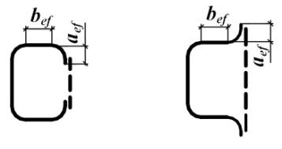
При моделировании нелинейной работы стали для расчетов по первой группе предельных состояний следует использовать расчетную диаграмму работы сталей в обобщенных параметрах 𝜎𝜎 � = 𝜎𝜎 𝑅𝑅 𝑦𝑦𝑦𝑦 и 𝜀𝜀̅ = 𝜀𝜀𝜀𝜀 𝑅𝑅 𝑦𝑦𝑦𝑦 = 𝜀𝜀 𝜀𝜀 𝑦𝑦𝑦𝑦 , представленную на рисунке В.1 (приложение В). Значение соответствующих координат характерных точек диаграммы следует принимать по таблице В.9. Расчеты выполняют по одному из трех вариантов кривой: OBD, OACD, OACDEF в зависимости от класса элементов конструкций (4.2.7).
Выполнять проверку устойчивости стержневых конструкций (в том числе пространственных) следует с использованием сертифицированных вычислительных комплексов как идеализированных систем в предположении упругих деформаций стали.
4 .2.6 Оценивать общую устойчивость каркаса по недеформированной схеме следует для: рамной (с жесткими узлами соединения ригелей с колоннами), рамно -связевой (рамный каркас с вертикальными диафрагмами жесткости или жесткими вставками) или связевой (с шарнирными узлами соединения ригелей с колоннами) систем, у которых есть в своем составе продольные и поперечные рамы и связи, установленные в соответствии с 1 5 .4.
В рамно -связевой или в связевой системе, когда узлы связевого блока не совпадают с узлами каркаса, расчет следует выполнять по деформированной схеме (с учетом геометрической нелинейности системы).
4 .2.7 Элементы конструкций, рассматриваемые в настоящем своде правил, в зависимости от напряженно -деформированного состояния (НДС) расчётного сечения подразделяются на три класса:
1 -й класс -НДС, при котором напряжения по всей площади сечения не превышают расчётного сопротивления стали | 𝜎𝜎 | ≤ Ry (упругое состояние сечения);
2 -й класс -НДС, при котором в одной части сечения | 𝜎𝜎 | < Ry , а в другой | 𝜎𝜎 | = Ry (упруго -пластическое состояние сечения);
3 -й класс -НДС, при котором по всей площади сечения | 𝜎𝜎 | = Ry (пластическое состояние сечения, условный пластический шарнир).
4.2.8. Буквенные обозначения величин, использованные в настоящем своде правил, приведены в приложении А.
4 .3 Учет назначения и условий работы конструкций
4 .3.1 В зависимости от назначения, условий работы и наличия сварных соединений конструкции следует подразделять на четыре группы согласно приложению В.
4 .3.2 При расчёте конструкций и соединений следует учитывать: коэффициенты надежности по ответственности γ n , принимаемые согласно требованиям ГОСТ 27751; коэффициент надежности γ u = 1,3 для элементов конструкций, рассчитываемых на прочность с использованием расчётных сопротивлений Ru ; коэффициенты условий работы элементов конструкций и соединений γ с , γ с 1 и γ b , принимаемые по таблице 1; пункту 7.1.2; таблице 45 и разделам 14, 16, 17 и 18.
Отношение критической нагрузки к расчетной для стержневых конструкций, рассчитываемых как идеализированные пространственные системы с использованием сертифицированных вычислительных комплексов (согласно 4 .2.5, 4 .2. 6), должно быть не меньше коэффициента надежности по устойчивости системы в целом γ s = 1,3.
4 .3.3 При проектировании конструкций, подвергающихся непосредственному воздействию подвижных, вибрационных и других переменных нагрузок, вызывающих усталость металла, следует применять такие конструктивные решения, которые не вызывают значительной концентрации напряжений, а в случаях, указанных в настоящем своде правил, выполнять расчёт на усталость.
Таблица 1
| Элементы конструкций | Коэффициенты условий работы γ с |
|---|---|
| 1 Балки сплошного сечения и сжатые элементы ферм перекрытий под залами театров, клубов, кинотеатров, под трибунами, под помещениями магазинов, книгохранилищ и архивов и т.п. при временной нагрузке, не превышающей вес перекрытий | 0,90 |
| 2 Колонны общественных и жилых зданий при постоянной нагрузке, равной не менее 0,8 расчетной; | 0,95 |
| многоэтажных зданий высотой до 150 м включительно; | 0,95 |
| двутаврового сечения многоэтажных зданий высотой более 150 м; | 0,90 |
| коробчатого сечения многоэтажных зданий высотой более 150 м; | 0,87 |
| опоры водонапорных башен | 0,95 |
| 3 Колонны одноэтажных производственных зданий с мостовыми кранами | 1,05 |
| 4 Сжатые основные элементы (кроме опорных) решетки составного таврового сечения из двух уголков в сварных фермах покрытий и перекрытий при расчёте на устойчивость указанных элементов с гибкостью λ > 60 | 0,80 |
| 5 Растянутые элементы (затяжки, тяги, оттяжки, подвески) при расчёте на прочность по неослабленному сечению | 0,90 |
| 6 Элементы конструкций из стали с пределом текучести до 440 Н/мм² , несущие статическую нагрузку, при расчете на прочность по сечению, ослабленному отверстиями для болтов (кроме фрикционных соединений) | 1,10 |
| 7 Сжатые элементы решетки пространственных решетчатых конструкций из одиночных уголков, прикрепляемые одной полкой (для неравнополочных уголков - бóльшей полкой): а) непосредственно к поясам сварными швами либо двумя болтами и более, установленными вдоль уголка: раскосы по рисунку 15, а и распорки по рисунку 15, б, в, е | 0,90 |
| раскосы по рисунку 15, в, г, д ,е | 0,80 |
| б) непосредственно к поясам одним болтом или через фасонку независимо от вида соединения | 0,75 |
|---|---|
| 8 Сжатые элементы из одиночных уголков, прикрепляемых одной полкой (для неравнополочных уголков - мéньшей полкой), за исключением элементов плоских ферм из одиночных уголков и элементов, указанных в позиции 7 настоящей таблицы, раскосов по рисунку 15, б , прикрепляемых непосредственно к поясам сварными швами либо двумя болтами и более, установленными вдоль уголка, и плоских ферм из одиночных уголков | 0,75 |
| 9 Опорные плиты из стали с пределом текучести до 390 Н/мм² , несущие статическую нагрузку, толщиной, мм: а) до 40 | 1,20 |
| б) св. 40 до 60 | 1,15 |
| в) » 60 » 80 | 1,10 |
| Примечания | |
| 1 Коэффициенты γ с < 1 при расчёте совместно учитывать не следует. 2 При расчёте на прочность по сечению, ослабленному отверстиями для болтов, коэффициенты условий работы, приведенные в позициях 6 и 1; 6 и 2; 6 и 3 следует учитывать совместно. | 1 Коэффициенты γ с < 1 при расчёте совместно учитывать не следует. 2 При расчёте на прочность по сечению, ослабленному отверстиями для болтов, коэффициенты условий работы, приведенные в позициях 6 и 1; 6 и 2; 6 и 3 следует учитывать совместно. |
| 3 При расчёте опорных плит коэффициенты, приведенные в позициях 9 и 2, 9 и 3, следует учитывать совместно. | 3 При расчёте опорных плит коэффициенты, приведенные в позициях 9 и 2, 9 и 3, следует учитывать совместно. |
| 4 Коэффициенты для элементов, приведенных в позициях 1 и 2, следует учитывать также при расчёте их соединений. | 4 Коэффициенты для элементов, приведенных в позициях 1 и 2, следует учитывать также при расчёте их соединений. |
5Материалы для конструкций и соединений
5 .3 Для конструкций следует использовать фасонный (уголки, двутавры, швеллеры), листовой, широкополосный универсальный прокат и гнутые профили; тонколистовой прокат из углеродистой стали и из стали повышенной прочности; холодногнутые профили; профили гнутые замкнутые квадратные и прямоугольные; сортовой прокат (круг, квадрат, полоса) в соответствии с действующими нормативными документами (НД); электросварные и горячедеформированные бесшовные трубы -в соответствии с таблицами В.1 и В.2 (приложение В).
Другие материалы, с сертификатом соответствия установленной формы, следует использовать при условии выполнения требований приложения В к механическим свойствам и химическому составу.
В зависимости от особенностей конструкций и узлов при заказе стали следует учитывать классификацию листового проката в зависимости от значения относительного сужения ψ z (см. 13.4) в соответствии с действующим стандартом.
Для обеспечения предела огнестойкости (45 мин) для всех групп, согласно приложению В, открытых конструкций (см. 4 .1.2), независимо от расчетной температуры, следует назначать прокат из стали С 355П или прокат из других сталей, обеспечивающих предел огнестойкости 45 мин.
5 . 4 Для отливок (опорных частей и т.п.) следует применять сталь марок 15Л, 25Л, 35Л и 45Л, удовлетворяющую требованиям действующих стандартов для группы II (отливки ответственного назначения для деталей, рассчитываемых на прочность, работающих при статических и переменных нагрузках) или III (отливки особо ответственного назначения для деталей, рассчитываемых на прочность, работающих при динамических нагрузках). Расчетные сопротивления отливок из серого чугуна следует принимать по таблице В. 8 .
Применяемые сварочные материалы и технология сварки должны обеспечивать значение временного сопротивления металла шва не ниже нормативного значения временного сопротивления Run основного металла, а также значения твёрдости, ударной вязкости и относительного удлинения металла сварных соединений, установленные соответствующими нормативными документами.
Болты следует применять согласно таблице Г.3.
При работе болтов на срез и растяжение классы прочности гаек следует принимать в соответствии с классом прочности болтов: 5 -при 5.6; 8 -при 8.8; 10 -при 10.9; 12 -при 12.9.
При работе болтов только на срез применяют класс прочности гаек при классе прочности болтов: 4 -при 5.6 и 5.8; 5 -при 8.8; 8 -при 10.9; 10 -при 12.9.
Шайбы следует применять: круглые, косые и пружинные нормальные в соответствии с действующими стандартами.
Для фланцевых соединений следует применять высокопрочные болты климатического исполнения ХЛ.
5. 8 Марки стали для фундаментных болтов, их конструкцию и размеры следует выбирать в соответствии с действующими стандартами и требованиями, приведенными в таблице Г.4 (приложение Г).
Болты ( Uобразные) для крепления оттяжек антенных сооружений связи, а также Uобразные и фундаментные болты опор воздушных линий электропередачи и распределительных устройств следует применять из стали марок указанных в таблице Г. 4 (приложение Г).
Анкерные болты следует применять согласно требованиям СП 4 3.13330.
5. 9 Гайки для фундаментных и U -образных болтов диаметром до и свыше 48 мм следует применять по соответствующим техническим требованиям действующих стандартов.
Для фундаментных болтов из стали Ст3пс2, Ст3сп2, Ст3пс4, Ст3сп4 диаметром до 48 мм следует применять гайки класса прочности 4, диаметром свыше 48 мм -из материала не ниже группы 02 по соответствующему стандарту.
Для фундаментных болтов диаметром до 48 мм из стали марки 09Г2С и других сталей следует применять гайки класса прочности не ниже 5 -го, диаметром свыше 48 мм
- из материала не ниже группы 05 по соответствующему стандарту. Гайки следует применять из стали марок, принимаемых для болтов.
- 5 .10 Для шарниров, катков и болтов, работающих в качестве шарниров, а также подкладных листов под катки, следует применять поковки по СП 35.13330.
- 5 .11 Для несущих элементов висячих покрытий, оттяжек опор воздушных линий электропередачи, распределительных устройств, контактных сетей транспорта, мачт и башен, а также напрягаемых элементов в предварительно напряженных конструкциях в соответствии с действующими стандартами следует применять: канаты спиральные; канаты двойной свивки; канаты закрытые несущие; пучки и пряди параллельных проволок, формируемых из канатной проволоки.
6Расчетные характеристики материалов и соединений
Таблица 2
| Напряжённое состояние | Расчётные сопротивления проката и труб |
|---|---|
| Растяжение, сжатие, изгиб: по пределу текучести по временному сопротивлению Сдвиг Смятие торцевой поверхности (при местное в цилиндрических | R y = R yn / γ m R u = R un / γ m R s = 0,58 R yn / γ m R p = R un / γ m R lp = 0,5 R un / γ m R cd = 0,025 R un / γ m |
| наличии пригонки) шарнирах (цапфах) при плотном касании Диаметральное сжатие катков (при свободном | |
| касании в конструкциях с ограниченной подвижностью) |
Значения коэффициентов надёжности по материалу γ m проката, гнутых профилей и труб следует принимать по таблице 3.
Таблица 3
| Условия контроля свойств проката | Коэффициент надежности по материалу γ m |
|---|---|
| Для проката при статистической процедуре контроля его свойств | 1,025 |
| Для проката, не использующего статистическую процедуру контроля его свойств, с пределом текучести свыше 380 Н/мм² и для горячедеформированных труб | 1,100 |
| Для остального проката и труб, соответствующих требованиям настоящего свода правил | 1,050 |
| Для проката и труб, поставляемых по зарубежной нормативной документации | 1,0 5 0 |
Значения нормативных и расчетных сопротивлений при растяжении, сжатии и изгибе листового, широкополосного универсального проката и труб приведены в таблице В.3, фасонного проката -в таблицах В.4 и В. 5 (приложение В).
Значения расчетных сопротивлений проката смятию торцевой поверхности, местному смятию в цилиндрических шарнирах и диаметральному сжатию катков приведены в таблице В.6 (приложение В).
Таблица 4
Примечание -Значения коэффициентов надёжности по металлу шва γ wm следует принимать равными: 1,25 -при Rwun ≤ 490 Н/мм² ; 1,35 -при Rwun ≥ 590 Н/мм² .
| Сварные соединения | Напряженное состояние | Характеристика расчётного сопротивления | Расчётные сопротивления сварных соединений |
|---|---|---|---|
| Стыковые | Сжатие, растяжение и изгиб при автоматической, механизированной или ручной сварке с физическим контролем качества шва | По пределу текучести | R wy = R y |
| Стыковые | По временному сопротивлению | R wu = R u | |
| Стыковые | Растяжение и изгиб при автоматической, механизированной или ручной сварке | По пределу текучести | R wy = 0,85 R y |
| Стыковые | Сдвиг | Сдвиг | R ws = R s |
| С угловыми швами | Срез (условный) | По металлу шва | R wf = wm wun γ R 0,55 |
| С угловыми швами | Срез (условный) | По металлу границы сплавления | R wz =0,45 R un |
Расчётное сопротивление сварного стыкового соединения элементов из сталей с разными нормативными сопротивлениями следует принимать как для стыкового соединения из стали с меньшим значением нормативного сопротивления.
Значения нормативных Rwun и расчётных Rwf сопротивлений металла угловых швов приведены в таблице Г.2 (приложение Г).
Таблица 5
| Условное обозна - чение | Расчетные сопротивления одноболтовых соединений | Расчетные сопротивления одноболтовых соединений | Расчетные сопротивления одноболтовых соединений | Расчетные сопротивления одноболтовых соединений | Расчетные сопротивления одноболтовых соединений | Расчетные сопротивления одноболтовых соединений | |
|---|---|---|---|---|---|---|---|
| Напряженное состояние | срезу и растяжению болтов классов прочности | срезу и растяжению болтов классов прочности | срезу и растяжению болтов классов прочности | срезу и растяжению болтов классов прочности | срезу и растяжению болтов классов прочности | смятию соединяемых | |
| 5.6 | 5 .8 | 8.8 | 10.9 | 12.9 | элементов | ||
| Срез | R bs | 0,42 R bun | 0,41 R bun | 0,40 R bun | 0,40 R bun | 0,35 R bun | - |
| Растяжение | R bt | 0,45 R bun | - | 0,54 R bun | 0,7 R bun | 0,7 R bun | - |
| Cмятие: а) болты класса точности А | R bp * | - | - | - | - | - | 1,60 R u |
| б) болты класса точности В | R bp * | - | - | - | - | - | 1,35 R u |
Значения нормативных и расчетных сопротивлений срезу и растяжению стали болтов в одноболтовых соединениях приведены в таблице Г.5, а смятию элементов, соединяемых болтами, в таблице Г.6 (приложение Г).
Значения расчетных сопротивлений растяжению фундаментных болтов приведены в таблице Г.7 (приложение Г).
Расчётное сопротивление растяжению U -образных болтов RbU , указанных в 5 .8, следует определять по формуле
где Rbun -нормативное сопротивление болта, принимаемое по таблице Г.8.
7Расчет элементов стальных конструкций при центральном растяжении и сжатии
7 .1 Расчет элементов сплошного сечения
Расчёт на прочность растянутых элементов, эксплуатация которых возможна и после достижения металлом предела текучести, а также растянутых или сжатых элементов из стали с нормативным сопротивлением Ryn > 440 Н/мм² следует выполнять по формуле (5) с заменой значения Ry на Ru / γ u .
где γ с 1 = ( α 1 An 1 / An + α 2 ) β .
Здесь An -площадь сечения уголка нетто;
An 1 -площадь части сечения прикрепляемой полки уголка между краем отверстия и пером; α 1 , α 2 , β -коэффициенты, принимаемые по таблице 6.
Таблица 6
| Значения коэффициентов α 1 , α 2 и β | Значения коэффициентов α 1 , α 2 и β | Значения коэффициентов α 1 , α 2 и β | Значения коэффициентов α 1 , α 2 и β | Значения коэффициентов α 1 , α 2 и β | Значения коэффициентов α 1 , α 2 и β | |
|---|---|---|---|---|---|---|
| Коэффи - циент | при одном болте и расстоянии а , равном | при одном болте и расстоянии а , равном | при одном болте и расстоянии а , равном | при а ≥ 1,5 d и s ≥ 2 d при числе болтов в ряду | при а ≥ 1,5 d и s ≥ 2 d при числе болтов в ряду | при а ≥ 1,5 d и s ≥ 2 d при числе болтов в ряду |
| 1,35 d * | 1,5 d | 2 d | 2 | 3 | 4 | |
| α 1 | 1,70 | 1,70 | 1,70 | 1,77 | 1,45 | 1,17 |
| α 2 | 0,05 | 0,05 | 0,05 | 0,19 | 0,36 | 0,47 |
| β | 0,65 | 0,85 | 1,0 | 1,0 | 1,0 | 1,0 |
Обозначения, принятые в таблице 6:
« a » -расстояние вдоль усилия от края элемента до центра ближайшего отверстия;
« s » -расстояние вдоль усилия между центрами отверстий.
При расчёте тяг и поясов траверс, элементов опор ВЛ, ОРУ и КС, непосредственно примыкающих к узлам крепления проводов, а также элементов, соединяющих в стойках узлы крепления тяг и растянутых поясов траверс, коэффициент γ с 1 следует уменьшать на 10 %.
где ϕ -коэффициент устойчивости при центральном сжатии, значение которого при 𝜆𝜆 ̅ ≥ 0,6 следует определять по формуле
Значение коэффициента δ в формуле (8) следует вычислять по формуле
где = λ -условная гибкость стержня;
α и β -коэффициенты, определяемые по таблице 7 в зависимости от типов сечений.
Значения коэффициента ϕ , вычисленные по формуле (8), следует принимать не более 7,6 / 𝜆𝜆 ̅ 2 при значениях условной гибкости свыше 3,8; 4,4 и 5,8 для типов сечений а , b и с , соответственно.
При значениях 𝜆𝜆 ̅ < 0,6 для типов сечений a и b следует принимать ϕ = 1.
Вычисленные по формуле ( 8 ) значения коэффициента ϕ приведены в таблице Д.1 (приложение Д).
Таблица 7
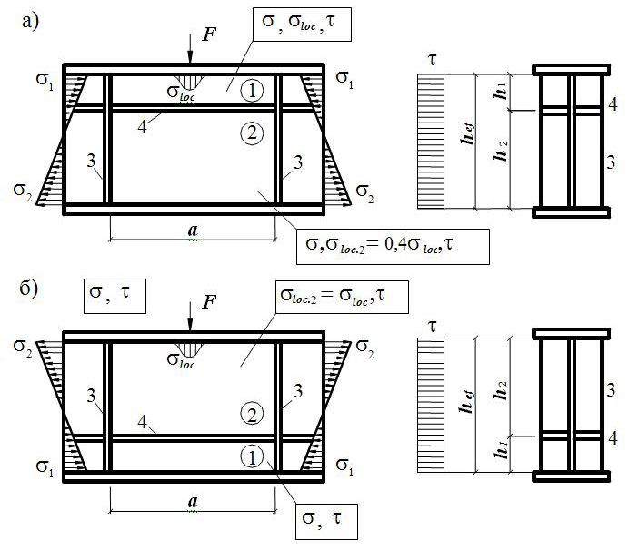
При расчёте поясов и элементов решётки пространственных конструкций из одиночных уголков следует выполнять требования 16.12.
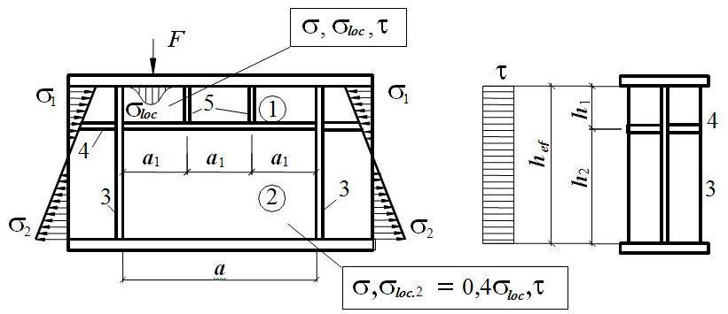
При отсутствии планок или решеток такие элементы, помимо расчета по формуле (7) в главных плоскостях х -х и у -у , следует проверять на устойчивость при изгибно -крутильной форме потери устойчивости по формуле
здесь ϕ с -коэффициент, принимаемый равным где значение
В формуле (11) коэффициент cmax следует определять по приложению Д.
7 .2 Расчет элементов сквозного сечения
Расчёт на устойчивость сквозных стержней с числом панелей менее шести следует выполнять: при планках -как расчёт рамных систем; при решётках -согласно требованиям 7.2.5.
При наличии в одной из плоскостей сплошного листа вместо планок (см. рисунок 2, б ) и в ) гибкость ветви следует вычислять по радиусу инерции полусечения относительно его центральной оси, перпендикулярной к плоскости планок.
В сквозных стержнях с решётками условная гибкость отдельных ветвей между узлами должна быть не более 2,7 и не должна превышать усло вную приведенную гибкость 𝜆𝜆 ̅ ef стержня в целом.
Принимать более высокие значения условной гибкости ветвей, но не более 4,1, следует при условии, что расчёт таких стержней выполнен согласно требованиям 7.2.5.
При этом коэффициент устойчивости ϕ 1 для отдельной ветви при 𝜆𝜆 ̅ b ≤ 2,7 следует принимать равным 1,0, а при 𝜆𝜆 ̅ b ≥ 3,2 -определять по формуле (8) при расчётной длине l ef = 0,7 lb , где lb -длина ветви (на рисунке 3,а длина ветви -2 lb ).
В интервале условных гибкостей 2,7 < 𝜆𝜆 ̅ b < 3,2 значение ϕ 1 следует определять линейной интерполяцией между 1,0 и значением ϕ 1 при 𝜆𝜆 ̅ b = 3,2. а) -треугольная; б) -треугольная с распорками; в) -крестовая; г) -крестовая с распорками Рисунок 3 -Схемы решеток сквозных стержней
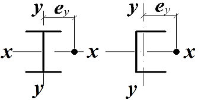
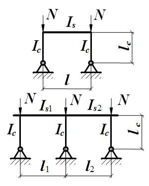
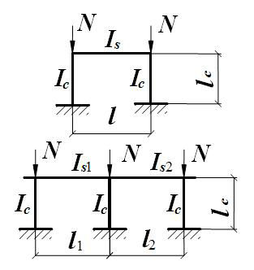
Таблица 8
| Тип | Схема сечения | Приведенная гибкость λ ef стержня сквозного сечения | Приведенная гибкость λ ef стержня сквозного сечения | Приведенная гибкость λ ef стержня сквозного сечения |
|---|---|---|---|---|
| сечения | с планками | с решетками | с решетками | |
| 1 | x x y 1 1 b | 2 1 2 b y ef n λ λ λ ) 0,82(1 + + = , (12) где b s b l I b I n 1 = | 1 2 d y ef A A α λ λ + = , где b l b d α 2 3 10 = | (15) |
| 2 | y x x 1 1 2 2 b 1 b 2 | [ ] 2 2 2 2 1 1 ) (1 ) (1 0,82 b b max ef λ n λ n λ λ + + + + = 2 , (13) где b s b l I b I n 1 1 1 1 = ; b s b l I b I n 2 2 2 2 = | 1 2 1 2 d d d max ef A A A A α α λ λ ) ( 2 1 + + = , где b l b d α 2 1 3 1 1 10 = ; b l b d α 2 2 3 2 2 10 = ( d 1 и d 2 относятся к сторонам соответственно b 1 и b 2 ) | (16) |
| 3 | b x x 3 3 y y | 2 3 3 2 b max ef n λ λ λ ) 3 0,82(1 + + = , (14) где b s b l I b I n 3 3 = | 3 2 d max ef A A α λ λ 0,67 + = , где b l b d α 2 3 10 = | (17) |
Окончание таблицы 8
Обозначения, принятые в таблице 8:
- λ у -гибкость сквозного стержня в целом в плоскости, перпендикулярной к оси у -у ;
- λ max -наибольшая из гибкостей сквозного стержня в целом в плоскостях, перпендикулярных к осям х -х или у -у ;
- λ b 1, λ b 2 , λ b 3 -гибкости отдельных ветвей при изгибе в плоскостях, перпендикулярных к осям соответственно 1 -1, 2 -2 и 3 -3, на участках между сварными швами или крайними болтами, прикрепляющими планки;
- b , ( b 1, b2) -расстояние между осями ветвей;
- d , l b -размеры, определяемые по рисункам 3 и 4;
- А -площадь сечения всего стержня;
- Ad 1 , Ad 2 -площади сечений раскосов решеток (при крестовой решетке -двух раскосов), расположенных соответственно в плоскостях, перпендикулярных к осям 1 -1 и 2 -2;
- Ad 3 -площадь сечения раскоса решетки (при крестовой решетке -двух раскосов), лежащей в плоскости одной грани (для трехгранного равностороннего стержня);
- Ib 1 , Ib 3 -моменты инерции сечения ветвей относительно осей соответственно 1 -1 и 3 -3 (для сечений типов 1 и 3 );
- Ib 1 , Ib 2 -то же, двух уголков относительно осей соответственно 1 -1 и 2 -2 (для сечения типа 2);
- Is -момент инерции сечения одной планки относительно собственной оси х -х (рисунок 4; для сечений типов 1 и 3);
- Is 1 , Is 2 \_ момент инерции сечения одной из планок, расположенных в плоскостях, перпендикулярных осям соответственно 1 -1 и 2 -2 (для сечения типа 2).
Примечание -К типу 1 также следует относить сечения, у которых вместо швеллеров применены двутавры, трубчатые и другие профили для одной или обеих ветвей; при этом оси у -у и 1 -1 должны проходить через центры тяжести соответственно сечения в целом и отдельной ветви, а значения n и λ b 1 в формуле (12) должны обеспечить наибольшее значение λ ef .
Рисунок 4 -Сквозной стержень с планками
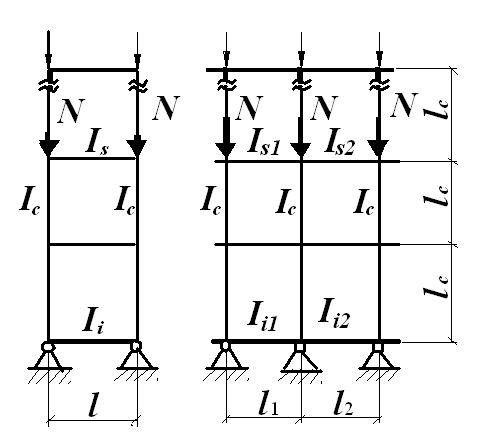
При этом в пределах длины сжатого элемента следует предусматривать не менее двух промежуточных связей (прокладок).
где N -продольное усилие в сквозном стержне; ϕ -коэффициент устойчивости при центральном сжатии (для сечения типа в ), принимаемый при расчёте сквозного стержня в плоскости планок или решеток. Условную поперечную силу Qfic следует распределять: при наличии только соединительных планок (решёток) -поровну между планками (решётками), лежащими в плоскостях, перпендикулярных к оси, относительно которой производится проверка устойчивости; при наличии сплошного листа и соединительных планок (решёток) -пополам между листом и планками (решётками), лежащими в плоскостях, параллельных листу; при расчёте равносторонних трехгранных сквозных стержней -равной 0,8 Qfic для каждой системы соединительных планок (решёток), расположенной в одной грани.
где Qs -условная поперечная сила, приходящаяся на планку одной грани.
где α 1 -коэффициент, принимаемый равным: 1,0 для решётки по рисункам 3, а , б и 0,5 -по рисунку 3, в ;
Qs -условная поперечная сила, приходящаяся на одну плоскость решётки.
При расчёте раскосов крестовой решётки с распорками (рисунок 3, г) следует учитывать дополнительное усилие Nad , возникающее в каждом раскосе от обжатия ветвей и определяемое по формуле
где α 2 = d l 2 b / (2 b 3 + d 3 ) -b , lb , d -
Nb -усилие в одной ветви стержня;
Ad , А b -площадь сечения одного раскоса и одной ветви соответственно.
Расчёт распорок, предназначенных для уменьшения расчётной длины ветвей колонн в плоскости, перпендикулярной к плоскости поперечных рам, при наличии нагрузок от мостовых или подвесных кранов, следует выполнять на условную поперечную силу, определяемую по формуле (18), где значение N следует принимать равным сумме продольных сил в двух ветвях колонн, соединенных распоркой.
7 .3 Проверка устойчивости стенок и поясных листов центрально сжатых элементов сплошного сечения
Рисунок 5 -Расчетные размеры стенок, свесов полок, поясных листов в прокатных, составных и гнутых профилях
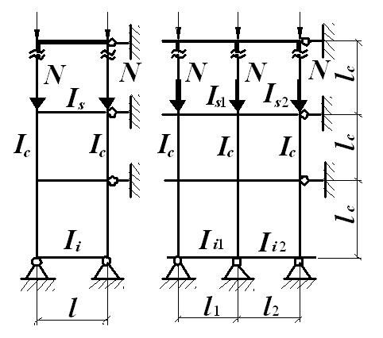
𝜆𝜆 ̅ полную высоту стенки -в сварных элементах; расстояние между ближайшими к оси элемента краями поясных уголков -в элементах с фрикционными поясными соединениями; расстояние между началами внутренних закруглений -в прокатных профилях; расстояние между краями выкружек -в гнутых профилях.
Таблица 9
| Сечение | Условная гибкость элемента λ | Предельная условная гибкость стенки 𝜆𝜆 uw | Предельная условная гибкость стенки 𝜆𝜆 uw |
|---|---|---|---|
| ≤ 2 | 1,30 + 0,15 𝜆𝜆 2 | (23) | |
| > 2 | 1,20 + 0,35 𝜆𝜆 ≤ 2,3 | (24) | |
| ≤ 1 | 1,2 | (25) | |
| > 1 | 1,0 + 0,2 𝜆𝜆 ≤ 1,6 | (26) | |
| ≤ 0,8 | 1,0 | (27) | |
| > 0,8 | 0,85 + 0,19 𝜆𝜆 ≤ 1,6 | (28) | |
| 0,8 ≤ 𝜆𝜆 ≤ 4 | (0,40+0,07 𝜆𝜆 )(1+0,25 ef f h b / - 2 ) (29) | (0,40+0,07 𝜆𝜆 )(1+0,25 ef f h b / - 2 ) (29) |
Обозначения, принятые в таблице 9: 𝜆𝜆 ̅ -условная гибкость элемента, принимаемая в расчете на устойчивость при центральном сжатии; bf -ширина полки тавра.
Примечания
- 1 В коробчатом сечении значение 𝜆𝜆 ̅ uw следует определять для пластинок, расположенных параллельно плоскости, в которой проверяется устойчивость элемента в целом.
2 В тавровом сечении должно соблюдаться условие 1
> 4 в формуле (29) следует принимать
= 0,8 или
≤ 𝑏𝑏 𝑓𝑓
/ h𝑒𝑒𝑓𝑓
≤
2; при
= 4 соответственно.
3 Знак « ≤ » в формулах означает, что значение 𝜆𝜆 ̅ uw в случае его превышения при расчёте по формуле следует принимать равным указанному в правой части. 𝜆𝜆 ̅ 𝜆𝜆 ̅
В сплошностенчатых ветвях колонн сквозного сечения рёбра жесткости следует устанавливать только в узлах крепления соединительных решёток (планок).
В стенке, укрепленной только поперечными рёбрами, ширина их выступающей части br должна быть не менее ( hef / 30 + 40) мм -для парного симметричного ребра, не 𝜆𝜆 ̅
<
0,8 или
СП 16.13330.2017 менее ( hef / 20 + 50) мм -для одностороннего ребра; толщина ребра t r должна быть не менее 2 br �𝑅𝑅𝑦𝑦 / 𝐸𝐸 .
При укреплении стенки односторонними поперечными рёбрами жёсткости одиночные уголки следует приваривать к стенке пером.
При расположении ребра с одной стороны стенки, его момент инерции следует вычислять относительно оси, совпадающей с ближайшей гранью стенки и он должен быть не менее, чем для парного симметричного ребра.
В случае выполнения продольного ребра в виде гофра стенки при вычислении hef следует учитывать развернутую длину гофра.
Продольные рёбра жёсткости следует включать в расчётные сечения элементов.
Минимальные размеры выступающей части продольных рёбер жёсткости следует принимать как для поперечных рёбер согласно требованиям 7.3.3.
- 7.3. 5 При рас чёте центрально -и внецентренно сжатых стержней сплошного сечения в случаях, когда фактическое значение условной гибкости стенки 𝜆𝜆 ̅ w = ( hef / tw ) �𝑅𝑅𝑦𝑦 / 𝐸𝐸 превышает (при центральном сжатии не более чем в 2 раза) , полученное согласно требованиям .4.3, в формулах (7), а также (109), (111), (115), (116), (120) и (121) значение предельной условной гибкости стенки λ uw 7.3.2, а также 9 .4.2 и 9 допускается принимать расчётную уменьшенную площадь сечения А d взамен А .
для коробчатого сечения: при центральном сжатии
при внецентренном сжатии
где hef и hd -расчётная и уменьшенная высота стенки, расположенной параллельно плоскости, в которой проверяется устойчивость; bef ,1 и bd -расчётная и уменьшенная ширина пояса коробчатого сечения, расположенного перпендикулярно к плоскости, в которой проверяется устойчивость.
Значение hd в центрально сжатых элементах следует вычислять по формулам: для двутаврового сечения
где при λ > 3,5 следует принимать λ = 3,5; для коробчатого сечения
где при λ > 2,3 следует принимать λ = 2,3; для швеллерного сечения
Значения λ и λ uw в формулах (34) -(36) для центрально сжатых элементов следует принимать согласно требованиям 7.3.2. При вычислении значения b d для коробчатого сечения по формуле (35) вместо hd , tw , 𝜆𝜆 ̅ uw и 𝜆𝜆 ̅ w следует принимать соответственно bd , t f , λ uf , 1 и λ f ,1 = ( bef ,1 / t f ) �𝑅𝑅𝑦𝑦 / 𝐸𝐸 , при этом значение 𝜆𝜆 ̅ uf , 1 следует определять согласно требованиям 7.3.9.
Значение hd для внецентренно сжатых элементов двутаврового и коробчатого сечений следует вычислять по формулам соответственно (34) и (35); при этом в этих формулах значения 𝜆𝜆 ̅ = 𝜆𝜆 ̅ х и 𝜆𝜆 ̅ uw следует принимать согласно 9 .4.2.
- от оси крайнего болта в поясе до края поясного листа -в элементах с фрикционными поясными соединениями; от начала внутреннего закругления до края полки -
- от края выкружки до края полки - в прокатных профилях; в гнутых профилях (см. рисунок 5).
Таблица 10
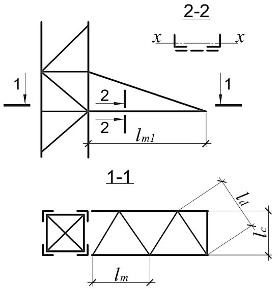
поясов 𝜆𝜆 ̅ uf ( 𝜆𝜆 ̅ uf ,1), определяемых по таблицам 9 и 10 соответственно, следует увеличивать умножением на коэффициент �𝜑𝜑𝜑𝜑𝑅𝑅 𝑦𝑦 / 𝑁𝑁 , но не более чем на 1,25.
8Расчет элементов стальных конструкций при изгибе
8.1Общие положения расчета
В зависимости от назначения и условий эксплуатации конструкций расчёт изгибаемых элементов (балок) следует выполнять без учёта или с учётом пластических деформаций в соответствии с подразделением элементов на три класса согласно 4.2.7.
Балки 1 -го класса следует применять для нагрузок всех видов и рассчитывать в пределах упругих деформаций; балки 2 -го и 3 -го классов следует применять для статических нагрузок и рассчитывать с учётом развития пластических деформаций.
Балки крановых путей под краны групп режимов работы 1К -8К по ГОСТ 25546 при расчёте на прочность следует относить к 1 -му классу.
Бистальные балки следует относить ко 2 -му классу и рассчитывать с учётом ограниченных пластических деформаций в стенке, значения которых следует определять при достижении расчётного сопротивления Ryf в поясах, выполненных из более прочной стали.
8.2Расчет на прочность изгибаемых элементов сплошного сечения
при действии в сечении поперечной силы
при действии моментов в двух главных плоскостях (и наличии бимомента)
где х и у -расстояния от главных осей до рассматриваемой точки сечения, а ω -секториальная координата этой точки; при одновременном действии в стенке балки момента и поперечной силы
где σ х = Mx y / Ixn -нормальное напряжение в срединной плоскости стенки, параллельное продольной оси балки; σ у
- то же, перпендикулярное к продольной оси балки, в том числе σ loc , определяемое по формуле (47); τ ху = QS / ( Itw ) -касательное напряжение в стенке.
Напряжения σ х и σ у , принимаемые в формуле (44) со своими знаками, а также τ ху следует определять в одной и той же точке стенки балки.
При проверке прочности на действие поперечной силы на опоре для разрезных балок формулу (42) следует использовать без учета работы поясов.
В балках, рассчитываемых по формуле (43), значения напряжений в стенке балки должны быть проверены по формуле (44) в двух главных плоскостях изгиба.
При ослаблении стенки отверстиями для болтов левую часть формулы (42), a также значение τ ху в формуле (44), следует умножать на коэффициент α , определяемый по формуле где σ loc = F / ( l ef tw
где s -шаг отверстий в одном вертикальном ряду; d -диаметр отверстия.
8 .2.2 Расчёт на прочность стенки балки, не укрепленной ребрами жёсткости, при действии местного напряжения σ loc в местах приложения нагрузки к верхнему поясу, а также в опорных сечениях балки, следует выполнять по формуле
Здесь F -расчётное значение нагрузки (силы); l ef -условная длина распределения нагрузки, определяемая по формулам: для случаев по рисунку 6, а ) и б )
б)
F ef для случая по рисунку 6, в
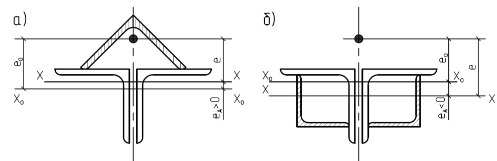
l
F tw
F ef l
F tw а) -сварная балка; б) -прокатная балка; в) -сварная или прокатная балки при нагрузке от колеса крана Рисунок 6 -Схемы распределения сосредоточенной нагрузки на стенку балки где h -размер, равный сумме толщины верхнего пояса балки и катета поясного шва, если нижняя балка сварная (см. рисунок 6,а), либо р асстоянию от наружной грани полки до начала внутреннего закругления стенки, если нижняя балка прокатная (см. рисунок 6,б);
- ψ -коэффициент, принимаемый равным: 3,25 -для сварных и прокатных балок; 4,5 -для балок с фрикционными поясными соединениями;
I1f -сумма собственных моментов инерции пояса балки и кранового рельса или момент инерции сечения, состоящего из пояса и рельса в случае приварки рельса швами, обеспечивающими совместную работу пояса и рельса; b -ширина опирания верхнего элемента.
8 .2.3 Расчёт на прочность разрезных балок 2 -го и 3 -го классов двутаврового и коробчатого сечений (рисунок 7) из стали с нормативным сопротивлением Ryn ≤ 440 Н/мм² при соблюдении требований 8 .4.6, 8 .5.8, 8 .5.9 и 8 .5.18 и при касательных напряжениях τ х = Qx / Aw ≤ 0,9 Rs (кроме опорных сечений) следует выполнять по формулам: в) h
Рисунок 7 -Схемы двутаврового (а) и коробчатого (б) сечений балок с действующими на них усилиями
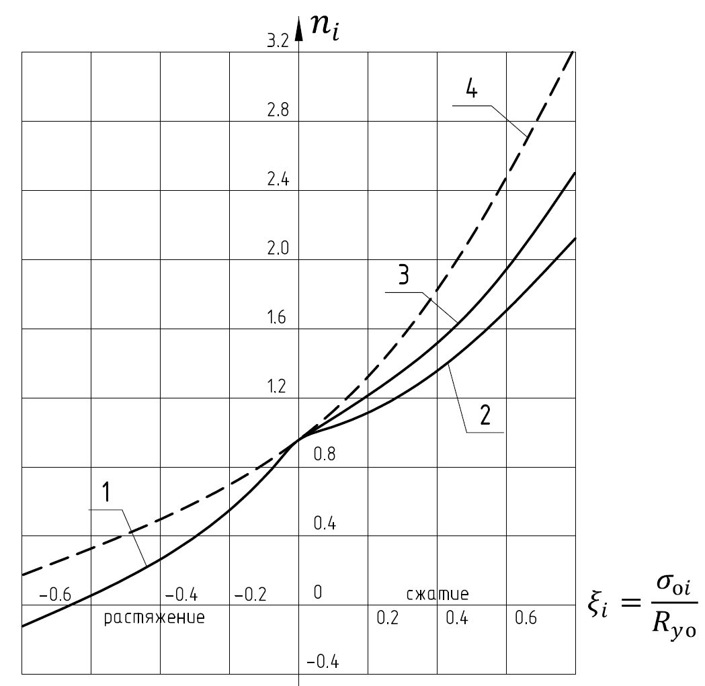
при изгибе в плоскости наибольшей жёсткости ( Ix > Iy )
при изгибе в двух главных плоскостях и напряжениях τ у = Qy / ( 2Af ) ≤ 0,5 Rs
Здесь Мх , Му -абсолютные значения изгибающих моментов; c х , c у -коэффициенты, принимаемые по таблице Е.1; β -коэффициент, принимаемый равным:
при 0,5 Rs < τ x ≤ 0,9 Rs
где α f = Af / Aw -отношение площади сечения пояса к площади сечения стенки (для несимметричного сечения А f -площадь меньшего пояса; для коробчатого сечения А w -суммарная площадь сечений двух стенок). при изгибе в плоскости наибольшей жесткости ( Ix > Iy ) и стеснённом кручении симметричных двутавров
где c ω -определяется линейной интерполяцией по таблице 10а: Таблица 10а
| ,min x x xn y c M cW R γ | 0 | 0,1 | 0,2 | 0,3 | 0, 4 | 0, 5 | 0,6 | 0,7 | 0, 8 | 0, 9 | 0, 99 |
|---|---|---|---|---|---|---|---|---|---|---|---|
| c ω | 1.470 | 1.636 | 1.845 | 2.054 | 2.263 | 2.472 | 2.681 | 2.890 | 3.099 | 3.308 | 3.496 |
При расчёте сечения в зоне чистого изгиба в формулах (50) и (51) следует принимать β = 1 и вместо коэффициентов сх и су соответственно
).
Расчёт на прочность в опорном сечении балок (при Мх = 0 и Му = 0) следует выполнять по формулам:
При ослаблении стенки отверстиями для болтов левую часть формул (54) и (55) следует умножать на коэффициент α , определяемый по формуле (45).
Для установления размеров минимальных сечений составных балок коэффициенты сх и су следует принимать меньше значений, приведенных в таблице Е.1, но не менее 1,0. Методика подбора минимальных сечений изгибаемых элементов приведена в правилах по проектированию стальных конструкций .
- 8 .2.4 Расчёт на прочность разрезных балок переменного сечения согласно 8 .2.3 с учетом пластических деформаций выполняется только в одном сечении с наиболее неблагоприятным сочетанием усилий M и Q ; в остальных сечениях балки расчёт следует выполнять при значениях коэффициентов сх и су меньших, чем в таблице Е.1 (приложение Е), или согласно 8 .2.1.
- 8 .2.5 Расчёт на прочность неразрезных и защемленных балок постоянного двутаврового и коробчатого сечений с двумя осями симметрии, изгибаемых в плоскости наибольшей жесткости, со смежными пролетами, отличающимися не более чем на 20 %, при соблю дении требований 8 .4.6, 8 .5.8, 8 .5.9 и 8 .5.18 следует выполнять по формуле (50) как сечений 2 -го класса с учётом частичного перераспределения опорных и пролетных моментов.
где Mmax -наибольший изгибающий момент в пролёте или на опоре, определяемый из расчета неразрезной балки в предположении упругой работы стали;
Мef -условный изгибающий момент, равный:
- а) в неразрезных балках с шарнирно опертыми концами бóльшему из значений:
где символ max означает, что следует найти максимум всего следующего за ним выражения;
- М 1 -изгибающий момент в крайнем пролете, вычисленный как в шарнирно опертой однопролетной балке; а -расстояние от сечения, в котором действует момент М 1, до крайней опоры; l -длина крайнего пролета;
- М 2 -максимальный изгибающий момент в промежуточном пролете, вычисленный как в шарнирно опертой однопролетной балке;
- б) в однопролетных и неразрезных балках с защемленными концами М ef = 0,5 М 3,
- где М 3 -наибольший из моментов, вычисленных как в балках с шарнирами на опорах; в) в балке с одним защемленным и другим свободно опертым концом значение
М ef
- следует определять по формуле (57).
Значение τ х в формуле (52) следует вычислять в сечении, где действует М max ; если М max -момент в пролете, следует проверить опорное сечение балки.
- 8 .2.6 Расчёт на прочность неразрезных и защемленных балок, удовлетворяющих 8 .2.5, в случае изгиба в двух главных плоскостях следует выполнять по формуле (51) с учётом перераспределения опорных и пролетных моментов в двух главных плоскостях согласно 8 .2.5.
- 8 .2.7 Расчёт на прочность неразрезных и защемленных балок, удовлетворяющих требованиям 8 .2.5, 8 .4.6, 8 .5.8, 8 .5.9 и 8 .5.18, следует выполнять по формуле (50) как сечений 3 -го класса с учётом перераспределения изгибающих моментов и образования условных пластических шарниров, а также влияния касательных напряжений τ х в соответствии с 8 .2.3 в сечениях с максимальным изгибающим моментом.
- 8 .2.8 Расчёт на прочность бистальных разрезных балок двутаврового и коробчатого сечений с двумя осями симметрии при соблюдении требований 8 .4.4, 8 .5.9 и 8 .5.17 и при касательных напряжениях τ х ≤ 0,9 R s и τ y ≤ 0,5 Rs (кроме опорных сечений) следует выполнять как расчёт сечений 2 -го класса по формулам: при изгибе в одной главной плоскости
при изгибе в двух главных плоскостях
В формулах (59) и (60):
где α f = Af / Aw ; r = Ryf / Ryw ; β r -коэффициент, принимаемый равным:
cyr -коэффициент, принимаемый равным 1,15 -для двутаврового сечения и 1,05/ r -для коробчатого сечения.
Расчёт бистальных балок при наличии зоны чистого изгиба и в опорном сечении, а также с учётом ослабления сечения следует выполнять согласно 8 .2.3 и правил проектирования стальных конструкций.
8.3Расчёт на прочность балок крановых путей сплошного сечения
- 8 .3.1 Расчёт на прочность балок крановых путей следует выполнять согласно 8 .2.1 на действие вертикальных и горизонтальных нагрузок, определяемых по СП 20.13330.
- 8 .3.2 Расчёт на прочность стенок балок крановых путей (за исключением балок, рассчитываемых на усталость, для кранов групп режимов работы 7К в цехах металлургических производств и 8К) следует выполнять по формуле (44), в которой при расчёте сечений на опорах неразрезных балок вместо коэффициента 0,87 следует принимать коэффициент 0,77.
(
(
(
где β -коэффициент, принимаемый равным 0,87 для расчета разрезных балок и 0,77 для расчета сечений на опорах неразрезных балок;
В формулах (67):
М и Q -изгибающий момент и поперечная сила в сечении балки соответственно от расчетной нагрузки, определяемой согласно СП 20.13330; γ f -коэффициент надежности по нагрузке для крановых нагрузок, принимаемый согласно СП 20.13330; γ f 1 -коэффициент увеличения сосредоточенной вертикальной нагрузки от одного колеса крана, принимаемый согласно СП 20.13330;
Fn -полное нормативное значение сосредоточенной вертикальной нагрузки от одного колеса крана; l ef -условная длина, определяемая согласно 8 .2.2;
М t -местный крутящий момент, определяемый по формуле
где е = 0,2 b , (здесь b -ширина подошвы рельса);
Qt -расчётная горизонтальная нагрузка, направленная поперек кранового пути, вызываемая перекосами мостовых кранов и непараллельностью крановых путей и принимаемая согласно СП 20.13330; hr -высота кранового рельса;
If = It + bf t f 3 / 3 -сумма собственных моментов инерции при кручении рельса и пояса, где bf и t f -соответственно ширина и толщина верхнего пояса балки.
Все напряжения в формулах (63) -(67) следует принимать со знаком «плюс».
8 .3.4 Расчет на прочность подвесных балок крановых путей (монорельсов) следует выполнять с учетом местных нормальных напряжений от давления колеса крана, направленных вдоль и поперек оси балки.
8 .3.5 Расчёт на прочность бистальных балок крановых путей двутаврового сечения с двумя осями симметрии для кранов групп режимов работы 1 K -5K при r = Ryf / Ryw ≤ 1,5 следует выполнять согласно требованиям 8.3.2 или по формуле (60), в которой:
Му -изгибающий момент в горизонтальной плоскости, полностью передающийся на верхний пояс балки; Wxn = Wxnf -момент сопротивления сечения верхнего пояса относительно оси у -у ; су -коэффициент, принимаемый равным 1,15.
8.4Расчет на общую устойчивость изгибаемых элементов сплошного сечения
8 .4.1 Расчёт на устойчивость двутавровых балок 1 -го класса, а также бистальных балок 2 -го класса, удовлетворяющих требованиям 8 .2.1 и 8 .2.8, следует выполнять по формулам: при изгибе в плоскости стенки, совпадающей с плоскостью симметрии сечения
при изгибе в двух главных плоскостях (и наличии бимоментов)
В формулах (69) и (70): ϕ b -коэффициент устойчивости при изгибе, определяемый по приложению Ж для балок с опорными сечениями, закрепленными от боковых смещений и поворота; W cx -момент сопротивления сечения относительно оси х -х , вычисленный для сжатого поя c а;
W сy -момент сопротивления сечения относительно оси у -у , совпадающей с плоскостью изгиба, вычисленный для наиболее сжатой точки сжатого пояса;
W сω -секториальный момент сопротивления сечения, вычисленный для наиболее сжатой точки сжатого пояса.
Знак «+» у второго и третьего членов в формуле (70) принимается, если в рассматриваемой точке соответствующее усилие вызывает сжатие.
Для бистальных балок в формулах (69) и (70), а также при определении ϕ b , Ry следует заменять на Ryf .
- 8 .4.2 При определении значения ϕ b за расчетную длину балки l ef следует принимать расстояние между точками закреплений сжатого пояса от поперечных смещений (узлами продольных или поперечных связей, точками крепления жесткого настила); при отсутствии связей l ef = l (где l -пролет балки); за расчётную длину консоли следует принимать: l ef = l при отсутствии закрепления сжатого пояса на конце консоли в горизонтальной плоскости (здесь l -длина консоли) или расстояние между точками закрепления сжатого пояса в горизонтальной плоскости -при закреплении пояса на конце и по длине консоли.
- 8 .4.3 Расчёт на устойчивость балок крановых путей двутаврового сечения следует выполнять по формуле (70), в которой: Му -изгибающий момент в горизонтальной плоскости, полностью передающийся на верхний пояс балки; Wy = Wyf -момент сопротивления сечения верхнего пояса относительно оси у -у .
- 8 .4.4 Устойчивость балок 1 -го класса, а также бистальных балок 2 -го класса следует считать обеспеченной:
- а) при передаче нагрузки на балку через сплошной жесткий настил (железобетонные плиты из тяжелого, легкого и ячеистого бетонов, плоский и профилированный металлический настил, волнистая сталь и т.п.), непрерывно опирающийся на сжатый пояс балки и связанный с ним с помощью сварки, болтов, самонарезающих винтов и др; при этом силы трения учитывать не следует;
- б) при значениях условной гибкости сжатого пояса балки 𝜆𝜆 ̅ b = ( l ef / b ) �𝑅𝑅𝑦𝑦𝑓𝑓 / 𝜎𝜎 , не превышающих ее предельных значений 𝜆𝜆 ̅ ub , определяемых по формулам таблицы 11 для балок симметричного двутаврового сечения или асимметричного -с более развитым сжатым поясом, рассчитываемых по формуле (69) и имеющих отношение ширины растянутого пояса к ширине сжатого пояса не менее 0,75.
Таблица 11
| Место приложения нагрузки | Условная предельная гибкость сжатого пояса прокатной или сварной балки 𝜆𝜆 ub |
|---|---|
| К верхнему поясу | 0,35+0,0032 b / t +(0,76 - 0,02 b / t ) b / h (71) |
| К нижнему поясу | 0,57+0,0032 b / t +(0,92 - 0,02 b / t ) b / h (72) |
| Независимо от уровня приложения нагрузки при расчёте участка балки между связями или при чистом изгибе | 0,41+0,0032 b / t +(0,73 - 0,016 b / t ) b / h (73) |
Обозначения, принятые в таблице 11 :
b и t -соответственно ширина и толщина сжатого пояса;
- h -расстояние (высота) между осями поясных листов.
Примечания
- 1 Значения 𝜆𝜆 ̅ ub определены при 1 ≤ h / b ≤ 6 и 15 ≤ b / t ≤ 35; для балок с отношением b / t < 15 в формулах таблицы 11 следует принимать b / t = 15.
- 2 Для балок с фрикционными поясными соединениями значения 𝜆𝜆 ̅ ub следует умножать на 1,2.
- 3 Значения 𝜆𝜆 ̅ ub следует повышать умножением на коэффициент �𝑅𝑅𝑦𝑦𝑓𝑓 / 𝜎𝜎 , где σ = М / ( Wc γ c ).
- 8 .4.5 Прикрепления к сжатому поясу жесткого настила, продольных или поперечных связей, которые должны обеспечивать устойчивость изгибаемого элемента, следует рассчитывать на фактическую или условную поперечную силу. При этом условную поперечную силу следует определять: при закреплении балки в отдельных точках -по формуле (18), в которой ϕ следует определять для сечения типа b (см. таблицу 7) при гибкости λ = l ef / i (где i -радиус инерции сечения сжатого пояса в горизонтальной плоскости), а N -вычислять по формуле
где Af и Aw -площади сечения сжатого пояса и стенки соответственно;
Ryf и Ryw -расчётные сопротивления стали сжатого пояса и стенки соответственно; при непрерывном закреплении -по формуле
где qfic -условная поперечная сила на единицу длины пояса балки;
Qfic -условная поперечная сила, определяемая по формуле (18), в которой ϕ = 1, а N следует вычислять по формуле (74).
8 .4.6 Устойчивость балок сечениями 2 -го и 3 -го классов следует считать обеспеченной при выполнении требований перечисления а) или б) 8 .4.4 при условии умножения значений 𝜆𝜆 ̅ ub , определяемых по формулам таблицы 11, на коэффициент
где c 1 х -коэффициент, определяемый по бóльшему значению из формул:
и изменяющийся в пределах 1 < c 1 х ≤ c х
.
Здесь Мх -изгибающий момент в сечении; β -коэффициент, принимаемый по формуле (52); c х -коэффициент, принимаемый согласно таблице Е.1.
При этом значения условной предельной гибкости пояса балки, принимаемые: δ 𝜆𝜆 ̅ ub -на участке длины балки, где учитываются пластические деформации;
Учёт пластических деформаций осуществляется при расчёте балок со сжатым поясом, менее развитым, чем растянутый, -только при выполнении требований перечисления а) 8.4.4. 𝜆𝜆 ̅ ub -на участках длины балки с напряжениями в сечениях σ = М / Wn , min ≤ Ry γ c .
8 .5 Проверка устойчивости стенок и поясных листов изгибаемых элементов сплошного сечения
- 8 .5.1 Устойчивость стенок балок 1 -го класса следует считать обеспеченной, если выполнены требования 8 .2.1, 8 .3.1 -8 .3.3, 8 .4.1 -8 .4.5 и условная гибкость стенки
- 3,5 -при отсутствии местного напряжения ( σ loc= 0) в балках с двусторонними поясными швами;
- 3,2 -то же, в балках с односторонними поясными швами;
- 2,5 -при наличии местного напряжения σ loc в балках с двусторонними поясными швами.
При этом следует устанавливать поперечные (и опорные) рёбра жесткости согласно 8 .5.9 или 8 .5.11 и 8 .5.12.
8 .5.2 Проверку устойчивости стенок балок 1 -го класса следует выполнять с учётом наибольшего сжимающего напряжения σ у расчетной границы стенки, принимаемого со знаком «плюс», среднего касательного напряжения τ и местного напряжения σ loc в стенке под сосредоточенной нагрузкой.
Напряжения σ и τ следует вычислять по формулам:
где М и Q -c редние значения изгибающего момента и поперечной силы соответственно в пределах отсека; если длина отсека а (расстояние между осями поперечных ребер жесткости) больше его расчетной высоты hef , то значения M и Q следует вычислять как средние для более напряжённого участка с длиной, равной hef ; если в пределах отсека момент или поперечная сила меняют знак, то их средние значения следует вычислять на участке отсека с одним знаком; hef -расчётная высота стенки, принимаемая по 7.3.1; hw -полная высота стенки.
Местное напряжение σ loc ( σ loc , y ) в стенке под сосредоточенной нагрузкой следует определять по 8 .2.2 и 8 .3.3.
В отсеках балки, где сосредоточенная нагрузка приложена к растянутому поясу, одновременно должны быть учтены только σ и τ или σ loc и τ .
- 8 .5.3 Устойчивость стенок балок 1 -го класса симметричного сечения, укрепленных только поперечными ребрами жёсткости (рисунок 8), при наличии местного напряжения ( σ loc ≠ 0) и при условной гибкости стенки 𝜆𝜆 ̅ w ≤ 6 �𝑅𝑅𝑦𝑦 / 𝜎𝜎 следует считать обеспеченной, если выполнено условие
σ , σ loc , τ -напряжения, определяемые согласно требованиям 8 .5.2; σ cr
где с cr -коэффициент, определяемый согласно 8 .5.4 -8 .5.6;
где с 1 и с 2 -коэффициенты, определяемые согласно 8 .5.5; τ
здесь µ -отношение большей стороны отсека стенки к меньшей; 𝜆𝜆 ̅ d = ( d / tw ) �𝑅𝑅𝑦𝑦 / 𝐸𝐸 ; d -меньшая из сторон отсека стенки ( hef или а ). а) -при приложении сосредоточенной нагрузки к сжатому поясу; б) -то же, к растянутому поясу Рисунок 8 -Схема участка балки, укрепленной поперечными ребрами жесткости
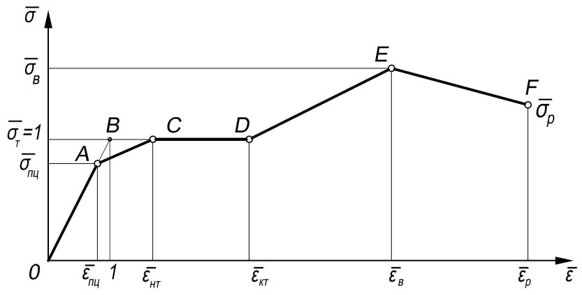
- 8 .5.4 Для балок по 8 .5.3 при σ loc = 0 коэффициент с cr в формуле (81) следует определять по таблице 12 в зависимости от вида поясных соедин e ний и значения коэффициента δ , вычисляемого по формуле
где β -коэффициент, принимаемый по таблице 13; bf , t f -ширина и толщина сжатого пояса балки, соответственно.
Таблица 12
| Поясные соединения | Значение с c r при δ , равном | Значение с c r при δ , равном | Значение с c r при δ , равном | Значение с c r при δ , равном | Значение с c r при δ , равном | Значение с c r при δ , равном | Значение с c r при δ , равном |
|---|---|---|---|---|---|---|---|
| балок | ≤ 0,8 | 1,0 | 2,0 | 4,0 | 6,0 | 10,0 | ≥ 30,0 |
| Сварные | 30,0 | 31,5 | 33,3 | 34,6 | 34,8 | 35,1 | 35,5 |
| Фрикционные | 35,2 | 35,2 | 35,2 | 35,2 | 35,2 | 35,2 | 35,2 |
Таблица 13
| Балки | Условия работы сжатого пояса | β |
|---|---|---|
| Крановых путей | Крановые рельсы не приварены Крановые рельсы приварены | 2,0 ∞ |
| Прочие | При непрерывном опирании плит В прочих случаях | ∞ 0,8 |
| Пр и м е ч а н и е - Для отсеков балок крановых путей, где сосредоточенная нагрузка приложена к растянутому поясу, при вычислении коэффициента δ следует принимать β = 0,8. | Пр и м е ч а н и е - Для отсеков балок крановых путей, где сосредоточенная нагрузка приложена к растянутому поясу, при вычислении коэффициента δ следует принимать β = 0,8. | Пр и м е ч а н и е - Для отсеков балок крановых путей, где сосредоточенная нагрузка приложена к растянутому поясу, при вычислении коэффициента δ следует принимать β = 0,8. |
8 .5.5 При вычислении значений σ loc , cr по формуле (82) при σ loc ≠ 0 следует принимать:
- с 1 -по таблице 14 в зависимости от отношения а / hef и значения ρ = 1,04 l ef / hef (здесь значение l ef следует определять согласно требованиям 8 .2.2);
- c 2 -по таблице 15 в зависимости от отношения а / hef и значения δ , вычисляемого по формуле (84); для балок с фрикционными поясными соединениями следует принимать δ = 10.
При σ loc ≠ 0 проверку стенки по формуле (80) следует выполнять в зависимости от значения а / hef : а) при отношении а / hef ≤ 0,8 значение σ cr следует определять по формуле (81) с учётом 8 .5.4.
Если сосредоточенная нагрузка приложена к растянутому поясу (рисунок 8,б), то при проверке стенки с учётом только σ loc и τ при определении коэффициента δ по формуле (84) за bf и t f следует принимать ширину и толщину растянутого пояса соответственно.
Таблица 14
| ρ | Значения с 1 при а / h ef ( а 1 / h ef ), равном | Значения с 1 при а / h ef ( а 1 / h ef ), равном | Значения с 1 при а / h ef ( а 1 / h ef ), равном | Значения с 1 при а / h ef ( а 1 / h ef ), равном | Значения с 1 при а / h ef ( а 1 / h ef ), равном | Значения с 1 при а / h ef ( а 1 / h ef ), равном | Значения с 1 при а / h ef ( а 1 / h ef ), равном | Значения с 1 при а / h ef ( а 1 / h ef ), равном | Значения с 1 при а / h ef ( а 1 / h ef ), равном | Значения с 1 при а / h ef ( а 1 / h ef ), равном |
|---|---|---|---|---|---|---|---|---|---|---|
| ρ | 0,50 | 0,60 | 0,67 | 0,80 | 1,0 | 1,2 | 1,4 | 1,6 | 1,8 | ≥ 2,0 |
| 0,10 | 56,7 | 46,6 | 41,8 | 34,9 | 28,5 | 24,5 | 21,7 | 19,5 | 17,7 | 16,2 |
| 0,15 | 38,9 | 31,3 | 27,9 | 23,0 | 18,6 | 16,2 | 14,6 | 13,6 | 12,7 | 12,0 |
| 0.20 | 33,9 | 26,7 | 23,5 | 19,2 | 15,4 | 13,3 | 12,1 | 11,3 | 10,7 | 10,2 |
| 0,25 | 30,6 | 24,9 | 20,3 | 16,2 | 12,9 | 11,1 | 10,0 | 9,4 | 9,0 | 8,7 |
| 0,30 | 28,9 | 21,6 | 18,5 | 14,5 | 11,3 | 9,6 | 8,7 | 8,1 | 7,8 | 7,6 |
| 0,35 | 28,0 | 20,6 | 17,4 | 13,4 | 10,2 | 8,6 | 7,7 | 7,2 | 6,9 | 6,7 |
| 0,40 | 27,4 | 20,0 | 16,8 | 12,7 | 9,5 | 7,9 | 7,0 | 6,6 | 6,3 | 6,1 |
Таблица 15
| δ | Значения коэффициента с 2 при а / h ef ( а 1 / h ef ), равном | Значения коэффициента с 2 при а / h ef ( а 1 / h ef ), равном | Значения коэффициента с 2 при а / h ef ( а 1 / h ef ), равном | Значения коэффициента с 2 при а / h ef ( а 1 / h ef ), равном | Значения коэффициента с 2 при а / h ef ( а 1 / h ef ), равном | Значения коэффициента с 2 при а / h ef ( а 1 / h ef ), равном | Значения коэффициента с 2 при а / h ef ( а 1 / h ef ), равном | Значения коэффициента с 2 при а / h ef ( а 1 / h ef ), равном |
|---|---|---|---|---|---|---|---|---|
| δ | 0,50 | 0,60 | 0,67 | 0,80 | 1,00 | 1,20 | 1,40 | ≥ I,60 |
| ≤ 1 | 1,56 | 1,56 | 1,56 | 1,56 | 1,56 | 1,56 | 1,56 | 1,56 |
| 2 | 1,64 | 1,64 | 1,64 | 1,67 | 1,76 | 1,82 | 1,84 | 1,85 |
| 4 | 1,66 | 1,67 | 1,69 | 1,75 | 1,88 | 2,01 | 2,09 | 2,12 |
| 6 | 1,67 | 1,68 | 1,70 | 1,77 | 1,92 | 2,08 | 2,19 | 2,26 |
| 10 | 1,68 | 1,69 | 1,71 | 1,78 | 1,96 | 2,14 | 2,28 | 2,38 |
| ≥ 30 | 1,68 | 1,70 | 1,72 | 1,80 | 1,99 | 2,20 | 2,38 | 2,52 |
б) при отношении а / hef > 0,8 проверку по формуле (80) следует выполнять дважды: при значении σ cr , вычисленном по формуле (81) с учётом 8.5.4, и при таком значении σ loc,cr по формуле (82), когда при определении коэффициентов c 1 и c 2 вместо размера а принят а 1 = 0,5 а при 0,8 ≤ а / h ef ≤ 1,33 или а 1 = 0,67 h ef при а / h ef >1,33; при значениях σ cr и σ loc,cr , вычисленных при фактическом значении а/h ef (если а/h ef >2, в расчёте следует принимать а / h ef = 2); при этом коэффициент с cr в формуле (81) следует определять по таблице 16.
Таблица 16
| Значение с c r при а / h ef или а / (2 h c ), равном | Значение с c r при а / h ef или а / (2 h c ), равном | Значение с c r при а / h ef или а / (2 h c ), равном | Значение с c r при а / h ef или а / (2 h c ), равном | Значение с c r при а / h ef или а / (2 h c ), равном | Значение с c r при а / h ef или а / (2 h c ), равном | Значение с c r при а / h ef или а / (2 h c ), равном | Значение с c r при а / h ef или а / (2 h c ), равном |
|---|---|---|---|---|---|---|---|
| ≤ 0,8 | 0,9 | 1,0 | 1,2 | 1,4 | 1,6 | 1,8 | ≥ 2,0 |
| По таблице12 | 37,0 | 39,2 | 45,2 | 52,8 | 62,0 | 72,6 | 84,7 |
Значение τ во всех случаях следует вычислять по фактическим размерам отсека. cr 8 .5.6 Устойчивость стенок балок 1 -го класса асимметричного двутаврового сечения с более развитым сжатым поясом, укрепленных только поперечными рёбрами жёсткости, следует считать обеспеченной, если условие (80) выполнено с учётом следующих изменений: при вычислении значений σ cr по формулам (81) и (84) вместо значения hef принята удвоенная высота сжатой зоны стенки 2 hc ; при а / hef > 0,8 и σ loc ≠ 0 выполнены две проверки, приведенные в 8 .5.5, в которых при определении с cr по таблице 16 и σ cr -по формуле (81) вместо значения hef принята удвоенная высота сжатой зоны стенки 2 hc .
Значения τ cr и σ loc , cr следует определять по фактическим размерам отсека стенки. 8 .5.7 Устойчивость стенок балок 1 -го класса асимметричного двутаврового сечения с более развитым растянутым поясом, укрепленных только поперечными рёбрами жёсткости, при одновременном действии напряжений σ и τ и отсутствии напряжений σ loc следует считать обеспеченной, если выполнено условие
где α = ( σ 1 -σ 2) / σ 1 ; β = ( σ cr / σ 1) ( τ / τ cr ); σ cr -по формуле (81).
Здесь σ 1 и σ 2 -сжимающее и растягивающее напряжения у расчётных границ стенки, принимаемые соответственно со знаком «плюс» и « минус» и определяемые по формуле (78); τ и τ cr -касательные напряжения, определяемые по формулам (79) и (83) соответственно; с cr -коэффициент, определяемый по таблице 17 в зависимости от α .
Таблица 17
| α | 1,0 | 1,2 | 1,4 | 1,6 | 1,8 | 2,0 |
|---|---|---|---|---|---|---|
| с cr | 10,2 | 12,7 | 15,5 | 20,0 | 25,0 | 30,0 |
- 8 .5.8 Устойчивость стенок балок 2 -го и 3 -го классов из однородной стали и бистальных при отсутствии местного напряжения ( σ loc= 0) и с соблюдением требований 7.3.1, 8 .2.3 и 8 .2.8 следует считать обеспеченной при выполнении условий:
- а) для балок двоякосимметричного двутаврового и коробчатого сечений
где α -коэффициент, определяемый по таблице 18 (при τ = Q / Aw и 𝜆𝜆 ̅ 𝑢𝑢𝑤𝑤 по 8.5.1); Таблица 18
| τ / R sw | Значения α при 𝜆𝜆 𝑤𝑤 , равном | Значения α при 𝜆𝜆 𝑤𝑤 , равном | Значения α при 𝜆𝜆 𝑤𝑤 , равном | Значения α при 𝜆𝜆 𝑤𝑤 , равном | Значения α при 𝜆𝜆 𝑤𝑤 , равном | Значения α при 𝜆𝜆 𝑤𝑤 , равном | Значения α при 𝜆𝜆 𝑤𝑤 , равном | Значения α при 𝜆𝜆 𝑤𝑤 , равном |
|---|---|---|---|---|---|---|---|---|
| τ / R sw | 2,2 | 2,5 | 3,0 | 3,5 | 4,0 | 4,5 | 5,0 | 5,5 |
| 0 | 0,240 | 0,239 | 0,235 | 0,226 | 0,213 | 0,195 | 0,173 | 0,153 |
| 0,5 | 0,203 | 0,202 | 0,197 | 0,189 | 0,176 | 0,158 | 0,136 | 0,116 |
| 0,6 | 0,186 | 0,185 | 0,181 | 0,172 | 0,159 | 0,141 | 0,119 | 0,099 |
| 0,7 | 0,167 | 0,166 | 0,162 | 0,152 | 0,140 | 0,122 | 0,100 | 0,080 |
| 0,8 | 0,144 | 0,143 | 0,139 | 0,130 | 0,117 | 0,099 | 0,077 | 0,057 |
| 0,9 | 0,119 | 0,118 | 0,114 | 0,105 | 0,092 | 0,074 | 0,052 | 0,032 |
r -следует определять по 8 .4.5; б) для балок асимметричного двутаврового сечения с более развитым сжатым поясом, укреплённых только поперечными рёбрами,
M
/
{[ σ
Af1 h1
+ σ
Af2
( hw
- h1)+ h1 tw α
Ryw
+ hw tw
( hw
- h1
)
�𝑅𝑅𝑦𝑦𝑤𝑤
- 𝜏𝜏
/
2] γ c
}
≤
1,
(87) где σ 1, σ 2 -напряжения в сжатом и растянутом поясах соответственно, если σ 1 ≥ Ryf или σ 2 ≥ Ryf , то следует принимать соответственно σ 1 = Ryf или σ 2 = Ryf .
В выражении (87) высоту сжатой зоны стенки h 1 следует определять по формуле h1 = Aw / (2 tw ) + ( Af2 σ 2 -Af1 σ 1 ) / (2 tw 2 2 ) . (88)
Значения М и Q следует вычислять в одном сечении балки.
8 .5.9 Стенки балок следует укреплять поперечными рёбрами жёсткости: в балках 1 -го класса, если значение условной гибкости стенки 𝜆𝜆 ̅ 𝑤𝑤 превышает 3,2 -при отсутствии подвижной нагрузки на поясе балки или 2,2 -при наличии такой нагрузки; в балках 2 -го и 3 -го классов -при любых значениях условной гибкости стенки на участках длины балки, где учитываются пластические деформации, а на остальных участках -как в балках 1 -го класса.
Расстояние между поперечными рёбрами не должно превышать 2 hef при 𝜆𝜆 ̅ 𝑤𝑤 ≥ 3,2 и 2,5 hef при 𝜆𝜆 ̅ 𝑤𝑤 < 3,2.
Для балок 1 -го класса увеличивать эти расстояния до значения 3 hef следует при условии, что устойчивость балки и стенки обеспечена выполнением требований перечисления a ) или б) 8.4.4, если 𝜆𝜆 ̅ 𝑢𝑢𝑢𝑢 не превышает значений, определяемых по формуле (71).
Поперечные рёбра жёсткости следует устанавливать в местах приложения неподвижных сосредоточенных нагрузок и на опорах балок.
Отсутствие поперечных рёбер жёсткости должно быть обосновано расчетом по 8.2.2.
В стенке, укрепленной только поперечными рёбрами, ширина их выступающей части br должна быть не менее ( hw / 30 + 25) мм -для парного ребра, не менее ( hw / 24 + 40) мм -для одностороннего ребра; толщина ребра t r должна быть не менее 2 br �𝑅𝑅𝑦𝑦 / 𝐸𝐸 .
При укреплении стенки односторонними поперечными ребрами жесткости из одиночных уголков, привариваемых к стенке пером, момент инерции такого ребра, вычисляемый относительно оси, совпадающей с ближайшей к ребру гранью стенки, должен быть не меньше, чем для парного ребра.
8 .5.10 Поперечное ребро жёсткости, расположенное в месте приложения сосредоточенной нагрузки к верхнему поясу, следует проверять расчётом на устойчивость: двустороннее ребро -как центрально сжатую стойку, а одностороннее -как стойку, сжатую с эксцентриситетом, равным расстоянию от срединной плоскости стенки до центра тяжести расчётного сечения стойки. При этом в расчётное сечение стойки необходимо включать сечение ребра жёсткости и полосы стенки шириной 0,65 tw �𝐸𝐸 / 𝑅𝑅 𝑦𝑦 с каждой стороны ребра, а расчётную длину стойки следует принимать равной расчетной высоте стенки hef .
8 .5.11 Стенки балок 1 -го класса, у которых при действии нормальных напряжений σ от изгиба устойчивость не обеспечена, а также при значениях условной гибкости стенки 𝜆𝜆 ̅ 𝑤𝑤 > 5,5 �𝑅𝑅𝑦𝑦 / 𝜎𝜎 (где σ -напряжение в сжатом поясе балки), следует укреплять продольным ребром жёсткости, устанавливаемым дополнительно к поперечным рёбрам.
8 .5.12 В стенке балки симметричного двутаврового сечения 1 -го класса, укреплённой, кроме поперечных рёбер, одной парой продольных ребер жёсткости, расположенной на расстоянии h 1 от границы сжатого отсека (рисунок 9), обе пластинки, на которые это ребро разделяет отсек, следует рассчитывать порознь:
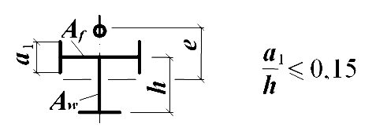
- а) -балка со сжатым верхним поясом; б) -балка с растянутым верхним поясом
Рисунок 9 -Схема балки, укрепленной поперечными (3) и продольными (4) ребрами жесткости
- а) пластинку 1, расположенную между сжатым поясом и продольным ребром, по формуле
здесь значения σ , σ loc , τ следует определять согласно требованиям 8.5.2, а значения σ cr ,1 и σ loc , cr ,1 -по формулам: при σ loc = 0
где λ 1 = ( h 1 / tw ) �𝑅𝑅𝑦𝑦 / 𝐸𝐸 ; при σ loc ≠ 0 и µ 1 = a / h 1 ≤ 2 (при µ 1 > 2 следует принимать µ 1 = 2)
где ψ = ( µ 1 + 1 / µ 1) 2 и λ а = ( а / tw ) �𝑅𝑅𝑦𝑦 / 𝐸𝐸
; (93) τ cr ,1 -критическое напряжение, которое следует определять по формуле (83) с подстановкой в неё размеров проверяемой пластинки;
- б) пластинку 2, расположенную между продольным ребром и растянутым поясом, -по формуле
где σ и τ -напряжения, определяемые по 8 .5.2;
σ loc ,2 -напряжение, в зависимости от того, к какому поясу приложена нагрузка: к сжатому (см. рисунок 9, а ) принимается равным 0,4 σ loc (здесь σ loc следует определять согласно 8 .5.2); к растянутому (см.рисунок 9, б ) -σ loc ,2 = σ loc ; σ loc , cr ,2 -напряжение, определяемое по формуле (82), где с 1 и с 2 следует определять соответственно по таблице 14 при ρ = 0,4 и по таблице 15 при δ = 1, заменяя значение hef значением ( hef -h 1);
- τ cr ,2 -напряжение, определяемое по формуле (83) с подстановкой в неё размеров проверяемой пластинки.
- 8 .5.13 Промежуточные ребра, расположенные на пластинке 1 между сжатым поясом и продольным ребром, следует доводить до продольного ребра (рисунок 10).
В этом случае расчет пластинки 1 следует выполнять по формулам (89) -(93), в которых величину а следует заменять величиной а 1, где а 1 -расстояние между осями соседних промежуточных рёбер (см. рисунок 10). Расчёт пластинки 2 следует выполнять по перечислению б) 8.5.12.
Рисунок 10 -Схема балки, укрепленной поперечными (3), продольными (4) и промежуточными (5) ребрами жесткости
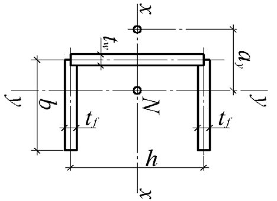
- 8 .5.14 Проверку устойчивости стенок балок асимметричного сечения (с более развитым сжатым поясом), укреплённых поперечными рёбрами и парным продольным ребром, расположенным в сжатой зоне, следует выполнять по формулам (89) и (90); при
- а в формуле (95) (0,5 -h 1 / hef ) следует заменить на [ σ 1 /( σ 1 -σ 2) -h 1 / hef ], где σ 2 -краевое растягивающее напряжение (со знаком "минус") у расчётной границы отсека.
- 8 .5.15 При укреплении стенки поперечными рёбрами и парным продольным ребром жёсткости места расположения и моменты инерции сечений этих рёбер должны удовлетворять требованиям 8 .5.9 и формулам таблицы 19.
Таблица 19
Примечание -При вычислении Irl промежуточные значения h1 / h ef следует определять линейной интерполяцией.
| ef h h 1 | Момент инерции ребра | Момент инерции ребра | Момент инерции ребра | Момент инерции ребра |
|---|---|---|---|---|
| ef h h 1 | поперечного продольного | предельное | предельное | |
| ef h h 1 | поперечного продольного | минимальное | максимальное | |
| 0,20 | ≥ 3 h ef t 3 w | (2,5 - 0,5 a / h ef ) a 2 t 3 w / h ef | 1,5 h ef t 3 w | 7 h ef t 3 w |
| 0,25 | ≥ 3 h ef t 3 w | (1,5 - 0,4 a / h ef ) a 2 t 3 w / h ef | 1,5 h ef t 3 w | 8,5 h ef t 3 w |
| 0,30 | ≥ 3 h ef t 3 w | 1,5 h ef t 3 w | - | - |
При расположении продольного и поперечных рёбер жесткости с одной стороны стенки моменты инерции сечений каждого из них следует вычислять относительно оси, совпадающей с ближайшей к ребру гранью стенки.
- 8 .5.16 При значениях условной гибкости стенки 𝜆𝜆 ̅ 𝑤𝑤 > 6 �𝑅𝑅𝑦𝑦 / 𝜎𝜎 балки симметричного двутаврового сечения проектируют как балки 2 -го класса с гибкими (неустойчивыми) стенками согласно правилам проектирования стальных конструкций.
- 8 .5.17 Участок стенки балки над опорой следует рассчитывать на устойчивость при центральном сжатии из плоскости балки как стойку, нагруженную опорной реакцией.
При укреплении стенки балки опорными ребрами жесткости с шириной выступающей части br ( br не менее 0,5 bfi , здесь bfi -ширина нижнего пояса балки) в расчётное сечение этой стойки следует включать сечение опорных ребер и полосы стенки шириной не более 0,65 tw �𝐸𝐸 / 𝑅𝑅 𝑦𝑦 с каждой стороны ребра.
Толщина опорного ребра жёсткости t r должна быть не менее 3 br �𝑅𝑅𝑦𝑦 / 𝐸𝐸 , где br -ширина выступающей части.
Расчётную длину стойки следует принимать равной расчетной высоте стенки балки hef .
Нижние торцы опорных рёбер (рисунок 11 ) должны быть остроганы либо плотно пригнаны или приварены к нижнему поясу балки. Напряжения в этих сечениях при действии опорной реакции не должны превышать расчетного сопротивления стали: в первом случае (см. рисунок 11, а ) -смятию R р при а ≤ 1,5 t и сжатию Ry при а > I ,5 t ; во втором случае (см. рисунок 11, б ) -смятию R р . а) -в торце с применением строжки; б) -удаленного от торца с плотной пригонкой или приваркой к нижнему поясу
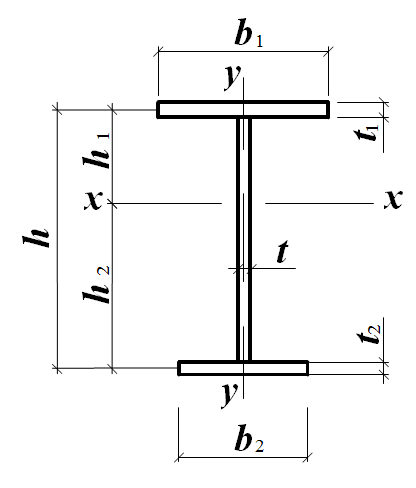
Рисунок 11 -Схема опорного ребра жесткости
Сварные швы, прикрепляющие опорное ребро к нижнему поясу балки, следует рассчитывать на воздействие опорной реакции.
При отсутствии опорных ребер жесткости (в прокатных балках) расчетное сечение стойки -полоса стенки шириной, равная длине участка опирания балки.
- 8 .5.18 Устойчивость сжатых поясов следует считать обеспеченной, если условная гибкость свеса пояса 𝜆𝜆 ̅ 𝑓𝑓 = ( 𝑏𝑏 𝑒𝑒𝑓𝑓 / 𝑡𝑡 𝑓𝑓 ) �𝑅𝑅𝑦𝑦𝑓𝑓 / 𝐸𝐸 или поясного листа 𝜆𝜆 ̅ 𝑓𝑓1 = ( 𝑏𝑏 𝑓𝑓 / 𝑡𝑡 𝑓𝑓 ) �𝑅𝑅𝑦𝑦 / 𝐸𝐸 балок 1 -го класса, а также бистальных 2 -го класса при выполнении требований 7.3.7, 8.2.1 и 8.2.8 не превышает предельных значений 𝜆𝜆 ̅ 𝑢𝑢𝑓𝑓 ( 𝜆𝜆 ̅ 𝑢𝑢𝑓𝑓 , 1 ), определяемых по формулам: для свеса полки (без окаймления и отгиба) двутаврового сечения
для поясного листа коробчатого сечения
Здесь σ с -напряжение в сжатом поясе, определяемое по формулам: для однородного сечения
для бистального сечения
где α ' -значения α из таблицы 18 при τ = 0; если σ с > Ryf , то следует принимать σ с = Ryf .
8 .5.19 Устойчивость сжатых поясов следует считать обеспеченной, если условная гибкость свеса сжатого пояса или поясного листа балок 2 -го и 3 -го классов из однородной стали при выполнении требований 7.3.7, 8 .2.3 и 8 .5.8 не превышает предельных значений 𝜆𝜆 ̅ 𝑢𝑢𝑓𝑓 ( 𝜆𝜆 ̅ 𝑢𝑢𝑓𝑓 , 1 ), определяемых при 2,2 ≤ 𝜆𝜆 ̅ 𝑢𝑢𝑤𝑤 ≤ 5,5 по формулам: для свеса полки (без окаймления и отгиба) двутаврового сечения
для поясного листа коробчатого сечения
8 .5.20 В случае окаймления или отгиба полки (стенки) сечения (рисунок 5), размером а ef ≥ 0,3 bef и толщиной t > 2 а ef �𝑅𝑅𝑦𝑦𝑓𝑓 / 𝐸𝐸 , значения 𝜆𝜆 ̅ 𝑢𝑢𝑓𝑓 , определяемые по формулам (97) и (99), допускается увеличивать в 1,5 раза.
При 𝜆𝜆 ̅ 𝑢𝑢𝑤𝑤 < 2,2 или 𝜆𝜆 ̅ 𝑢𝑢𝑤𝑤 > 5,5 следует принимать 𝜆𝜆 ̅ 𝑢𝑢𝑤𝑤 = 2,2 или 𝜆𝜆 ̅ 𝑢𝑢𝑤𝑤 = 5,5.
8. 6 Расчет опорных плит
8 .6.1 Площадь стальной опорной плиты должна удовлетворять требованиям расчёта на прочность фундамента.
Передача расчетного усилия на опорную плиту может осуществляться через фрезерованный торец или через сварные швы конструкции, опирающейся на плиту.
8 .6.2 Толщину опорной плиты следует определять расчетом на изгиб пластинки по формуле
где Mmax -наибольший из изгибающих моментов М , действующих на полосе единичной ширины разных участков опорной плиты и определяемых по формулам: для консольного участка плиты
для участка плиты, опертого на четыре стороны в направлении короткой и длинной сторон соответственно
для участка плиты, опертого по трем сторонам
для участка плиты, опертого на две стороны, сходящиеся под углом, по формуле (104), принимая при этом d1 -диагональ прямоугольника, а размер а 1 в таблице Е.2 -расстояние от вершины угла до диагонали.
Здесь c -вылет консольного участка плиты; α 1 , α 2 , α 3 -коэффициенты, зависящие от условий опирания и отношения размеров сторон участка плиты и принимаемые согласно таблице Е.2 (приложение Е); q -реактивный отпор фундамента под рассматриваемым участком плиты на единицу площади плиты.
9Расчет элементов стальных конструкций при действии продольной силы с изгибом
9 .1 Расчёт на прочность элементов сплошного сечения
- 9 .1.1 Расчёт на прочность внецентренно сжатых (сжато -изгибаемых) и внецентренно растянутых (растянуто -изгибаемых) элементов из стали с нормативным сопротивлением Ryn ≤ 440 Н/мм² , не подвергающихся непосредственному воздействию динамических нагрузок, при напряжениях τ < 0,5 Rs и σ = N / An > 0,1 Ry следует выполнять по формуле
где N , Mx и My , В -абсолютные значения соответственно продольной силы, изгибающих моментов и бимомента при наиболее неблагоприятном их сочетании; n , cx , cy -коэффициенты, принимаемые согласно таблице Е.1 (приложение Е).
Если σ = N / An ≤ 0,1 Ry , формулу (105) следует применять при выполнении требований 8 .5.8 и таблицы Е.1 (приложение Е).
Расчёт на прочность элементов в случаях, не предусмотренных расчётом по формуле (105), следует выполнять по формуле
(
где х , у -расстояния от главных осей до рассматриваемой точки сечения.
- 9 .1.2 Расчёт на прочность внецентренно сжатых (сжато -изгибаемых) элементов по формуле (105) выполнять не требуется при значении приведенного относительного эксцентриситета mef ≤ 20 ( 9 .2.2), отсутствии ослабления сечения и одинаковых значениях изгибающих моментов, принимаемых в расчётах на прочность и устойчивость.
- 9 .1.3 Внецентренно сжатые (сжато -изгибаемые) элементы из стали с нормативным сопротивлением Ryn > 440 Н/мм² , с несимметричными сечениями относительно оси, перпендикулярной к плоскости изгиба (например, сечения типов 10, 11 по таблице Д.2), следует проверять на прочность растянутого волокна сечения в плоскости действия момента по формуле
где Wtn -момент сопротивления сечения, вычисленный для растянутого волокна; δ -коэффициент, определяемый по формуле
9 .2 Расчёт на устойчивость элементов сплошного сечения
- 9 .2.1 Расчёт на устойчивость внецентренно сжатых (сжато -изгибаемых) элементов при действии момента в одной из главных плоскостей следует выполнять как в этой плоскости (плоская форма потери устойчивости), так и из этой плоскости (изгибно -крутильная форма потери устойчивости).
- 9 .2.2 Расчёт на устойчивость внецентренно сжатых (сжато -изгибаемых) элементов постоянного сечения (колонн многоэтажных зданий -в пределах этажа) в плоскости действия момента, совпадающей с плоскостью симметрии, следует выполнять по формуле
В формуле (109) коэффициент устойчивости при сжатии с изгибом ϕ e следует определять по таблице Д.3 в зависимости от условной гибкости 𝜆𝜆 � и приведенного относительного эксцентриситета mef , определяемого по формуле где η -коэффициент влияния формы сечения, определяемый по таблице Д.2 (приложение Д); m = eA / Wc -относительный эксцентриситет (здесь е = M / N -эксцентриситет, при вычислении которого значения М и N следует принимать согласно требованиям 9 .2.3;
Wc -момент сопротивления сечения, вычисленный для наиболее сжатого волокна).
При значениях mef > 20 расчет следует выполнять как для изгибаемых элементов (раздел 8 ).
- 9 .2.3 Расчётные значения продольной силы N и изгибающего момента М в элементе следует принимать для одного и того же сочетания нагрузок из расчёта системы по недеформированной схеме в предположении упругих деформаций стали.
При этом значения М следует принимать равными: для колонны постоянного сечения рамной системы -наибольшему моменту в пределах длины колонны; для ступенчатой колонны -наибольшему моменту на длине участка постоянного сечения; для колонны с одним защемлённым, а другим свободным концом -моменту в заделке, но не менее момента в сечении, отстоящем на треть длины колонны от заделки; для сжатых поясов ферм и структурных плит, воспринимающих внеузловую поперечную нагрузку, -наибольшему моменту в пределах средней трети длины панели пояса, определяемому из расчёта пояса как упругой неразрезной балки; для сжатого стержня с шарнирно опёртыми концами и сечением, имеющим одну ось симметрии, совпадающую с плоскостью изгиба, -моменту, определяемому по формулам таблицы 20 в зависимости от относительного эксцентриситета mmax = Mmax A / ( NWc ) и принимаемому равным не менее 0,5 Mmax .
Таблица 20
| Относительный эксцентриситет m max | Момент М при условной гибкости стержня | Момент М при условной гибкости стержня |
|---|---|---|
| Относительный эксцентриситет m max | 𝜆𝜆 < 4 | 𝜆𝜆 ≥ 4 |
| m max ≤ 3 | M = M max - 0,25 𝜆𝜆 ( M max - M 1 ) | M = M 1 |
| 3 < m max ≤ 20 | M = M 2 +( m max - 3)( M max - M 2 ) / 17 | M = M 1 + ( m max - 3)( M max - M 1 ) / 17 |
| Обозначения, принятые в таблице 20 : Mmax - наибольший изгибающий момент в пределах длины стержня; M 1 - наибольший изгибающий момент в пределах средней трети длины стержня, принимаемый равным не менее 0,5 Mmax ; | Обозначения, принятые в таблице 20 : Mmax - наибольший изгибающий момент в пределах длины стержня; M 1 - наибольший изгибающий момент в пределах средней трети длины стержня, принимаемый равным не менее 0,5 Mmax ; | Обозначения, принятые в таблице 20 : Mmax - наибольший изгибающий момент в пределах длины стержня; M 1 - наибольший изгибающий момент в пределах средней трети длины стержня, принимаемый равным не менее 0,5 Mmax ; |
Для сжатых стержней двоякосимметричного сплошного сечения с шарнирно -опёртыми концами, на которых действуют изгибающие моменты, значение mef , необходимое для определения ϕ е , следует принимать согласно таблице Д.5 (приложение Д).
- 9 .2.4 Расчёт на устойчивость внецентренно сжатых (сжато -изгибаемых) стержней сплошного постоянного сечения, кроме коробчатого, из плоскости действия момента при изгибе их в плоскости наибольшей жёсткости ( Ix > Iy ), совпадающей с плоскостью симметрии, а также швеллеров следует выполнять по формуле
где с -коэффициент, определяемый согласно требованиям 9
.2.5; ϕ y -коэффициент устойчивости при центральном сжатии, определяемый согласно требованиям 7.1.3.
- 9 .2.5 Коэффициент с в формуле (111) следует определять: при значениях mx ≤ 5 по формуле
где α , β -коэффициенты, определяемые по таблице 21; при значениях mx ≥ 10 по формуле
где ϕ b -коэффициент устойчивости при изгибе, определяемый согласно требованиям
- 8 .4.1 и приложению Ж как для балки с двумя и более закреплениями сжатого пояса; при значениях 5 < mx < 10 по формуле
где следует определять: с 5 -по формуле (112) при mx = 5; с 10 -по формуле (113) при mx = 10. Здесь mx = ( Mx / N ) ( A / Wc ) -относительный эксцентриситет, где Мх следует принимать по 9.2.6.
При гибкости 𝜆𝜆 ̅ 𝑦𝑦 > 3,14 коэффициент с не должен превышать значений с max , определяемых по приложению Д; в случае, если с > cmax , в формулах (111) и (117) вместо с следует принимать cmax .
При значениях отношения ширины сечения к его высоте менее 0,3 коэффициент с следует принимать, равным 0,3.
Таблица 21
| Тип сече - | Значения коэффициентов | Значения коэффициентов | Значения коэффициентов | Значения коэффициентов | |
|---|---|---|---|---|---|
| Схема сечения | α при | α при | β при | β при | |
| ния | и эксцентриситет | m х ≤ 1 | 1 < m х ≤ 5 | 𝜆𝜆 𝑦𝑦 ≤ 3 ,14 | 𝜆𝜆 𝑦𝑦 > 3,14 |
| 1 | 0,7 | 0,65 + 0,05 m x | 1 | y c / ϕ ϕ | |
| 2 | y y y y x x e e | 0,7 | 0,65 + 0,05 m x | 1 | y c / ϕ ϕ |
| 3 | e y y x x | 0,7 | 0,65 + 0,05 m x | 1 | y c / ϕ ϕ |
| 4 | x x y y y y e e | 1 - 0,3 I 2 / I 1 | 1 - (0,35 - 0,05 m x ) I 2 / I 1 | 1 | 1 - (1 - y c / ϕ ϕ )(2 I 2 / I 1 - 1); β = 1 при I 2 / I 1 < 0,5 |
| Обозначения, принятые в таблице 21: I 1 и I 2 - моменты инерции большей и меньшей полок относительно оси симметрии сечения у - у соответственно; ϕ с - значение ϕ у при 𝜆𝜆 𝑦𝑦 = 3,14. | Обозначения, принятые в таблице 21: I 1 и I 2 - моменты инерции большей и меньшей полок относительно оси симметрии сечения у - у соответственно; ϕ с - значение ϕ у при 𝜆𝜆 𝑦𝑦 = 3,14. | Обозначения, принятые в таблице 21: I 1 и I 2 - моменты инерции большей и меньшей полок относительно оси симметрии сечения у - у соответственно; ϕ с - значение ϕ у при 𝜆𝜆 𝑦𝑦 = 3,14. | Обозначения, принятые в таблице 21: I 1 и I 2 - моменты инерции большей и меньшей полок относительно оси симметрии сечения у - у соответственно; ϕ с - значение ϕ у при 𝜆𝜆 𝑦𝑦 = 3,14. | Обозначения, принятые в таблице 21: I 1 и I 2 - моменты инерции большей и меньшей полок относительно оси симметрии сечения у - у соответственно; ϕ с - значение ϕ у при 𝜆𝜆 𝑦𝑦 = 3,14. | Обозначения, принятые в таблице 21: I 1 и I 2 - моменты инерции большей и меньшей полок относительно оси симметрии сечения у - у соответственно; ϕ с - значение ϕ у при 𝜆𝜆 𝑦𝑦 = 3,14. |
9 .2.6 При определении относительного эксцентриситета mx в формулах (112) -(114) за расчётный момент Мх следует принимать: для стержней с концами, закрепленными от смещения перпендикулярно плоскости действия момента, -максимальный момент в пределах средней трети длины, но не менее половины наибольшего момента по длине стержня; для стержней с одним защемленным, а другим свободным концом -момент в заделке, но не менее момента в сечении, отстоящем на треть длины стержня от заделки.
- 9 .2.7 Расчёт на устойчивость внецентренно сжатых (сжато -изгибаемых) элементов двутаврового сечения, непрерывно подкрепленных вдоль одной из полок, следует выполнять по приложению Ж.
9 .2.8 Внецентренно сжатые (сжато -изгибаемые) элементы постоянного сечения, изгибаемые в плоскости наименьшей жесткости ( Iy < Ix и ey ≠ 0), следует рассчитывать по формуле (109), а при гибкости λ х > λ y -также проверять расчётом на устойчивость из плоскости действия момента как центрально сжатые элементы по формуле
где ϕ х -коэффициент устойчивости при центральном сжатии, определяемый согласно требованиям 7.1.3.
При λ х ≤ λ y проверки устойчивости из плоскости действия момента не требуется. 9 .2.9 Расчёт на устойчивость стержней сплошного постоянного сечения (кроме коробчатого), подверженных сжатию и изгибу в двух главных плоскостях, при совпадении плоскости наибольшей жёсткости ( Ix > Iy ) с плоскостью симметрии, а также при сечении типа 3 (см. таблицу 21) следует выполнять по формуле
где
Здесь следует определять: ϕ ey -согласно требованиям 9 .2.2, принимая в формулах вместо m и соответственно my и 𝜆𝜆 ̅ 𝑦𝑦 ; с -согласно требованиям 9 .2.5:
При вычислении значения mef , y = η my для стержней двутаврового сечения с неодинаковыми полками коэффициент η следует определять как для сечения типа 8 по таблице Д.2 (приложение Д).
Если mef , y < mx , то кроме расчёта по формуле (116), следует произвести дополнительную проверку по формулам (109) и (111), принимая еу = 0.
Если λ x > λ y , то кроме расчёта по формуле (116), следует произвести дополнительную проверку по формуле (109), принимая еу = 0.
Значения относительных эксцентриситетов следует вычислять по формулам:
где Wcx и Wcy -моменты сопротивления сечений для наиболее сжатого волокна относительно осей х -х и у -у соответственно.
Если плоскость наибольшей жёсткости сечения стержня ( Ix > Iy ) не совпадает с плоскостью симметрии, то расчётное значение m x следует увеличивать на 25% (кроме сечения типа 3 по таблице 21).
9 .2.10 Расчёт на устойчивость стержней сплошного постоянного коробчатого сечения при сжатии с изгибом в одной или в двух главных плоскостях следует выполнять по формулам:
где ϕ e х , ϕ ey -коэффициенты устойчивости при сжатии с изгибом, определяемые по таблице Д.3 (приложение Д); cx , cy -коэффициенты, принимаемые по таблице Е.1 (приложение Е); δ x , δ y -коэффициенты, определяемые по формулам:
и принимаемые равными 1,0 при 𝜆𝜆 ̅ 𝑚𝑚 ≤ 1 и 𝜆𝜆 ̅ 𝑦𝑦 ≤ 1 соответственно.
При одноосном изгибе в плоскости наибольшей жесткости ( Ix > Iy ; My = 0) вместо ϕ ey следует принимать ϕ y .
9 .3 Расчёт на устойчивость элементов сквозного сечения
- 9 .3.1 При проверке на устойчивость внецентренно сжатых (сжато -изгибаемых) стержней сквозного сечения с соединительными планками или решётками следует выполнять как расчёт стержня в целом, так и отдельных ветвей.
- 9 .3.2 При расчёте стержня в целом относительно свободной оси ( у -у ) по формуле (109), когда планки и решетки расположены в плоскостях, параллельных плоскости действия момента, коэффициент ϕ e следует определять по таблице Д.4 в зависимости от условной приведенной гибкости 𝜆𝜆 ̅ 𝑒𝑒𝑓𝑓 ( λ ef -по таблице 8) и относительного эксцентриситета m , определяемого по формуле
где e = M / N -эксцентриситет, при вычислении которого значения M и N следует принимать по 9 .2.3;
- а -расстояние от главной оси сечения, перпендикулярной к плоскости действия момента, до оси наиболее сжатой ветви, но не менее расстояния до оси стенки ветви;
- I -момент инерции сечения сквозного стержня относительно свободной оси. При значениях m > 20 расчёт на устойчивость стержня в целом не требуется; в этом случае расчет следует выполнять как для изгибаемых элементов.
- 9 .3.3 При расчёте отдельных ветвей сквозных стержней с решётками по формуле (7) продольную силу в каждой ветви следует определять с учётом дополнительного усилия Nad от момента. Значение этого усилия следует вычислять по формулам:
Nad = Му / b -при изгибе стержня в плоскости, перпендикулярной к оси у -у , для сечений типов 1 и 3 (см. таблицу 8);
Nad = 0,5 Му / b 1 -то же, для сечений типа 2 (см. таблицу 8);
Nad = 1,16 Мх / b -при изгибе стержня в плоскости, перпендикулярной к оси х -х , для сечений типа 3 (таблица 8);
Nad = 0,5 Мх / b 2 -то же, для сечений типа 2 (см. таблицу 8). где b , b 1, b 2 -расстояния между осями ветвей (см. таблицу 8).
При изгибе стержня сквозного сечения типа 2 (см. таблицу 8) в двух плоскостях усилие Nad следует определять по формуле
- 9 .3.4 При расчёте отдельных ветвей сквозных стержней с планками в формуле (109) следует учитывать дополнительное усилие Nad от момента М и местный изгиб ветвей от фактической или условной поперечной силы (как в поясах безраскосной фермы).
- 9 .3.5 Расчёт на устойчивость внецентренно сжатых (сжато -изгибаемых) трехгранных сквозных стержней с решётками и постоянным по длине равносторонним сечением следует выполнять согласно требованиям раздела 16.
- 9 .3.6 Расчет на устойчивость сквозных стержней из двух сплошностенчатых ветвей, симметричных относительно оси х -х (рисунок 12), с решетками в двух параллельных плоскостях, подверженных сжатию и изгибу в обеих главных плоскостях, следует выполнять: для стержня в целом -в плоскости, параллельной плоскостям решёток, согласно требованиям 9 .3.2, принимая ех = 0; для отдельных ветвей -как внецентренносжатых элементов по формулам (109) и (111); при этом продольную силу в каждой ветви следует определять с учётом дополнительного усилия от момента Му ( 9 .3.3), а момент Мх распределять между
Рисунок 12 -Схема сквозного сечения стержня из двух сплошностенчатых ветвей
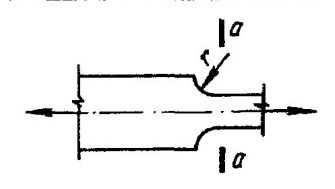
ветвями как Мх b = Nb ex (см. рисунок 12); если момент Мх действует в плоскости одной из ветвей, то следует считать его полностью передающимся на эту ветвь. При расчёте по формуле (109) гибкость отдельной ветви следует определять с учётом требований 10.3.10, а при расчёте по формуле (111) -по максимальному расстоянию между узлами решётки.
9 .3.7 Расчёт соединительных планок или решёток сквозных внецентренно сжатых (сжато -изгибаемых) стержней следует выполнять согласно 7.2.8 и 7.2.9 на поперечную силу, равную бóльшему из двух значений: фактической поперечной силе Q , определённой при расчете стержня как элемента безраскосной фермы, или условной поперечной силе Qfic , вычисляемой согласно требованиям 7.2.7.
В случае, когда фактическая поперечная сила больше условной, следует соединять ветви сквозных внецентренно сжатых элементов решетками.
9 .4 Проверка устойчивости стенок и поясов
9 .4.1 Расчётные размеры проверяемых на устойчивость стенок и поясных листов (полок) следует принимать согласно 7.3.1 и 7.3.7.
9 .4.2 Устойчивость стенок внецентренно сжатых (сжато -изгибаемых) элементов следует считать обеспеченной, если условная гибкость стенки 𝜆𝜆 ̅ 𝑤𝑤 = ( h𝑒𝑒𝑓𝑓 / 𝑡𝑡 𝑤𝑤 ) �𝑅𝑅𝑦𝑦 / 𝐸𝐸 не превышает значений предельной условной гибкости 𝜆𝜆 ̅ 𝑢𝑢𝑤𝑤 , определяемых по формулам таблицы 22.
Таблица 22
| Тип c ече - ния | Схема сечения и эксцентриситет | Условия применения формул | Условия применения формул | Предельная условная гибкость стенки 𝜆𝜆 𝑢𝑢𝑤𝑤 | Предельная условная гибкость стенки 𝜆𝜆 𝑢𝑢𝑤𝑤 |
|---|---|---|---|---|---|
| 1 | y y y x x e x | 1 ≤ m x ≤ 10; для двутавра с ϕ у > ϕ e | 𝜆𝜆 𝑚𝑚 < 2 𝜆𝜆 𝑚𝑚 ≥ 2 | 𝜆𝜆 𝑢𝑢𝑤𝑤 = 𝜆𝜆 𝑢𝑢𝑤𝑤1 =1,3 + 0,15 𝜆𝜆 𝑚𝑚 2 𝜆𝜆 𝑢𝑢𝑤𝑤 = 𝜆𝜆 𝑢𝑢𝑤𝑤1 =1,2 + 0,35 𝜆𝜆 𝑚𝑚 ≤ 3,1 | (125) (126) |
| 2 | e x x x y | с ϕ у ≤ ϕ e ; 1 ≤ α ≤ 2; | 𝜆𝜆 𝑢𝑢𝑤𝑤 = 𝜆𝜆 𝑢𝑢𝑤𝑤2 = 1,42 ∙ � 𝑐𝑐 𝑐𝑐𝑟𝑟 𝑅𝑅 𝑦𝑦 𝛾𝛾 𝑐𝑐 𝜎𝜎 1 (2 -𝛼𝛼 + �𝛼𝛼 2 +4 𝛽𝛽 2 ) ≤ 0,7 +2,4 𝛼𝛼 | (127) | |
| 3 | e x y x x | 1 ≤ α ≤ 2; | 𝜆𝜆 𝑢𝑢𝑤𝑤 = 0,75 𝜆𝜆 𝑢𝑢𝑤𝑤2 ≤ 0,52 + 1,8 α | (128) |
Обозначения, принятые в таблице 22 :
| 4 | e x y x x | 1 ≤ b f / h ef ≤ 2; 0,8 ≤ 𝜆𝜆 𝑚𝑚 ≤ 4 | 𝜆𝜆 𝑢𝑢𝑤𝑤 = (0,4+0,07 𝜆𝜆 𝑚𝑚 )(1+0,25 � 2 -𝑏𝑏 𝑓𝑓 / h 𝑒𝑒𝑓𝑓 ) | (129) |
|---|---|---|---|---|
| 5 | m y ≥ 1 | 𝜆𝜆 𝑢𝑢𝑤𝑤 = 2 �𝜑𝜑𝑅𝑅 𝑦𝑦 𝛾𝛾 𝑐𝑐 / 𝑁𝑁 ≤ 5,5 | (130) |
- условная гибкость стержня в плоскости действия момента;
- сс r -коэффициент, определяемый по таблице 17 в зависимости от α ; 𝜆𝜆 ̅ 𝑚𝑚
- α = ( σ 1 -σ 2) / σ 1 (здесь σ 1 -наибольшее сжимающее напряжение у расчётной границы стенки, принимаемое со знаком "плюс" и вычисленное без учёта коэффициентов ϕ e , с ϕ у и ϕ exy ; σ 2 -соответствующее напряжение у противоположной расчётной границы стенки); β = 0,15 сс r τ / σ 1 (здесь τ = Q / ( tw hw ) -среднее касательное напряжение в рассматриваемом сечении; для коробчатого сечения τ = Q / (2 tw hw ); bf -ширина полки тавра.
Примечания
- 1 Для сечений типа 1 при значениях 0 < mx < 1 или 10 < mx ≤ 20 значения 𝜆𝜆 ̅ 𝑢𝑢𝑤𝑤 следует определять линейной интерполяцией между значениями 𝜆𝜆 ̅ 𝑢𝑢𝑤𝑤 , вычисленными согласно 7.3.2 ( mx = 0) или 8.5.1 ( mx = 20) и по формуле (125) или (126), соответственно.
- 2 Для сечения типа 2 при α ≤ 0,5 значение 𝜆𝜆 ̅ 𝑢𝑢𝑤𝑤 следует определять дважды: согласно 7.3.2 и с использованием формул (125), (126); при 0,5 < α < 1 -линейной интерполяцией между значениями 𝜆𝜆 ̅ 𝑢𝑢𝑤𝑤 , вычисленными при α = 0,5 и α = 1.
- 3 Для сечения типа 4 при 𝜆𝜆 ̅ 𝑚𝑚 < 0,8 или 𝜆𝜆 ̅ 𝑚𝑚 > 4 в формуле (129) следует принимать 𝜆𝜆 ̅ 𝑚𝑚 = 0,8 или 𝜆𝜆 ̅ 𝑚𝑚 = 4, соответственно.
- 4 Для сечений типа 5 при значениях 0 < my < 1 значения 𝜆𝜆 ̅ 𝑢𝑢𝑤𝑤 следует определять линейной интерполяцией между значениями 𝜆𝜆 ̅ 𝑢𝑢𝑤𝑤 , вычисленными согласно 7.3.2 ( my = 0), и по формуле (130).
При выполнении условия N / ( ϕ e A Ry γ c ) < 0,8 значение 𝜆𝜆 ̅ 𝑢𝑢𝑤𝑤 следует принимать равным 𝜆𝜆 ̅ 𝑢𝑢𝑤𝑤2 . где 𝜆𝜆 ̅ 𝑢𝑢𝑤𝑤1 и 𝜆𝜆 ̅ 𝑢𝑢𝑤𝑤2 -значения 𝜆𝜆 ̅ 𝑢𝑢𝑤𝑤 , вычисленные по формулам (125), (126) и (127).
- 9 .4.7 Устойчивость поясов (полок) внецентренно сжатых (сжато -изгибаемых) стержней с гибкостью 0,8 ≤ 𝜆𝜆 ̅ 𝑚𝑚 ( 𝜆𝜆 ̅ 𝑦𝑦 ) ≤ 4 следует считать обеспеченной, если условная гибкость свеса пояса (полки) 𝜆𝜆 ̅ 𝑓𝑓 = ( bef / t f ) �𝑅𝑅𝑦𝑦 / 𝐸𝐸 или поясного листа 𝜆𝜆 ̅ 𝑓𝑓1 = ( bef ,1
/ t f ) �𝑅𝑅𝑦𝑦 / 𝐸𝐸 не превышает значений предельной условной гибкости 𝜆𝜆 ̅ 𝑢𝑢𝑓𝑓 ( 𝜆𝜆 ̅ 𝑢𝑢𝑓𝑓 , 1 ), определяемых по формулам таблице 23.
Таблица 23
| Тип сече - ния | Схема сечения и эксцентриситет | Условие применения формул | Предельная условная гибкость свеса пояса 𝜆𝜆 𝑢𝑢𝑓𝑓 или поясного листа 𝜆𝜆 𝑢𝑢𝑓𝑓 , 1 при гибкости стержня 0,8 ≤ 𝜆𝜆 𝑚𝑚 ( 𝜆𝜆 𝑦𝑦 ) ≤ 4 | |
|---|---|---|---|---|
| 1 | e x b ef e x ef y y x x x y y ef | 0 ≤ m x ≤ 5 | 𝜆𝜆 𝑢𝑢𝑓𝑓 = 𝜆𝜆 𝑢𝑢𝑓𝑓𝑐𝑐 - 0,01(1,5+ 0,7 x λ ) m x | (132) |
| 2 | e x x x y y | 0 ≤ m x ≤ 5 | 𝜆𝜆 𝑢𝑢𝑓𝑓 , 1 = 𝜆𝜆 𝑢𝑢𝑓𝑓𝑐𝑐 - 0,01(5,3+ 1,3 x λ ) m x | (133) |
| 3 | e x x x y | _ | 𝜆𝜆 𝑢𝑢𝑓𝑓 = 0,36 + 0,10 𝜆𝜆 𝑚𝑚 | (134) |
| 4 | e e y y y x x x y | 𝜆𝜆 𝑢𝑢𝑓𝑓 = 0,36 + 0,10 𝜆𝜆 𝑦𝑦 | (135) |
Обозначение, принятое в таблице 23 : 𝜆𝜆 ̅ 𝑢𝑢𝑓𝑓𝑐𝑐 -предельное значение условной гибкости свеса пояса или поясного листа центрально сжатого элемента, определяемое согласно требованиям 7.3.8 и 7.3.9.
Примечания
1 При 5 < mx ≤ 20 значения 𝜆𝜆 ̅ 𝑢𝑢𝑓𝑓 ( 𝜆𝜆 ̅ 𝑢𝑢𝑓𝑓 , 1 ) следует определять линейной интерполяцией между значениями 𝜆𝜆 ̅ 𝑢𝑢𝑓𝑓 ( 𝜆𝜆 ̅ 𝑢𝑢𝑓𝑓 , 1 ), вычисленными по формулам настоящей таблицы, и согласно 8.5.18 и 8.5.19 (при m = 20) соответственно.
- 2 При гибкости стержня 𝜆𝜆 ̅ 𝑚𝑚 ( 𝜆𝜆 ̅ 𝑦𝑦 ) < 0,8 или 𝜆𝜆 ̅ 𝑚𝑚 ( 𝜆𝜆 ̅ 𝑦𝑦 ) > 4 следует принимать 0,8 и 4 соответственно.
Размеры отгиба следует определять согласно 7.3.10.
10Расчетные длины и предельные гибкости элементов стальных конструкций
10 .1 Расчетные длины элементов плоских ферм и связей
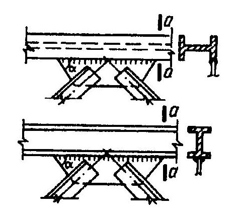
а) -треугольная со стойками; б) -раскосная; в) -треугольная со шпренгелями; г) -полураскосная треугольная; д) -перекрестная
Рисунок 13 -Схемы для определения расчетных длин сжатых элементов (обозначения приведены в таблице 24) решеток ферм
где α -отношение усилия, соседнего с максимальным, к максимальному усилию в панелях фермы; при этом 1 ≥ α ≥ -0,55; из плоскости пояса фермы
где β -отношение суммы усилий на всех участках (рассматриваемой длины между точками закрепления пояса из плоскости), кроме максимального, к максимальному усилию; при этом ( к -1) ≥ β ≥ -0,5. При вычислении параметра β в формуле (137) растягивающие усилия в стержнях необходимо принимать со знаком «минус».
Таблица 24
| Расчетные длины l ef и l ef ,1 | Расчетные длины l ef и l ef ,1 | Расчетные длины l ef и l ef ,1 | |
|---|---|---|---|
| Направление продольного изгиба элемента фермы | поясов | опорных раскосов и опорных стоек | прочих элементов решетки |
| 1 В плоскости фермы l ef : а) для ферм, кроме указанных в позиции 1,б б) для ферм из одиночных уголков и ферм с | l | l | 0,8 l |
| прикреплением элементов решетки к поясам впритык 2 В направлении, перпендикулярном к плоскости фермы (из плоскости фермы) l ef ,1 : | l | l | 0,9 l |
| СП 16.13330.2017 | СП 16.13330.2017 | СП 16.13330.2017 | |
|---|---|---|---|
| а) для ферм, кроме указанных в позиции 2,б | l 1 | l 1 | l 1 |
| б) для ферм с прикреплением элементов решётки к поясам впритык | l 1 | l 1 | 0,9 l 1 |
| 3 Влюбомнаправлении l ef = l ef ,1 для ферм из одиночных уголков при одинаковых расстояниях между точками закрепления элементов в плоскости и из плоскости фермы | 0,85 l | l | 0,85 l |
| Обозначения, принятые в таблице 24 (см. рисунок 13): l - геометрическая длина элемента (расстояние между центрами ближайших узлов) в плоскости фермы; l 1 - расстояние между узлами, закреплёнными от смещения из плоскости фермы (поясами ферм, специальными связями, жёсткими плитами покрытий, прикреплёнными к поясу сварными швами или болтами, и т.п.). | Обозначения, принятые в таблице 24 (см. рисунок 13): l - геометрическая длина элемента (расстояние между центрами ближайших узлов) в плоскости фермы; l 1 - расстояние между узлами, закреплёнными от смещения из плоскости фермы (поясами ферм, специальными связями, жёсткими плитами покрытий, прикреплёнными к поясу сварными швами или болтами, и т.п.). | Обозначения, принятые в таблице 24 (см. рисунок 13): l - геометрическая длина элемента (расстояние между центрами ближайших узлов) в плоскости фермы; l 1 - расстояние между узлами, закреплёнными от смещения из плоскости фермы (поясами ферм, специальными связями, жёсткими плитами покрытий, прикреплёнными к поясу сварными швами или болтами, и т.п.). | Обозначения, принятые в таблице 24 (см. рисунок 13): l - геометрическая длина элемента (расстояние между центрами ближайших узлов) в плоскости фермы; l 1 - расстояние между узлами, закреплёнными от смещения из плоскости фермы (поясами ферм, специальными связями, жёсткими плитами покрытий, прикреплёнными к поясу сварными швами или болтами, и т.п.). |
Расчётные длины l ef и l ef , 1 ветви сквозной колонны постоянного сечения (неразрезного стержня) с различными сжимающими усилиями на участках (число участков равной длины к ≥ 2) с граничными условиями, когда один конец стержня (нижний) жестко закреплен, а другой -шарнирно оперт в плоскости решетки при шарнирном креплении к нему элементов решетки (рисунок 14, б), следует определять по формулам: в плоскости ветви
где α -отношение усилия, соседнего с максимальным, к максимальному усилию в месте заделки; при этом 1 ≥ α ≥ 0; из плоскости ветви
где β -отношение суммы усилий на всех участках, кроме максимального, к максимальному усилию в месте заделки; при этом ( к -1) ≥ β ≥ 0.
В обоих случаях l -длина участка (см. рисунки 13 и 14); l1 -расстояние между точками связей из плоскости стержня (см. рисунок 14), и расчёт на устойчивость следует выполнять на максимальное усилие.
Рисунок 14 -Схемы для определения расчетной длины элементов
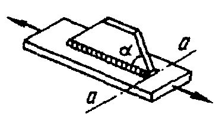
СП 16.13330.2017
Таблица 25
| Конструкция узла пересечения элементов решётки | Расчетная длина l ef ,1 из плоскости фермы (связи) при поддерживающем элементе | Расчетная длина l ef ,1 из плоскости фермы (связи) при поддерживающем элементе | Расчетная длина l ef ,1 из плоскости фермы (связи) при поддерживающем элементе |
|---|---|---|---|
| растянутом | неработающем | сжатом | |
| Оба элемента не прерываются | l | 0,7 l 1 | l 1 |
| Поддерживающий элемент прерывается и перекрывается фасонкой: рассматриваемый элемент не прерывается рассматриваемый элемент прерывается и перекрывается фасонкой | 0,7 l 1 0,7 l | l 1 | 1,4 l 1 |
| 1 | - | - |
Обозначения, принятые в таблице 25 (см. рисунок 13, д): l -расстояние от центра узла фермы (связи) до точки пересечения элементов; l 1 -полная геометрическая длина элемента.
- в остальных случаях -относительно оси уголка, перпендикулярной или параллельной плоскости фермы ( i = i x или i = i y ), в зависимости от направления продольного изгиба.
10 .2 Расчётные длины элементов пространственных решётчатых конструкций, в том числе, структурных
Таблица 26
| Элементы структурных конструкций | Расчётная длина l ef |
|---|---|
| 1 Кроме указанных в позициях 2 и 3 | l |
| 2 Неразрезные (не прерывающиеся в узлах) пояса, а также элементы поясов и решёток, прикрепляемых в узлах сваркой впритык к шаро - вым или цилиндрическим узловым элементам | 0,85 l |
| 3 Из одиночных уголков, прикрепляемых в узлах одной полкой: а) сварными швами или болтами (не менее двух), расположенными вдоль элемента, при l / i min : до 90 | l |
| св. 90 до 120 | 0,90 l |
| св. 120 до 150 (только для элементов решётки) | 0,75 l |
| св. 150 до 200 (только для элементов решётки) | 0,70 l |
| б) одним болтом при l / i min : до 90 | l |
| св. 90 до 120 | 0,95 l |
| св. 120 до 150 (только для элементов решётки) | 0,85 l |
| св. 150 до 200 (только для элементов решётки) | 0,80 l |
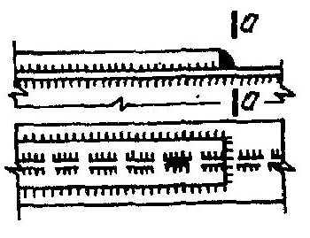
а), б), в) -с совмещенными в смежных гранях узлами; г), д) -с не совмещенными в смежных гранях узлами; е) -с частично совмещенными в смежных гранях узлами
Рисунок 15 -Схемы пространственных решетчатых конструкций
Таблица 27
| Элементы пространственных конструкций | Сжатые и ненагруженные элементы | Сжатые и ненагруженные элементы | Растянутые элементы | Растянутые элементы |
|---|---|---|---|---|
| l ef | i | l ef | i | |
| Пояса: | ||||
| по рисунку 15,а),б),в) | l m 0,73 l m 0,64 l m | i min i min i min | l m 0,73 l m 0,64 l m | i min i min i min |
| по рисунку 15,г),д) | ||||
| по рисунку 15,е) | ||||
| Раскосы: | ||||
| по рисунку 15,а),д) | µ d l dc | i min | l d ( l d1 ) | i min ( i х ) |
| по рисунку 15,б),в),г),е) | µ d l d | i min | l d | i min |
| Распорки: | ||||
| по рисунку 15,б),е) | 0,80 l c | i min | - | - |
| по рисунку 15,в) | 0,73 l c | i min |
Обозначения, принятые в таблице 27 (рисунок 15): ldc -условная длина, принимаемая по таблице 28; µ d -коэффициент расчётной длины раскоса, принимаемый по таблице 29.
Примечания
1 Раскосы по рисунку 15, а), д) в точках пересечения должны быть скреплены между собой.
2 Значение l еf для распорок по рисунку 15, в) приведено для равнополочных уголков.
3 В скобках приведены значения l еf и i для раскосов из плоскости грани конструкции.
Таблица 28
| Конструкция узла пересечения | Условная длина раскоса l dc при поддерживающем элементе | Условная длина раскоса l dc при поддерживающем элементе | Условная длина раскоса l dc при поддерживающем элементе |
|---|---|---|---|
| элементов решетки | растянутом | неработающем | сжатом |
| Оба стержня не прерываются | l d | 1,3 l d | 0,8 l d 1 |
| элемент не прерывается: в конструкциях по рисунку 15, а) в конструкциях по рисунку 15, д) Узел пересечения элементов закреплен от | 1,3 l d (1,75 - 0,15 n ) l d | 1,6 l d (1,9 - 0,1 n ) l d l d | l d1 l d1 l d |
| смещения из плоскости грани (диафрагмой и т.п.) | l d |
Обозначение, принятое в таблице 28 (рисунок 15):
где I m, min и I d, min -наименьшие моменты инерции сечения пояса и раскоса соответственно.
Примечание -При n < 1 и n > 3 в формулах таблицы следует принимать n = 1 и n = 3 соответственно.
Таблица 29
| Прикрепление раскоса | Значение | Значение µ d при l / i min , равном | Значение µ d при l / i min , равном | Значение µ d при l / i min , равном |
|---|---|---|---|---|
| к поясам | n | до 60 | св. 60 до 160 | св. 160 |
| Сварными швами, болтами (не | До 2 | 1,14 | 0,54+36 i min / l | 0,765 |
| менее двух), расположенными | Свыше 6 | 1,04 | 0,54+28,8 i min / l | 0,740 |
| Одним болтом без фасонки | При любых значениях | 1,12 | 0,64+28,8 i min / l | 0,820 |
Обозначения, принятые в таблице 29: n -по таблице 28; l -длина, принимаемая равной: ld -для раскосов по рисунку 15,б),в),г),е); ldc по таблице 28 -для раскосов по рисунку 15, а), д).
Примечания
- 1 Значение µ d при 2 ≤ n ≤ 6 следует определять линейной интерполяцией.
2 При прикреплении одного конца раскоса к поясу без фасонок сваркой или болтами, а второго конца
- через фасонку коэффициент расчетной длины раскоса следует принимать равным 0,5(1 + µ d ); при прикреплении обоих концов раскосов через фасонки -µ d = 1,0.
10.3Расчётные длины колонн (стоек)
где l -длина колонны, отдельного участка ее или высота этажа; µ -коэффициент расчётной длины.
Значения коэффициентов расчетной длины µ для колонн постоянного сечения и отдельных участков ступенчатых колонн при любых сочетаниях нагрузок принимаются как для колонн постоянного сечения и отдельных участков ступенчатых колонн в рассчитываемой конструкции при сочетании нагрузок, дающем наибольшие значения продольных сил.
При этом необходимо различать несвободные (раскрепленные) рамы, у которых узлы крепления ригелей к колоннам не имеют свободы перемещения в направлении, перпендикулярном к оси колонны в плоскости рамы, и свободные (нераскрепленные) рамы, у которых такие перемещения возможны (см. рисунок 1).
Таблица 30
| Схема закрепления колонны (стойки) и вид нагрузки | N | N | N | N | N | N | N max | max N |
|---|---|---|---|---|---|---|---|---|
| µ | 1,0 | 0,7 | 0,5 | 2,0 | 1,0 | 2,0 | 0,725 | 1,12 |
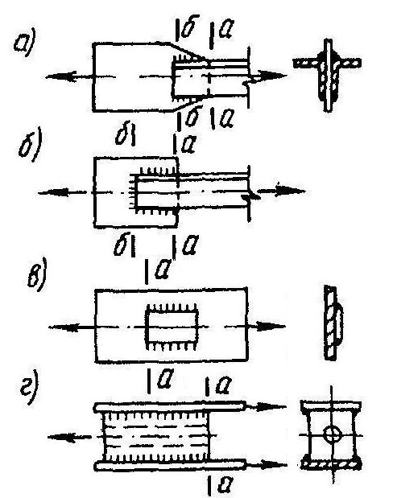
Коэффициенты расчетной длины колонн (стоек) постоянного сечения с упругим закреплением концов следует определять по формулам, приведенным в своде правил по проетированию стальных конструкций.
Таблица 31
| Параметры | Параметры | Коэффициент расчетной длины | |
|---|---|---|---|
| Схема рамы | p | n | |
| С в о б д н p = | о 0 | ы е р а м ы l I l I c c s | n 0,38 1 2 + = µ (141) |
| p = ∞ | k ≥ 2 l I l I c c s | 0,14 0,56 + + = n n µ (142) | |
| k Верхний ( ) 1 2 1 + + k p p k ( 2 k n k Средний ( ) 1 2 1 + + k p p k ( k n k | ≥ 2 этаж | ) 2 1 + n | При n ≤ 0,2 ( ) ( )( ) n n p p n p 0,1 0,08 9 0, 0,68 0,22 0,68 + + + + + = µ ; (143) при n > 0,2 |
| 1 + этаж ) 1 2 1 + + n |
СП 16.13330.2017
где µ -коэффициент расчетной длины проверяемой колонны, вычисленный по формулам (141) и (142);
Ic , Nc -момент инерции сечения и усилие в наиболее нагруженной колонне рассматриваемой рамы, соответственно;
Σ Ni , Σ Ii -сумма расчетных усилий и моментов инерции сечений всех колонн рассматриваемой рамы и четырех соседних рам (по две с каждой стороны) соответственно; все усилия следует определять при том же сочетании нагрузок, которое вызывает усилие N с в проверяемой колонне.
При определении коэффициентов расчётной длины µ для ступенчатых колонн рам одноэтажных производственных зданий не учитывается влияние степени загружения и жесткости соседних колонн; для многопролетных рам (с числом пролетов два и более) при наличии жесткого диска покрытия или продольных связей, связывающих поверху все колонны и обеспечивающих пространственную работу сооружения, расчетные длины колонн следует определять как для стоек, неподвижно закрепленных на уровне ригелей.
Здесь обозначено: β
= 1
М
1 /
М
≤
0,2; m
=
M
A
/ (
N
Wc
); 𝜆𝜆 ̅ -условная гибкость колонны, вычисленная с учётом требований 7.3.2 и 7.3.3.
Расчётные значения продольной силы Ν и изгибающего момента Μ в рассчитываемой свободной раме следует определять согласно 9 .2.3.
Значение изгибающего момента М 1 следует определять для того же сочетания нагрузок в том же сечении колонны, где действует момент М , рассматривая раму в данном расчётном случае как несвободную.
10.4Предельные гибкости элементов
Таблица 32
| Элементы конструкций | Предельная гибкость сжатых элементов λ u |
|---|---|
| 1 Пояса, опорные раскосы и стойки, передающие опорные реакции: а) плоских ферм, структурных конструкций и пространственных конструкций из труб или парных уголков высотой до 50 м б) пространственных конструкций из одиночных уголков, а также пространственных конструкций из труб и парных уголков высотой св. 50 м | 180 - 60 α 120 |
| 2 Элементы, кроме указанных в позициях 1 и 7: а) плоских ферм, сварных пространственных и структурных конструкций из одиночных уголков, пространственных и структурных конструкций из труб и парных уголков | 210 - 60 α |
| б) пространственных и структурных конструкций из одиночных уголков с болтовыми соединениями | 220 - 40 α |
| 3 Верхние пояса ферм, не закрепленные в процессе монтажа (предельную гибкость после завершения монтажа следует принимать по позиции 1) | 220 |
| 4 Основные колонны | 180 - 60 α |
| 5 Второстепенные колонны (стойки фахверка, фонарей и т.п.), элементы решетки колонн, элементы вертикальных связей между колоннами (ниже балок крановых путей) | 210 - 60 α |
| 6 Элементы связей, кроме указанных в позиции 5, а также стержни, служащие для уменьшения расчётной длины сжатых стержней, и другие ненагруженные элементы, кроме указанных в позиции 7 | 200 |
| 7 Сжатые и ненагруженные элементы пространственных конструкций таврового и крестового сечений, подверженные воздействию ветровых нагрузок, при проверке гибкости в вертикальной плоскости | 150 |
| Обозначение, принятое в таблице 32: α = 𝑁𝑁 𝜑𝜑𝜑𝜑𝑅𝑅 𝑦𝑦 𝛾𝛾 𝑐𝑐 - коэффициент, принимаемый не менее 0,5 (в соответствующих случаях вместо ϕ | следует |
Таблица 33
| Предельная гибкость растянутых элементов λ u при воздействии на конструкцию нагрузок | Предельная гибкость растянутых элементов λ u при воздействии на конструкцию нагрузок | Предельная гибкость растянутых элементов λ u при воздействии на конструкцию нагрузок | |
|---|---|---|---|
| Элементы конструкций | динамических, приложенных непосредственно к конструкции | статических | от кранов (см. прим. 4) и железнодорожных составов |
| 1 Пояса и опорные раскосы плоских ферм (включая тормозные фермы) и |
| структурных конструкций | 250 | 400 | 250 |
|---|---|---|---|
| 2 Элементы ферм и структурных конструкций, кроме указанных в позиции 1 | 350 | 400 | 300 |
| 3 Нижние пояса балок и ферм крановых путей | - | - | 150 |
| 4 Элементы вертикальных связей между колоннами (ниже балок крановых путей) | 300 | 300 | 200 |
| 5 Прочие элементы связей | 400 | 400 | 300 |
| 6 Пояса и опорные раскосы стоек и траверс, тяги траверс опор линий электропередачи, откры - тых распределительных устройств и контактных сетей транспорта | 250 | - | - |
| 7 Элементы опор линий электро - передачи, открытых распредели - тельных устройств и контактных сетей транспорта, кроме указан - ных в позициях 6 и 8 | 350 | - | - |
| 8 Элементы пространственных конструкций таврового и кресто - вого сечений (а в тягах траверс опор линий электропередачи и из одиночных уголков), подвер - женных воздействию ветровых нагрузок, при проверке гибкости в вертикальной плоскости | 150 | - | - |
| Примечания 1 В конструкциях, не подвергающихся динамическим воздействиям, гибкость растянутых элементов | Примечания 1 В конструкциях, не подвергающихся динамическим воздействиям, гибкость растянутых элементов | Примечания 1 В конструкциях, не подвергающихся динамическим воздействиям, гибкость растянутых элементов | Примечания 1 В конструкциях, не подвергающихся динамическим воздействиям, гибкость растянутых элементов |
11Расчет листовых конструкций
11.1Расчет на прочность
где σ х и σ у -нормальные напряжения по двум взаимно перпендикулярным направлениям; γ с -коэффициент условий работы конструкций, назначаемый в соответствии с требованиями СП 4 3.13330.
При этом абсолютные значения главных напряжений должны быть не более
СП 16.13330.2017 значений расчётных сопротивлений, умноженных на γ с .
где σ 1 и σ 2 -соответственно меридиональное и кольцевое напряжения;
F -проекция на ось z -z оболочки полного расчётного давления, действующего на часть оболочки а b с (см. рисунок 16); r и β -радиус и угол, показанные на рисунке 16; t -толщина оболочки; p -расчётное давление на поверхность оболочки;
- r 1, r 2 -радиусы кривизны в главных направлениях срединной поверхности оболочки.
Рисунок 16 -Схема оболочки вращения
для цилиндрических оболочек
для сферических оболочек
для конических оболочек
где р -расчётное внутреннее давление на единицу поверхности оболочки; r -радиус срединной поверхности оболочки (рисунок 17); β -угол между образующей конуса и его осью z -z (см. рисунок 17).
Рисунок 17 -Схема конической оболочки вращения
11 .2 Расчёт на устойчивость
где σ 1 -расчётное напряжение в оболочке; σ с r ,1 -критическое напряжение, равное меньшему из значений ψ R у или сЕ t / r (здесь r -радиус срединной поверхности оболочки; t -толщина оболочки) при r / t ≤ 300; при r / t > 300 σ cr ,1 = сЕ t / r .
Значения коэффициентов ψ при 0 < r / t ≤ 300 следует определять по формуле ψ = 0,97 -(0,00025 + 0,95 Ry / E ) r / t . (155)
Значения коэффициента с следует определять по таблице 34.
Таблица 34
| r / t | 100 | 200 | 300 | 400 | 600 | 800 | 1000 | 1500 | 2500 |
|---|---|---|---|---|---|---|---|---|---|
| с | 0,22 | 0,18 | 0,16 | 0,14 | 0,11 | 0,09 | 0,08 | 0,07 | 0,06 |
В случае внецентренного сжатия параллельно образующим или чистого изгиба в диаметральной плоскости при касательных напряжениях в месте наибольшего момента, не превышающих значения 0,07 Е ( t / r ) 3/2 , напряжение σ cr ,1 должно быть увеличено в (1,1 -0,1 σ ' 1 / σ 1) раза, где σ ' 1 -наименьшее напряжение (растягивающие напряжения считать отрицательными).
Такие трубы следует рассчитывать на устойчивость в соответствии с требованиями разделов 7 и 9 независимо от расчета на устойчивость стенок. Расчёт на устойчивость стенок бесшовных или электросварных труб не требуется, если значения r / t не превышают половины значений, определяемых по формуле (156).
при расчётном напряжении σ = Ry
При 0,8 Ry < σ < Ry наибольшее отношение b / t следует определять линейной интерполяцией.
Если b 2 / ( r t ) > 20, то панель следует рассчитывать на устойчивость как оболочку согласно требованиям 11.2.1.
где σ 2 = pr / t -расчётное кольцевое напряжение в оболочке; σ cr ,2 -критическое напряжение, определяемое по формулам: при 0,5 ≤ l / r ≤ 10 при l / r ≥ 20
при 10 < l / r < 20 напряжение σ cr ,2 следует определять линейной интерполяцией.
Здесь l -длина цилиндрической оболочки.
Та же оболочка, но укрепленная кольцевыми рёбрами, расположенными с шагом s ≥ 0,5 r между осями, должна быть рассчитана на устойчивость по формулам (159) -(161) с подстановкой в них значения s вместо l .
В этом случае должно быть удовлетворено условие устойчивости ребра в своей плоскости как сжатого стержня согласно требованиям 7.1.3 при N = prs и расчётной длине стержня l ef = 1,8 r ; при этом в сечение ребра следует включать участки оболочки шириной 65 t �𝐸𝐸 / 𝑅𝑅 𝑦𝑦 с каждой стороны от оси ребра, а условная гибкость стержня λ = λ �𝑅𝑅𝑦𝑦 / 𝐸𝐸 не должна превышать 6,5.
При одностороннем ребре жесткости его момент инерции следует вычислять относительно оси, совпадающей с ближайшей поверхностью оболочки.
(
где σ cr ,1 должно быть вычислено согласно требованиям 11.2.1 и σ cr ,2 -согласно требованиям 11.2.4.
где Ncr -критическая сила, определяемая по формуле
здесь t -толщина оболочки; σ cr ,1 -значение напряжения, вычисленное согласно требованиям 11.2.1 с заменой радиуса r радиусом rm , равным
Рисунок 1 8 -Схема конической оболочки вращения под действием продольного усилия сжатия
здесь σ 2 = р rm / t -расчётное кольцевое напряжение в оболочке; σ cr ,2 -критическое напряжение, определяемое по формуле
где rm -радиус, определяемый по формуле (165); h -высота конической оболочки (между основаниями).
(
где значения Ncr и σ cr ,2 следует вычислять по формулам (164) и (167).
где σ = р r / (2 t ) -расчётное напряжение; σ cr = 0,1 Et / r -критическое напряжение, принимаемое равным не более Ry , здесь r -радиус срединной поверхности сферы.
12Расчет элементов стальных конструкций на усталость
12.1Общие положения расчета
Количество циклов нагружений следует принимать по технологическим требованиям эксплуатации.
Расчёт конструкций на усталость следует производить на действие нагрузок, устанавливаемых согласно СП 20.13330.
Расчёт на усталость также следует выполнять для конструкций высоких сооружений (типа мачт, башен и т.п.), которые подвергаются воздействиям резонансного вихревого возбуждения согласно СП 20.13330.
где σ max -наибольшее по абсолютному значению напряжение в рассчитываемом сечении элемента, вычисленное по сечению нетто без учёта коэффициента динамичности и коэффициентов ϕ , ϕ b , ϕ е ;
Rv -расчётное сопротивление усталости, принимаемое по таблице 35 в зависимости от временного сопротивления стали Run и групп элементов и соединений конструкций, приведенных в таблице К.1 (приложение К); α -коэффициент, учитывающий число циклов нагружений n , при n ≥ 3,9 · 10 6 принимаемый равным α = 0,77; при n < 3,9 · 10 6 вычисляемый по формулам: для групп элементов 1 и 2
для групп элементов 3 -8
γ v -коэффициент, определяемый по таблице 36 в зависимости от напряженного состояния и коэффициента асимметрии напряжений ρ = σ min / σ max (здесь σ min -наименьшее по абсолютному значению напряжение в рассчитываемом сечении элемента, вычисляемое так же и при том же загружении, как и σ max ). При разнозначных напряжениях σ max и σ min значение коэффициента ρ следует принимать со знаком «минус».
При расчёте по формуле (170) должно быть выполнено условие α Rv γ v ≤ Ru / γ u .
Таблица 35
| Группа | Значение R v при нормативном значении временного сопротивления стали R un , Н/мм² | Значение R v при нормативном значении временного сопротивления стали R un , Н/мм² | Значение R v при нормативном значении временного сопротивления стали R un , Н/мм² | Значение R v при нормативном значении временного сопротивления стали R un , Н/мм² | Значение R v при нормативном значении временного сопротивления стали R un , Н/мм² |
|---|---|---|---|---|---|
| элементов | до 420 | св.420 до 440 | св.440 до 520 | св.520 до 580 | св.580 до 675 |
| 1 | 120 | 128 | 132 | 136 | 145 |
| 2 | 100 | 106 | 108 | 110 | 116 |
СП 16.13330.2017
| 3 | Для всех марок стали | 90 |
|---|---|---|
| 4 | То же | 75 |
| 5 | « | 60 |
| 6 | « | 45 |
| 7 | « | 36 |
| 8 | « | 27 |
Таблица 36
| Напряжённое состояние (для σ max ) | Коэффициент асимметрии напряжений ρ | Формулы для вычисления коэффициента γ v |
|---|---|---|
| Растяжение | - 1 ≤ ρ ≤ 0 | ρ - 5 , 1 5 2, ρ - 1,2 2,0 1,0 |
| Растяжение | 0 < ρ ≤ 0,8 | |
| Растяжение | 0,8 < ρ < 1 | |
| Растяжение | 0,8 < ρ < 1 | ρ - 1 |
| Сжатие | - 1 ≤ ρ < 1 | 2,0 |
| Сжатие | - 1 ≤ ρ < 1 | ρ - 1 |
12 .2 Расчёт балок крановых путей
Расчёт на усталость балок крановых путей следует выполнять согласно требованиям 12.1.1 и 12.1.2 на действие крановых нагрузок, определяемых согласно СП 20.13330 При этом следует принимать α = 0,77 при кранах групп режимов работы 7К (в цехах металлургических производств) и 8К и α = 1,1 -в остальных случаях. Расчёт на усталость верхней зоны стенок составных балок крановых путей в этих случаях следует выполнять по формуле
где Rv -расчётное сопротивление усталости, принимаемое для всех марок сталей, равным для балок со сварными и фрикционными поясными соединениями соответственно: для сжатой верхней зоны стенки (сечения в пролёте балки)
Rv = 75 Н/мм² и 96 Н/мм² ; для растянутой верхней зоны стенки (опорные сечения неразрезных балок)
Rv = 65 Н/мм² и 89 Н/мм² .
Значения напряжений в формуле (173) следует определять по формулам 8 .3.3.
13Проектирование стальных конструкций с учетом предотвращения хрупкого разрушения
Такой дефект обнаруживается при ультразвуковом контроле качества швов.
Возникновение слоистого разрушения существенно зависит от формы соединений и расположения сварных швов, от размера шва, толщины свариваемых элементов, степени жесткости соединения и технологии сварки.
где ψ z р -суммарный фактор риска, %; ψ z н -нормируемое, %, значение фактора риска для проката в соответствии с действующим стандартом; ψ z н =15, ψ z н =25, ψ z н =35 соответственно для групп качества проката Z 15, Z 25, Z 35. При этом прокат по 13.3 должен удовлетворять: для конструкций группы 1 (приложение В) -требованиям группы качества Z 35; для других конструкций группы 1 (приложение В), а также для фланцевых соединений и в случае, когда усилие нормально поверхности листа, -требованиям группы качества Z 25; в остальных случаях -Z 15.
Расчетное значение ψ z р следует определять по формуле
где ψ z ф -форма соединения и расположение сварных швов; ψ z т -толщина свариваемого проката; ψ z ш -катет шва; ψ z ж -степень жесткости соединения; ψ z с -влияние технологии сварки (суммарный фактор от числа проходов, последовательности наложения швов и подогрева).
Значения ψ z ф , ψ z т , ψ z ш , ψ z ж , ψ z с представлены в таблице 37.
Расчетное значение ψ z р может быть уменьшено на 50% в случае работы материала на статическое сжатие по толщине и увеличено на 10% -в случае действия по толщине динамических или вибрационных нагрузок.
Таблица 37
Форма соединения и расположение сварного шва, ψ z ф
Характеристики сварных соединений
Фактор риска, %
Соединение без напряжений в направлении
Z ψ z ф = - 25
0,1
S
S
Угловое соединение с симметрично расположенным швом ψ z ф = - 10
0,5
S
Соединение с промежуточным наплавленным слоем ψ z ф = - 5
Обычное тавровое соединение с угловыми швами ψ z ф = 0
Тавровое соединение с угловыми швами с полным или частичным проваром ψ z ф = + 3
Соединение с угловыми швами, расположенными вблизи свободного торца листа ψ z ф = + 5
Угловые соединения с полным проваром ψ z ф = + 8
| Толщина листа, S , мм, работающего в Z направлении, ψ z т | Толщина листа, S , мм, работающего в Z направлении, ψ z т | ψ z т = 0,2 S |
|---|---|---|
| Величина катета углового шва, а , мм, ψ z ш | Величина катета углового шва, а , мм, ψ z ш | Величина катета углового шва, а , мм, ψ z ш |
| S а | S а | ψ z ш =0,3 а |
| Степень жесткости соединения, ψ z ж | Степень жесткости соединения, ψ z ж | Степень жесткости соединения, ψ z ж |
| Низкая - возможна свободная усадка | Низкая - возможна свободная усадка | ψ z ж = 0 |
| Средняя - частично возможны усадка шва и деформация конструкции | Средняя - частично возможны усадка шва и деформация конструкции | ψ z ж = + 3 |
| Высокая - жесткое закрепление без усадки шва | Высокая - жесткое закрепление без усадки шва | ψ z ж = + 5 |
| Технология сварки, ψ z с | Технология сварки, ψ z с | Технология сварки, ψ z с |
| Число проходов | Один | ψ z с = 0 |
| Число проходов | Несколько | ψ z с = - 2 |
| Последовательность наложения швов | Попеременно с одной и с другой стороны соединения | ψ z с = - 2 |
| Последовательность наложения швов | Вначале с одной, затем с другой стороны соединения | ψ z с = 0 |
| Подогрев | Без подогрева | ψ z с = 0 |
| Подогрев | С подогревом | ψ z с = - 8 |
14Проектирование соединений стальных конструкций
14.1Сварные соединения
- 14.1.6, а также применять минимально необходимое число расчетных и конструктивных сварных швов; обеспечивать свободный доступ к местам выполнения сварных соединений с учётом выбранного вида и технологии сварки.
В монтажных условиях применяется односторонняя сварка с подваркой корня и сварка на остающейся стальной подкладке.
- 1 4 .1.7 Размеры сварных угловых швов и конструкция соединения должны удовлетворять следующим требованиям:
- а) катет углового шва kf не должен превышать 1,2 t , где t -наименьшая из толщин свариваемых элементов; катет шва, наложенного на закругленную кромку фасонного проката толщиной t , не должен превышать 0,9 t ; б) катет углового шва kf должен удовлетворять требованиям расчета и быть не меньше указанного в таблице 38; при обеспечении большей глубины провара в тавровом двустороннем, а также в нахлёсточном и угловом соединениях, при обеспечении мероприятий, гарантирующих отсутствие дефектов, в том числе технологических трещин, катет шва (от 5 мм и более) принимается меньше указанного в таблице 38, но не менее 4 мм;
Таблица 38
| Вид соединения | Вид сварки | Предел текучести стали, Н/мм² | Минимальный катет шва k f , мм, при толщине более толстого из свариваемых элементов t , мм | Минимальный катет шва k f , мм, при толщине более толстого из свариваемых элементов t , мм | Минимальный катет шва k f , мм, при толщине более толстого из свариваемых элементов t , мм | Минимальный катет шва k f , мм, при толщине более толстого из свариваемых элементов t , мм | Минимальный катет шва k f , мм, при толщине более толстого из свариваемых элементов t , мм | Минимальный катет шва k f , мм, при толщине более толстого из свариваемых элементов t , мм |
|---|---|---|---|---|---|---|---|---|
| Вид соединения | Вид сварки | Предел текучести стали, Н/мм² | 4-5 | 6 - 10 | 11 - 16 | 17 - 22 | 23 - 32 | 33 - 40 |
| Тавровое с двусторон - ними угловыми швами; нахлесточ - ное и угло - вое | Ручная дуговая | До 285 Св. 285 до 390 | 4 4 | 4 5 | 4 6 | 6 8 | 10 10 | 12 14 |
| Тавровое с двусторон - ними угловыми швами; нахлесточ - ное и угло - вое | Св. 390 до 590 | 5 | 6 | 7 | 8 | 10 | 14 | |
| Тавровое с двусторон - ними угловыми швами; нахлесточ - ное и угло - вое | Автомати - ческая и механизи - рованная | До 285 Св. 285 до 390 | 3 3 | 4 4 | 4 5 | 6 8 | 10 10 | 12 14 |
| Тавровое с двусторон - ними угловыми швами; нахлесточ - ное и угло - вое | Св. 390 до 590 | 4 | 5 | 6 | 8 | 10 | 14 | |
| Тавровое с двусторон - ними угловыми швами; нахлесточ - ное и угло - вое | Ручная дуговая | |||||||
| Тавровое с Односто - ронними угловыми швами | Автомати - ческая и механизи - | До 375 | 5 | 6 | 7 | 8 | 10 | 14 |
| Тавровое с Односто - ронними угловыми швами | рованная | До 375 | 4 | 5 | 6 | 10 | 10 | 18 |
Примечания
1 В конструкциях из стали с пределом текучести свыше 590 Н/мм² минимальный катет швов следует принимать по техническим условиям.
- 2 Для всех сталей при толщине элементов более 40 мм катет сварного шва следует принимать по расчету.
- в) расчетная длина углового шва должна быть не менее 4 kf и не менее 40 мм;
- г) расчетная длина флангового шва должна быть не более 85 β f kf , за исключением швов, в которых усилие действует на всем протяжении шва (здесь β f -коэффициент, принимаемый по таблице 39);
- д) размер нахлестки должен быть не менее пяти толщин наиболее тонкого из свариваемых элементов;
- е) соотношение размеров катетов угловых швов следует принимать 1:1; при разных толщинах свариваемых элементов принимают швы с неравными катетами; при этом катеты, примыкающие к более тонкому или более толстому элементу, должны удовлетворять требованиям перечисление а) или б) 14.1.7 соответственно;
- ж) угловые швы следует выполнять с плавным переходом к основному металлу в конструкциях, возводимых в районах с расчётными температурами ниже минус 45 °С, а также в случаях, когда плавный переход обеспечивает повышение расчётного сопротивления усталости сварных соединений.
Таблица 39
| Вид сварки при диаметре сварочной проволоки сплошного сечения | Положение шва | Коэф - фициент | Значение коэффициентов β f и β z при нормальных режимах сварки и катетах швов, мм | Значение коэффициентов β f и β z при нормальных режимах сварки и катетах швов, мм | Значение коэффициентов β f и β z при нормальных режимах сварки и катетах швов, мм | Значение коэффициентов β f и β z при нормальных режимах сварки и катетах швов, мм |
|---|---|---|---|---|---|---|
| d , мм | 3 -8 | 9- 12 | 14 - 16 | св. 16 | ||
| Автоматическая при d = 3 - 5 | В лодочку | β f | 1,1 | 1,1 | 1,1 | 0,7 |
| Автоматическая при d = 3 - 5 | β z | 1,15 | 1,15 | 1,15 | 1,0 | |
| Автоматическая при d = 3 - 5 | Нижнее | β f | 1,1 | 0,9 | 0,9 | 0,7 |
| Автоматическая при d = 3 - 5 | β z | 1,15 | 1,05 | 1,05 | 1,0 | |
| Автоматическая и механизированная при d = 1,4 - 2 | В лодочку | β f | 0,9 | 0,9 | 0,8 | 0,7 |
| Автоматическая и механизированная при d = 1,4 - 2 | В лодочку | β z | 1,05 | 1,05 | 1,0 | 1,0 |
| Автоматическая и механизированная при d = 1,4 - 2 | Нижнее, горизонтальное, вертикальное | β f | 0,9 | 0,8 | 0,7 | 0,7 |
| Автоматическая и механизированная при d = 1,4 - 2 | β z | 1,05 | 1,0 | 1,0 | 1,0 | |
| Ручная и механизированная при d < 1,4 или порошковой проволокой | В лодочку | β f | 0,7 | 0,7 | 0,7 | 0,7 |
| Ручная и механизированная при d < 1,4 или порошковой проволокой | Нижнее, горизонтальное, вертикальное, потолочное | β z | 1,0 | 1,0 | 1,0 | 1,0 |
Rwf > Rw z -при механизированной сварке;
1,1 Rw z ≤ Rwf ≤ Rw z β z / β f -при ручной сварке; для элементов из стали с пределом текучести свыше 285 Н/мм² следует применять электродные материалы, удовлетворяющие условию Rw z < Rwf < Rw z β z / β f (здесь β f и β z -коэффициенты, зависящие от технологии сварки и катета шва и определяемые по таблице 39).
1 4 .1.9 Односторонние угловые швы в тавровых соединениях элементов из стали с пределом текучести до 375 Н/мм² следует применять в конструкциях, эксплуатируемых в неагрессивной или слабоагрессивной среде (классификация по СП 2 8 .13330) в отапливаемых помещениях: для прикрепления промежуточных рёбер жёсткости и диафрагм -в конструкциях всех групп, кроме конструкций группы 1, рассчитываемых на усталость; для поясных швов сварных двутавров -в конструкциях групп 2 и 3 (кроме балок с условной гибкостью стенки f y w σ R λ / 6 > ) при толщине стенки tw в колоннах и стойках до 12 мм и в балках до 10 мм, при выполнении швов механизированной сваркой с катетом шва kf ≥ 0,8 tw / β f ; при этом следует учитывать требования 1 5 .3.3 и 1 5 .5.5; для всех конструктивных элементов -в конструкциях группы 4.
Катеты односторонних швов следует принимать по расчёту, но не менее указанных в таблице 38.
Односторонние угловые швы не следует применять в конструкциях зданий и сооружений класса КС -3 (ГОСТ 27751), возводимых в районах с сейсмичностью 8 баллов и выше, в районах с расчётной температурой ниже минус 45 о С, в конструкциях групп 1, 2, 3 в зданиях с кранами режимов работы 7К (в цехах металлургических производств) и 8К, а также в балках и ригелях рамных конструкций, рассчитываемых согласно требованиям 8 .2.3, 8 .2.6 и 8 .2.7.
1 4 .1.10 Прерывистые угловые сварные швы при статической нагрузке при избыточной несущей способности непрерывного шва минимального размера следует применять: для соединений в конструкциях группы 4; в реконструируемых конструкциях группы 3 во всех районах (кроме имеющих расчётную температуру ниже минус 45°С); эксплуатируемых в неагрессивных или слабоагрессивных средах.
Размеры сварного шва должны соответствовать требованиям 1 4 .1.7.
Расстояние s между участками сварных швов (рисунок 19 ) не должно превышать одного из значений: 200 мм, 12 tmin в сжатом элементе ( tmin -толщина самого тонкого из соединяемых элементов), 16 tmin в растянутом элементе. В конструкциях группы 4 расстояние s увеличивают на 50 %. а -в нахлесточном соединении; б -в тавровом соединении
Рисунок 19 -Схема прерывистых угловых сварных швов
При наложении прерывистого шва следует предусматривать шов по концам соединяемых частей элементов; длина lw 1 этого шва в элементах составного сечения из пластин должна быть не менее 0,75 b , где b -ширина более узкой из соединяемых пластин.
- 1 4 .1.11 Угловые сварные швы, расположенные по периметру отверстий или прорезей, следует применять в нахлёсточных соединениях в случаях, предусмотренных 1 4 .1.10, для передачи усилий в плоскости нахлёстки, предотвращения потери устойчивости элементов нахлёстки или конструктивных соединений элементов.
- 1 4 .1.12 Пробочные швы, заполняющие наплавленным металлом всю площадь круглых или щелевых отверстий, следует применять в нахлёсточных соединениях в случаях, предусмотренных 1 4 .1.10, только для предотвращения потери устойчивости элементов нахлёстки или для конструктивных соединений элементов.
Толщина пробочного шва должна быть: не менее толщины t просверлённого или прорезанного элемента, но не более 16 мм; не менее 0,1 длины прорези или значений 0,45 d или 0,45 b (где d и b -диаметр отверстия и ширина прорези, равные d ≥ t +8 мм и b ≥ t + 8 мм).
Расстояние между центрами отверстий или продольными осями прорезей должно быть не менее 4 d или 4 b .
1 4 .1.13 Комбинированные соединения, в которых часть сдвигающего усилия воспринимается фрикционным соединением, а часть -сварными швами, применяют при условии, что сварка выполнена после затяжки болтов на расчетное усилие и с последующей их дотяжкой при необходимости.
Распределение усилия между фрикционными и сварными соединениями следует принимать пропорционально их несущим способностям. Применение в комбинированных соединениях болтов без контролируемого натяжения, а также использование срезных соединений, не допускается.
- 1 4 .1.14 Расчёт сварных стыковых соединений при действии осевой силы N , проходящей через центр тяжести соединения, следует выполнять по формуле
где t -наименьшая из толщин соединяемых элементов; lw -расчётная длина сварного шва, равная полной его длине, уменьшенной на 2 t , или полной его длине, если концы шва выведены за пределы стыка.
При расчёте сварных стыковых соединений элементов из стали с отношением Ru / γ u > Ry , эксплуатация которых возможна и после достижения металлом предела текучести, а также из стали с пределом текучести Ryn > 440 Н/мм² в формуле (175) вместо Rwy следует принимать Rwu / γ u .
Расчёт сварных стыковых соединений выполнять не требуется при применении сварочных материалов согласно таблице Г.1 (приложение Г), полном проваре соединяемых элементов и сплошном (100% -ном) контроле качества соединений неразрушающими методами.
- 1 4 .1.16 Расчёт сварного соединения с угловыми швами, при действии силы N , проходящей через центр тяжести соединения, следует выполнять на срез (условный) по одному из двух сечений (рисунок 20) по формулам:
где lw -расчётная длина швов в сварном соединении, равная суммарной длине всех его участков за вычетом по 1 см на каждом непрерывном участке шва; β f , β z -коэффициенты, принимаемые по таблице 39.
1 -по металлу шва; 2 -по металлу границы сплавления
Рисунок 20 -Схема расчетных сечений сварного соединения с угловым швом
по металлу границы сплавления
где Wf и W z -моменты сопротивления расчётных сечений сварного соединения по металлу шва и по металлу границы сплавления соответственно.
по металлу границы сплавления
где х и у -координаты точки сварного соединения, наиболее удаленной от центра тяжести О расчётного сечения этого соединения (рисунок 21);
- I fx , Ify -моменты инерции расчётного сечения сварного соединения по металлу шва относительно его главных осей х -х и у -у , соответственно;
- I z x , I z y -то же, по металлу границы сплавления.
- 1 4 .1.19 При расчёте сварного соединения с угловыми швами на одновременное действие продольной Ν и поперечной V сил и момента М (см. рисунок 21) должны быть выполнены условия
Рисунок 21 -Расчетная схема сварного соединения
где τ f и τ z -напряжения в точке расчётного сечения сварного соединения по металлу шва и по металлу границы сплавления соответственно, определяемые по формуле
- 1 4 .1.20 При осуществлении нахлёсточных соединений элементов толщиной до 4 мм точечным швом дуговой сварки сквозного проплавления, несущую способность одной точки следует принимать равной меньшему из двух предельных значений: при срезе при вырыве
где d -диаметр точечного шва в плоскости соединяемых элементов, принимаемый по действующим НД; β = 1,1 при сварке элементов равной толщины; β = 1,9 при сварке элементов с разными толщинами, отличающимися в 2 и более раза; при меньшем отличии в толщинах значение β следует принимать по интерполяции; t -меньшая из толщин свариваемых элементов.
14 .2 Болтовые соединения
При прикреплении уголка одной полкой болтами, размещаемыми в шахматном порядке, отверстие, наиболее удаленное от его конца, следует размещать на риске, ближайшей к обушку.
Болты класса точности В в многоболтовых соединениях следует применять для конструкций из стали с пределом текучести до 375 Н/мм² .
В соединениях, где болты работают преимущественно на растяжение, следует применять болты класса точности В или высокопрочные.
1 4 .2.4 Болты, имеющие по длине ненарезанной части участки с различными диа -метрами, не следует применять в соединениях, в которых эти болты работают на срез.
4 .2.6 Установливать шайбы на болты следует по СП 70.13330.
В расчётных соединениях с болтами классов точности А и В (за исключением крепления вспомогательных конструкций) следует предусматривать меры против самоотвинчивания гаек (постановка пружинных шайб, вторых гаек, частичное предварительное натяжение и др.).
Таблица 40
| Характеристика расстояния и предела текучести соединяемых элементов | Расстояние при размещении болтов |
|---|---|
| 1 Расстояние между центрами отверстий для болтов в любом направлении: | |
| а) минимальное: | |
| при R yn ≤ 375 Н/мм² | 2,5 d |
| при R yn > 375 Н/мм² | 3 d |
| б) максимальное в крайних рядах при отсутствии | |
| окаймляющих уголков при растяжении и сжатии при растяжении | 8 d или 12 t |
| в) максимальное в средних рядах, а также в крайних рядах при наличии окаймляющих уголков: | 16 d или 24 t 12 18 t |
| при сжатии 2 Расстояние от центра отверстия для болта до края а) минимальное вдоль усилия: | d или |
| элемента | |
| при R yn ≤ 375 Н/мм² | 2 d |
| при R yn > 375 Н/мм² | 2,5 d |
| б) то же, поперек усилия: при обрезных кромках | 1,5 d |
|---|---|
| при прокатных кромках | 1,2 d |
| в) максимальное | 4 d или 8 t |
| г) минимальное во фрикционном соединении при любой кромке и любом направлении усилия | 1,3 d |
| 3 Расстояние минимальное между центрами отверстий вдоль усилия для болтов, размещаемых в шахматном порядке | u + 1,5 d |
Обозначения, принятые в таблице 40:
- d -диаметр отверстия для болта;
- t -толщина наиболее тонкого наружного элемента;
- u -расстояние поперек усилия между рядами отверстий.
Примечания
- 1 Диаметр отверстий следует принимать: для болтов класса точности А -d = db ; для болтов класса точности В в конструкциях опор ВЛ, ОРУ и КС -d = db + 1 мм, в остальных случаях -d = db + (1; 2 или 3 мм), где db -диаметр болта.
- 2 В одноболтовых соединениях элементов решетки (раскосов и распорок), кроме постоянно работающих на растяжение, при толщине элементов до 6 мм из стали с пределом текучести до 375 Н/мм² расстояние от края элемента до центра отверстия вдоль усилия принимают 1,35 d (без допуска при изготовлении элементов в сторону уменьшения, о чем должно быть указано в проекте).
- 3 При размещении болтов в шахматном порядке на расстоянии, не менее указанного в позиции 3, сечение элемента А n следует определять с учетом ослабления его отверстиями, расположенными в одном сечении поперек усилия (не по зигзагу).
где Rbs , Rb р , Rbt -расчётные сопротивления одноболтовых соединений;
А b и А bn -площади сечений стержня болта брутто и резьбовой части нетто соответственно, принимаемые согласно таблице Г.9; ns -число расчётных срезов одного болта; db -наружный диаметр стержня болта;
Σ t -наименьшая суммарная толщина соединяемых элементов, сминаемых в одном направлении; γ с -коэффициент условий работы, определяемый по таблице 1;
- γ b -коэффициент условий работы болтового соединения, определяемый по таблице 41 и принимаемый не более 1,0.
Таблица 41
| Характеристика | Характеристика | Предел текучести R yn стали соединяемых элементов, 2 | ||
|---|---|---|---|---|
| болтового соединения | напряженного состояния | Н/мм | Значения а / d , s / d | Значение коэффициента γ b |
| Одноболтовое, болт классов точности А, В или высоко - прочный | Срез | - | - | 1,0 |
| Одноболтовое, болт классов точности А, В или высоко - прочный | Смятие | До 285 | 1,5 ≤ а / d ≤ 2 | 0,4 a / d +0,2 |
| Одноболтовое, болт классов точности А, В или высоко - прочный | Смятие | 1,35 ≤ a / d < 1,5 | a / d - 0,7 | |
| Одноболтовое, болт классов точности А, В или высоко - прочный | Смятие | Cв. 285 | 1,5 ≤ а / d ≤ 2 | 0,5 a / d |
| Одноболтовое, болт классов точности А, В или высоко - прочный | Смятие | до 375 | 1,35 ≤ a / d < 1,5 | 0,67 a / d - 0,25 |
| Одноболтовое, болт классов точности А, В или высоко - прочный | Смятие | Св. 375 | a / d ≥ 2,5 | 1,0 |
| Многоболтовое , болты класса точности А | Срез | - | - | 1,0 |
| Многоболтовое , болты класса точности А | Смятие | До 285 | 1,5 ≤ a / d ≤ 2 | 0,4 a / d + 0,2 |
| Многоболтовое , болты класса точности А | Смятие | 2 ≤ s / d ≤ 2,5 | 0,4 s / d | |
| Многоболтовое , болты класса точности А | Смятие | Cв. 285 | 1,5 ≤ a / d ≤ 2 | 0,5 a / d |
| Многоболтовое , болты класса точности А | Смятие | до 375 | 2 ≤ s / d ≤ 2,5 | 0,5 s / d - 0,25 |
при смятии при растяжении
| Св. 375 | a / d ≥ 2,5 s / d ≥ 3 | 1,0 |
Обозначения, принятые в таблице 41:
- а -расстояние вдоль усилия от края элемента до центра ближайшего отверстия;
- s -расстояние вдоль усилия между центрами отверстий; d -диаметр отверстия для болта.
Примечания
1 Для расчёта многоболтового соединения на срез и смятие при болтах классов точности В, а также при высокопрочных болтах без регулируемого натяжения при всех значениях предела текучести R yn стали соединяемых элементов значения коэффициента γ b следует умножать на 0,9.
- 2 Для расчета многоболтового соединения на смятие следует принимать значение γ b , меньшее из вычисленных при принятых значениях d , a , s .
где Nb , min -наименьшее из значений Nbs , Nb р и Nbt , вычисленное согласно требованиям 14.2.9.
В случаях, когда в стыке расстояние l между крайними болтами вдоль сдвигающего усилия превышает 16 d , значение n в формуле (189) следует увеличивать путем деления на коэффициент β = 1 -0,005( l / d -16), принимаемый равным не менее 0,75. Это требование не учитывается при действии усилия по всей длине соединения (например, в поясном соединении балки).
Усилие в наиболее нагруженном болте Nb , max не должно превышать меньшего из значений Nbs или Nb р , вычисленных согласно требованиям 14.2.9.
1 4 .2.13 При одновременном действии на болтовое соединение усилий, вызывающих срез и растяжение болтов, наиболее напряженный болт, наряду с проверкой по формуле (188), следует проверять по формуле
где Ns и Nt -усилия, действующие на болт, срезывающее и растягивающее соответственно;
Nbs , Nbt -расчетные усилия, определяемые согласно требованиям 1 4 .2.9.
1 4 .2.14 В креплениях одного элемента к другому через прокладки или иные промежуточные элементы, а также в элементах с односторонней накладкой число болтов по сравнению с расчетом следует увеличивать на 10 %.
При креплениях выступающих полок уголков или швеллеров с помощью коротышей число болтов, прикрепляющих коротыш к этой полке, по сравнению с результатом расчёта следует увеличивать на 50 %.
1 4 .2.15 Фундаментные (анкерные) болты следует проверять согласно требованиям СП 4 3.13330.
14 .3 Фрикционные соединения (на болтах с контролируемым натяжением)
1 4 .3.2 Во фрикционных соединениях следует применять болты, гайки и шайбы согласно требованиям 5 .6.
Болты следует размещать согласно требованиям таблицы 40.
1 4 .3.3 Расчётное усилие, которое может быть воспринято каждой плоскостью трения элементов, стянутых одним высокопрочным болтом, следует определять по формуле
где Rbh -расчётное сопротивление растяжению высокопрочного болта, определяемое согласно требованиям 6.7;
А bn -площадь сечения болта по резьбе, принимаемая согласно таблице Г.9 (приложение Г); µ -коэффициент трения, принимаемый по таблице 42; γ h -коэффициент, принимаемый по таблице 42. Таблица 42
| Способ обработки (очистки) | Коэффициент трения µ | Коэффициент γ h при контроле натяжения болтов по моменту закручивания при разности номинальных диаметров отверстий и болтов δ , мм, при нагрузке | Коэффициент γ h при контроле натяжения болтов по моменту закручивания при разности номинальных диаметров отверстий и болтов δ , мм, при нагрузке |
|---|---|---|---|
| соединяемых поверхностей | динамической δ = 3 - 6; статической δ = 5 - 6 | динамической δ = 1; статической δ = 1 - 4 | |
| 1 Дробемётный или дробеструйный двух поверхностей без консервации | 0,58 | 1,35 | 1,12 |
| 2 Газопламенный двух поверхностей без консервации | 0,42 | 1,35 | 1,12 |
| 3 Стальными щетками двух поверхностей без консервации | 0,35 | 1,35 | 1,17 |
| 4 Без обработки | 0,25 | 1,70 | 1,30 |
| Примечание - При контроле натяжения болтов по углу поворота гайки значения γ h следует умножать на 0,9. | Примечание - При контроле натяжения болтов по углу поворота гайки значения γ h следует умножать на 0,9. | Примечание - При контроле натяжения болтов по углу поворота гайки значения γ h следует умножать на 0,9. | Примечание - При контроле натяжения болтов по углу поворота гайки значения γ h следует умножать на 0,9. |
где Qbh -расчётное усилие, определяемое по формуле (191);
- к -число плоскостей трения соединяемых элементов;
- γ с -коэффициент условий работы, принимаемый по таблице 1;
- γ b -коэффициент условий работы фрикционного соединения, зависящий от числа n болтов, необходимых для восприятия расчетного усилия, и принимаемый равным:
0,8 при n < 5;
0,9 при 5 ≤ n < 10;
1,0 при n ≥ 10.
- 1 4 .3.7 Диаметр болта во фрикционном соединении следует принимать при условии ∑ t ≤ 4 db , где ∑ t -суммарная толщина соединяемых элементов, сдвигаемых в одном направлении, db -диаметр болта.
Во фрикционных соединениях с большим числом болтов их диаметр следует назначать возможно бóльшим.
- 1 4 .3.8 В проекте должны быть указаны марки стали и механические свойства болтов, гаек и шайб и обозначения НД, по которым они должны поставляться, способ обработки соединяемых поверхностей, осевое усилие Р b , принимаемое согласно 14.3.6.
- 1 4 .3.10 Для высокопрочных болтов с увеличенными размерами головок и гаек и при разности номинальных диаметров отверстия и болта не более 3 мм, а в конструкциях из стали с временным сопротивлением не ниже 440 Н/мм² -не более 4 мм, устанавливается одна шайба под гайку.
14 .4 Поясные соединения в составных балках
При отсутствии поперечных ребер жесткости для передачи неподвижных сосредоточенных нагрузок, приложенных к верхнему поясу, а также при приложении неподвижной сосредоточенной нагрузки к нижнему поясу независимо от наличия ребер жесткости в местах приложения нагрузки поясные соединения следует рассчитывать как для подвижной нагрузки.
Сварные швы, выполненные с проваром на всю толщину стенки, следует считать равнопрочными со стенкой.
Таблица 43
| Характер нагрузки | Поясные соединения | Формулы для расчёта поясных соединений в составных балках | Формулы для расчёта поясных соединений в составных балках |
|---|---|---|---|
| Неподвижная | Сварные | Т / ( n β f k f R wf γ c ) ≤ 1 T / ( n β z k f R wz γ c ) ≤ 1 | (193) (194) |
| Неподвижная | Фрикционные | T s / ( Q bh к γ c ) ≤ 1 | (195) |
| Подвижная | Сварные (двусторонние швы) | c wf f f R k V T γ β 2 2 2 + ≤ 1 V T 2 2 + | (196) |
| Подвижная | Фрикционные | c bh k Q V T s γ α 2 2 2 + ≤ 1 | (198) |
Обозначения, принятые в таблице 43:
T = QS / I -сдвигающее пояс усилие на единицу длины, вызываемое поперечной силой Q
(здесь S -статический момент брутто пояса балки относительно центральной оси);
- n -число угловых швов: при двусторонних швах n = 2, при односторонних n = 1;
Qbh , к -параметры, определяемые по 14.3.3, 14.3.4;
- V = γ f γ f 1 Fn / lef -давление от сосредоточенного груза F n на единицу длины, определяемое с учётом требований 8.2.2 и 8.3.3 (для неподвижных грузов γ f 1 = 1);
- γ f и γ f 1 -коэффициенты надежности по нагрузке, принимаемые по СП 20.13330;
- s -шаг поясных болтов;
- α -коэффициент, принимаемый равным: α = 0,4 при нагрузке по верхнему поясу балки, к которому пристрогана стенка, и α = 1,0 при отсутствии пристрожки стенки или при нагрузке по нижнему поясу.
1 4 .4.2 В балках с фрикционными поясными соединениями с многолистовыми поясными пакетами прикрепление каждого из листов за местом своего теоретического обрыва следует рассчитывать на половину усилия, которое может быть воспринято сечением листа. Прикрепление каждого листа на участке между действительным местом его обрыва и местом обрыва предыдущего листа следует рассчитывать на полное усилие, которое может быть воспринято сечением листа.
15Требования по проектированию зданий, сооружений и конструкций 15 .1 Расстояния между температурными швами
Расстояния l между температурными швами стальных каркасов одноэтажных зданий и сооружений не должны превышать наибольших значений lu , приведенных в таблице 44.
При превышении более чем на 5% приведенных в таблице 44 расстояний, а также при увеличении жесткости каркаса стенами или другими конструкциями в расчете следует учитывать климатические температурные воздействия, неупругие деформации конструкций и податливость узлов.
Таблица 44
| Характеристика | Характеристика | Характеристика | Наибольшее расстояние l u , м, при расчетной температуре воздуха, 0 С, ( 4 .2.3) | Наибольшее расстояние l u , м, при расчетной температуре воздуха, 0 С, ( 4 .2.3) |
|---|---|---|---|---|
| здания и сооружения | направления | направления | t ≥ - 45 | t < - 45 |
| Отапливаемое здание | между температурными | вдоль блока (по длине здания) | 230 | 160 |
| Отапливаемое здание | швами | по ширине блока | 150 | 110 |
| Отапливаемое здание | от температурного шва или торца здания до оси ближайшей вертикальной связи | от температурного шва или торца здания до оси ближайшей вертикальной связи | 90 | 60 |
| Неотапливаемое здание и горячий | между температурными | вдоль блока (по длине здания) | 200 | 140 |
| цех | швами | по ширине блока | 120 | 90 |
СП 16.13330.2017
| от температурного шва или торца здания до оси ближайшей вертикальной связи | 75 | 50 | |
|---|---|---|---|
| Открытая эстакада | между температурными швами вдоль блока | 130 | 100 |
| от температурного шва или торца здания до оси ближайшей вертикальной связи | 50 | 40 |
Примечание -При наличии между температурными швами здания или сооружения двух вертикальных связей расстояние между последними в осях не должно превышать: для зданий -40 -50 м и для открытых эстакад 25 -30 м, при этом для зданий и сооружений, возводимых при расчетных температурах t < минус 45 0 С , должны приниматься меньшие из указанных расстояний.
15 .2 Фермы и структурные плиты покрытий
1 5 .2.1 Оси стержней ферм и структур должны быть центрированы во всех узлах. Центрировать стержни следует в сварных фермах по центрам тяжести сечений (с округлением до 5 мм), а в болтовых -по рискам уголков, ближайшим к обушку.
Если смещение осей поясов ферм при изменении сечений не превышает 1,5 % высоты пояса меньшего сечения, оно не учитывается.
При наличии эксцентриситетов в узлах элементы ферм и структур следует рассчитывать с учетом соответствующих изгибающих моментов.
При приложении нагрузок вне узлов ферм пояса должны быть рассчитаны на совместное действие продольных усилий и изгибающих моментов.
При превышении указанных отношений h / l следует учитывать дополнительные изгибающие моменты в элементах от жёсткости узлов.
Между торцами стыкуемых элементов поясов ферм, перекрываемых накладками, следует оставлять зазор не менее 50 мм.
Фланговые сварные швы, прикрепляющие элементы решетки ферм к фасонкам, следует выводить на торец элемента на длину не менее 20 мм.
- 1 5 .2.5 При расчёте узлов ферм со стержнями трубчатого и двутаврового сечений и прикреплением элементов решетки непосредственно к поясу (без фасонок) в соответствии с правилами проектирования следует проверять несущую способность: стенки пояса при местном изгибе (продавливании) в местах примыкания элементов решетки -для круглых и прямоугольных труб; боковой стенки пояса в месте примыкания сжатого элемента решетки -для прямоугольных труб; полок пояса на отгиб -для двутаврового сечения; стенки пояса -для двутаврового сечения; элементов решетки в сечении, примыкающем к поясу; сварных швов, прикрепляющих элементы решётки к поясу.
Кроме того, следует соблюдать требования по предотвращению слоистого разрушения поясов ферм (13.5).
1 5 .2.6 При пролётах ферм покрытий свыше 36 м следует предусматривать строительный подъём, равный прогибу от постоянной и длительной нормативных нагрузок. При плоских кровлях строительный подъём следует предусматривать независимо от размера пролёта, принимая его равным прогибу от суммарной нормативной нагрузки плюс 1/200 пролета.
15 .3 Колонны
В сквозных колоннах с соединительной решёткой в одной плоскости диафрагмы следует располагать не реже, чем через 4 м.
1 5 .3.3 Угловые швы, прикрепляющие фасонки соединительной решётки к колоннам внахлестку, следует назначать по расчету и располагать с двух сторон фасонки вдоль колонны в виде отдельных участков в шахматном порядке; при этом расстояние между концами таких швов не должно превышать 15 толщин фасонки.
В конструкциях, возводимых в районах с расчётными температурами ниже минус 45 °С, a также при применении ручной дуговой сварки, угловые сварные швы должны быть непрерывными по всей длине фасонки.
- 1 5 .3.4 Монтажные стыки колонн следует выполнять с фрезерованными торцами, сваренными встык, на накладках со сварными швами или болтовыми соединениями, в том числе фрикционными. При приварке накладок сварные швы не следует доводить до стыка на 25 мм с каждо й стороны. Допускается применение фланцевых соединений с передачей сжимающих усилий через плотное касание, а растягивающих -болтами.
1 5 .3.5 В сквозных колоннах, ветви которых соединены планками, следует принимать: ширину bs промежуточных планок -от 0,5 b до 0,75 b (здесь b -габаритная ширина колонны в плоскости планок); ширину концевых планок -от 1,3 bs до 1,7 bs .
15 .4 Связи
При недостаточной жесткости ветвей колонн в продольном направлении здания, следует устанавливать дополнительные распорки, закреплённые в узлах связей.
При двухветвевых колоннах, если расстояние между ветвями не менее 500 мм, вертикальные связи следует располагать в плоскости каждой из ветвей колонны. Ветви двухветвевых связей следует соединять между собой решетками.
1 5 .4.4 Система связей покрытия зависит от типа каркаса (стальной или смешанный), типа покрытия (прогонное или беспрогонное), грузоподъемности кранов и режима их работы, наличия подвесного подъемно -транспортного оборудования и подстропильных ферм.
1 5 .4.5 В уровне нижних поясов стропильных ферм с восходящими раскосами, опирающимися на колонны нижними поясами, следует предусматривать поперечные горизонтальные связи в каждом пролете здания у торцов, а также у температурных швов здания. При длине температурного блока более 144 м и при кранах грузоподъемностью ≥50 т следует предусматривать также и промежуточные поперечные горизонтальные связи с шагом не более 60 м.
В зданиях со стальным каркасом, оборудованных мостовыми кранами грузоподъемностью 10т и более, и в зданиях с подстропильными фермами следует предусматривать продольные связи, располагаемые по крайним панелям нижних поясов стропильных ферм и образующие совместно с поперечными связями жесткий контур в плоскости нижних поясов ферм.
В однопролетных зданиях такого типа продольные связи по нижним поясам следует назначать вдоль обоих рядов колонн.
При наличии неизменяемого жесткого диска между стропильными фермами с нисходящим опорным раскосом в крайних узлах нижних поясов следует устанавливать только распорки.
В многопролетных зданиях при кранах грузоподъемностью ≤ 50 т, с режимом работы 1К -6К (в соответствии со СП 20.13330) продольные связи следует располагать вдоль крайних колонн и через один ряд вдоль средних колонн. В многопролетных зданиях с кранами грузоподъемностью > 50 т, с режимом работы 7К -8К, а также в зданиях с перепадами высоты следует назначать более частое расположение продольных связей по нижним поясам ферм. Продольные связи по средним рядам колонн при одинаковой высоте смежных пролетов следует проектировать такими же, как и вдоль крайних рядов колонн.
В случае, если гибкость в горизонтальной плоскости панелей нижних поясов ферм, находящихся между двумя поперечными связевыми фермами, не удовлетворяет 10.4, то она должна быть обеспечена постановкой растяжек, закрепленных в узлах связевых ферм.
1 5 .4.6 По верхним поясам стропильных ферм поперечные горизонтальные связи при покрытии с прогонами следует назначать в любом одноэтажном промышленном здании. Поперечные связевые фермы по верхним и нижним поясам рационально совмещать в плане.
Верхние пояса стропильных ферм, не примыкающие непосредственно к поперечным связям, следует раскреплять в плоскости расположения этих связей распорками.
1 5 .4.7 При наличии жесткого диска кровли в уровне верхних поясов в покрытиях без прогонов (в которых крупноразмерные железобетонные плиты приварены к верхним поясам или профилированный лист покрытия прикреплен в каждом гофре) поперечные связи по верхним поясам ферм следует устраивать только в торцах здания и у температурных швов. В остальных шагах необходимы распорки у конька и у опор стропильных ферм.
При наличии жесткого диска кровли в уровне верхних поясов следует предусматривать инвентарные съемные связи для выверки конструкций и обеспечения их устойчивости в процессе монтажа.
В покрытиях без прогонов горизонтальные связи по нижним поясам следует ставить независимо от типа покрытия только в зданиях с кранами грузоподъемностью ≥ 50 т, с режимом работы 7К в цехах металлургических производств и 8К (в соответствии со СП 20.13330).
При наличии подстропильных ферм в однопролетных покрытиях без прогонов и многопролетных покрытиях, расположенных в одном уровне, необходимо устройство продольных горизонтальных связей в плоскости верхних поясов ферм в одной из крайних панелей ферм.
1 5 .4.8 При расположении покрытий в разных уровнях необходимо предусмотреть по одной продольной системе связей в каждом уровне.
В пределах фонаря, где прогоны по верхнему поясу ферм отсутствуют, необходимо предусматривать распорки. Наличие таких распорок по коньковым узлам ферм является обязательным.
1 5 .4.9 Связи по фонарям следует располагать в плоскости верхних поясов (ригелей) у торцов фонаря и с обеих сторон температурных швов.
1 5 .4.10 В местах расположения поперечных связей покрытия следует предусматривать установку вертикальных связей между фермами .
В покрытиях зданий и сооружений, эксплуатируемых в районах с расчётными температурами ниже минус 45 ° С следует предусматривать (дополнительно к обычно применяемым) вертикальные связи посередине каждого пролета вдоль всего здания.
Вертикальные связи следует располагать в плоскостях опорных стоек стропильных ферм, в плоскостях коньковых стоек для ферм пролетом до 30 м, а также в плоскостях стоек, находящихся под узлом крепления наружных ног фонаря для ферм пролетом более 30 м.
Между стропильными фермами с нисходящим опорным раскосом в крайних узлах нижних поясов следует устанавливать подкосы к крайнему узлу верхнего пояса.
Сечения элементов вертикальных связей следует назначать по предельной гибкости (см. 10.4).
1 5 .4.11 Горизонтальные связи по верхним и нижним поясам разрезных ферм пролетных строений транспортерных галерей следует предусматривать раздельно для каждого пролета.
При определении усилий в элементах связей обжатие поясов ферм учитывать не следует.
1 5 .4.14 Крепление связей следует осуществлять на болтах класса точности В.
В зданиях, оборудованных кранами большой грузоподъемности и режимов работы 7К и 8К, а также в случае значительных усилий в элементах связей (ветровые фермы и т. п.) крепление элементов связей следует осуществлять на монтажной сварке, а в отдельных случаях и на болтах класса точности А.
15 .5 Балки
Для поясов балок с фрикционными соединениями следует применять пакеты, состоящие не более чем из трёх листов; при этом площадь сечения поясных уголков следует принимать равной не менее 30 % всей площади сечения пояса.
В ригелях рамных конструкций у опорных узлов следует применять двухсторонние поясные швы, протяженность которых должна быть не менее высоты сечения ригеля.
1 5 .5.4 Рёбра жёсткости сварных балок должны быть удалены от стыков стенки на расстояние не менее 10 толщин стенки. В местах пересечения стыковых швов стенки балки с продольным ребром жесткости швы, прикрепляющие продольное ребро жесткости к стенке, не следует доводить до стыкового шва стенки в местах их пересечения на (6 t -20) мм.
1 5 .5.5 В сварных двутавровых балках конструкций групп 2 -4 следует применять односторонние рёбра жёсткости с расположением их с одной стороны балки и приваркой их к поясам балки.
В балках с односторонними поясными швами ребра жесткости на стенке следует располагать со стороны, противоположной расположению односторонних поясных швов.
Расчет устойчивости одностороннего ребра жесткости следует производить согласно требованиям 8 .5.9 и 8 .5.10.
15 .6 Балки крановых путей
Применять односторонние поперечные ребра жесткости из полосовой стали или одиночных уголков с приваркой их к стенке и к верхнему поясу и расположением согласно 15.5.5 следует только в балках под краны групп режимов работы 1К -5К (по СП 20.13330).
15.7Листовые конструкции
1 5 .7.2 Передачу сосредоточенных нагрузок на листовые конструкции следует предусматривать через элементы жесткости.
В проекте следует указывать на необходимость обеспечения плотности соединений конструкций, в которых эта плотность требуется.
15 .8 Висячие покрытия
1 5 .8.5 Сечение нити должно быть рассчитано по наибольшему усилию, возникающему при расчетной нагрузке, с учетом изменения заданной геометрии покрытия. В сетчатых системах, кроме этого, сечение нити должно быть проверено на усилие от действия временной нагрузки, расположенной только вдоль данной нити.
1 5 .8.7 При расчёте нитей из канатов и их закреплений коэффициенты условий работы следует принимать в соответствии с разделом 17. Для стабилизирующих канатов, если они не являются затяжками для опорного контура, коэффициент условий работы γ с = 1.
15 .9 Фланцевые соединения
Требования по натяжению высокопрочных болтов во фланцевом соединении, обеспечивающем возможность воспринимать поперечные усилия за счёт сил трения между фланцами, его контролю и плотности контакта между фланцами приведены в СП 70.13330.
Фланцевые соединения стальных конструкций, подверженных сжатию или совместному действию сжатия с изгибом (при однозначной эпюре сжимающих напряжений в соединяемых элементах), следует выполнять на высокопрочных болтах без предварительного их натяжения, затяжкой болтов стандартным ручным ключом.
1 5 .9.2 При расчёте фланцевых соединений в зависимости от конструктивного решения, характера передаваемых усилий и требований эксплуатации следует проверять: несущую способность болтового соединения; прочность фланцевых листов при изгибе; прочность сварных швов, соединяющих фланец с основным элементом.
15 .10 Соединения с фрезерованными торцами
В соединениях элементов с фрезерованными торцами (в стыках и базах колонн и т.п.) сжимающую силу следует считать полностью передающейся через торцы.
Во внецентренно сжатых (сжато -изгибаемых) элементах сварные швы и болты, включая высокопрочные, указанных соединений следует рассчитывать на максимальное растягивающее усилие от действия момента и продольной силы при наиболее неблагоприятном их сочетании, а также на сдвигающее усилие от действия поперечной силы.
15 .11 Монтажные крепления
- 1 5 .11.1 Монтажные крепления конструкций зданий и сооружений с балками крановых путей, рассчитываемыми на усталость, а также конструкций под железнодорожные составы должны быть сварными или фрикционными.
В монтажных соединениях этих конструкций следует применять болты класса точности В: для крепления прогонов, элементов фонарной конструкции, связей по верхним поясам ферм (при наличии связей по нижним поясам или жесткой кровли), вертикальных связей по фермам и фонарям, а также элементов фахверка; для крепления связей по нижним поясам ферм при наличии жёсткой кровли (приваренных к верхним поясам железобетонных или армированных плит из ячеистых бетонов или прикрепленного в каждую волну профилированного настила и т.п.); для крепления стропильных и подстропильных ферм к колоннам и стропильных ферм к подстропильным при условии передачи вертикального опорного давления через столик; для крепления разрезных балок крановых путей между собой, а также для крепления их нижнего пояса к колоннам, к которым не крепятся вертикальные связи; для крепления балок рабочих площадок, не подвергающихся воздействию динамических нагрузок; для крепления второстепенных конструкций.
1 5 .11.2 Для перераспределения изгибающих моментов в элементах рамных систем каркасных зданий в узлах соединения ригелей с колоннами применяются стальные накладки, работающие в пластической стадии. Накладки следует выполнять из сталей с пределом текучести до 345 Н/мм² .
Усилия в накладках следует определять при минимальном пределе текучести σ y , min = Ryn и максимальном пределе текучести σ y , max = Ryn + 100 Н/мм² .
Продольные кромки накладок, работающих в пластической стадии, должны быть строганными или фрезерованными.
15 .12 Опорные части
Плоские или катковые подвижные опоры следует применять в случаях, когда нижележащая конструкция должна быть разгружена от горизонтальных усилий, возникающих при неподвижном опирании балки или фермы.
Коэффициент трения в плоских подвижных опорах следует принимать равным 0,3, в катковых -0,03.
где F -давление (сила) на опору; r , l -радиус и длина шарнира, соответственно;
Rlp -расчётное сопротивление местному смятию при плотном касании, принимаемое согласно требованиям 6.1.
1 5 .12.3 Расчёт на диаметральное сжатие катков следует выполнять по формуле
где n -число катков; d , l -диаметр и длина катка, соответственно;
Rcd -расчётное сопротивление диаметральному сжатию катков при свободном касании, принимаемое согласно требованиям 6.1.
16Требования по проектированию конструкций опор воздушных линий электропередачи, открытых распределительных устройств и контактных сетей транспорта
В зависимости от назначения и типа их соединений конструкции опор подразделяются на группы:
1 -сварные специальные опоры больших переходов высотой свыше 60 м;
- 2 -сварные опоры ВЛ, кроме указанных в группе 1; сварные опоры ошиновки и под выключатели ОРУ независимо от напряжения, сварные опоры под оборудование ОРУ напряжением свыше 330 кВ; конструкции и элементы КС, связанные с натяжением проводов (тяги, штанги, хомуты), а также опоры, указанные в группе 1, при отсутствии сварных соединений; группа 3 -сварные и болтовые опоры под оборудование ОРУ напряжением до 330 кВ, кроме опор под выключатели; конструкции и элементы несущих, поддерживающих и фиксирующих устройств КС (опоры, ригели жестких поперечин, прожекторные мачты, фиксаторы), а также конструкции группы 2, кроме КС, при отсутствии сварных соединений; группа 4 -сварные и болтовые конструкции кабельных каналов, детали путей перекатки трансформаторов, трапы, лестницы, ограждения и другие вспомогательные конструкции и элементы ОРУ, ВЛ и КС.
Для опор ВЛ, ОРУ и КС значение коэффициента надежности по ответственности γ n следует принимать равным 1,0.
Расчёт на прочность растянутых элементов опор по формуле (5) с заменой в ней значения Ry на Ru / γ u не допускается.
Таблица 45
| Элемент конструкций | Коэффициент условий работы γ с |
|---|---|
| 1 Сжатые пояса из одиночных уголков стоек свободно стоящей опоры в первых двух панелях от башмака при узловых соединениях: а) на сварке | 0,95 |
| б) на болтах | 0,90 |
| 2 Сжатый элемент плоской решетчатой траверсы из одиночного равно - полочного уголка, прикрепляемого одной полкой (рисунок 22): а) пояс, прикрепляемый к стойке опоры непосредственно двумя болтами и более, поставленными вдоль пояса траверсы | 0,90 |
| б) пояс, прикрепляемый к стойке опоры одним болтом или через фасонку | 0,75 |
| в) раскос и распорка | 0,75 |
| 3 Оттяжка из стального каната или пучка высокопрочной проволоки: а) для промежуточной опоры в нормальном режиме работы б) опор: | 0,90 |
| для анкерной, анкерно - угловой и угловой в нормальном режиме работы | 0,80 |
| в аварийном режиме работы | 0,90 |
| Примечание - Указанные в таблице коэффициенты условий работы не распространяются на соединения элементов в узлах. | Примечание - Указанные в таблице коэффициенты условий работы не распространяются на соединения элементов в узлах. |
для трехгранного равностороннего стержня с параллельными поясами, шарнирно опертого по концам,
для свободно стоящей стойки пирамидальной формы (рисунок 15)
где l -геометрическая длина сквозного стержня;
- b -расстояние между осями поясов наиболее узкой грани стержня с параллельными поясами;
- h -высота свободно стоящей стойки; µ = 1,25 ( bs / bi ) 2 -2,75( bs / bi ) + 3,5 -коэффициент для определения расчетной длины, где bs и bi -расстояния между осями поясов пирамидальной опоры в верхнем и нижнем основаниях наиболее узкой грани соответственно.
Рисунок 22 -Схема траверсы с треугольной решеткой
Для равностороннего трехгранного сквозного стержня с решетками постоянного по длине сечения относительный эксцентриситет следует вычислять по формулам: при изгибе в плоскости, перпендикулярной к одной из граней,
при изгибе в плоскости, параллельной одной из граней,
где b -расстояние между осями поясов в плоскости грани; β -коэффициент, равный 1,2 при болтовых соединениях и 1,0 -при сварных соединениях.
Для шарнирно опертой по концам решётчатой стойки постоянного по длине прямоугольного сечения (тип 2, таблица 8) опоры с оттяжками значение момента М в середине длины стойки при изгибе её в одной из плоскостей х -х или у -у следует определять по формуле
где Mq -изгибающий момент в середине длины стойки от поперечной нагрузки, определяемый как в балках; β -коэффициент, принимаемый согласно 16.6;
Ν -продольная сила в стойке; fq -прогиб стойки в середине длины от поперечной нагрузки, определяемый как в обычных балках с использованием приведенного момента инерции сечения Ief ; fn = 0,0013 l -начальный прогиб стойки в плоскости изгиба;
Здесь: l -длина стойки; Ief = A l 2 / λ 2 ef , где А -площадь сечения стойки; λ ef -приведенная гибкость стойки, определяемая по таблице 8 для сечения типа 2 с заменой в формуле (16) λ max на λ х или λ у соответственно плоскости изгиба. При изгибе стойки в двух плоскостях усилие Nad следует определять по формуле (124); при этом начальный прогиб fn следует учитывать только в той плоскости, в которой составляющая усилия Nad от момента Мх или Му имеет наибольшее значение.
где Qmax -максимальная поперечная сила от поперечной нагрузки в плоскости изгиба, определяемая как в балках.
Остальные обозначения в формуле (207) следует принимать такими же, как в формуле (206).
При изгибе стойки в двух плоскостях значение усилия Nad следует принимать бóльшим из двух значений, определяемых по формуле
При учете обоих моментов Мх и Му во второй формуле (208) начальный прогиб стойки fn в каждой из двух плоскостей следует принимать равным 0,001 l .
Как центрально сжатые по формуле (7) эти элементы следует рассчитывать при условии умножения продольных сил на коэффициенты α m и α d , принимаемые не менее 1,0.
В пространственных болтовых конструкциях по рисунку 15 (кроме рисунка 15, в) и концевых опор) при центрировании в узле элементов из одиночных равнополочных уголков по их рискам при однорядном расположении болтов в элементах решетки и прикреплении раскосов в узле с двух сторон полки пояса значения коэффициентов α m и α d следует определять: для поясов при λ ≤ 3,5 (при λ > 3,5 следует принимать λ = 3,5) по формулам: при 0,55 ≤ с / b ≤ 0,66 и Nmd / Nm ≤ 0,7
для раскосов, примыкающих к рассчитываемой панели пояса, по формулам: при 0,55 ≤ с / b ≤ 0,66 и Nmd / Nm < 0,7
Для пространственных болтовых конструкций по рисунку 15, г), д) в формулах (210) и (212) следует принимать 0,45 ≤ с / b < 0,55.
В формулах (211) и (212) отношение расстояния по полке уголка раскоса от обушка до риски, на которой установлены болты, к ширине полки уголка раскоса принято от 0,54 до 0,6; при отношении, равном 0,5, коэффициент α d , вычисленный по формулам (211) и (212), должен быть увеличен на 5 %.
В пространственных сварных конструкциях из одиночных равнополочных уголков по рисунку 15, б), г) (кроме концевых опор) с прикреплением раскосов в узле только с внутренней стороны полки пояса при Nmd / Nm ≤ 0,7 значения коэффициентов α m и α d следует принимать: при центрировании в узлах элементов по центрам тяжести сечений
при центрировании в узлах осей раскосов на обушок пояса
При расчете конструкций на совместное действие вертикальных и поперечных нагрузок и крутящего момента, вызванного обрывом проводов или тросов, допускается принимать α m = α d = 1,0.
Обозначения, принятые в формулах (209) -(212):
- c -расстояние по полке уголка пояса от обушка до риски, на которой расположен центр узла;
- b -ширина полки уголка пояса;
Nm -продольная сила в панели пояса;
- Nmd -сумма проекций на ось пояса усилий в раскосах, примыкающих к одной полке пояса, передаваемая на него в узле и определяемая при том же сочетании нагрузок, как для Nm ; при расчете пояса следует принимать большее из значений Nmd , полученных для узлов по концам панели, а при расчете раскосов -для узла, к которому примыкает раскос.
- где i x -радиус инерции сечения относительно оси, параллельной плоскости решётки траверсы.
В одноболтовых соединениях элементов, постоянно работающих на растяжение (тяг траверс, элементов, примыкающих к узлам крепления проводов и тросов, и в местах крепления оборудования), расстояние от края элемента до центра отверстия вдоль усилия следует принимать не менее 2 d .
Таблица 46
| Относительный прогиб траверсы и балки (к пролету или длине консоли) | ||||||
|---|---|---|---|---|---|---|
| Конструкция и направление отклонения | Вертикальный | Вертикальный | Горизонтальный | Горизонтальный | Горизонтальный | |
| отклонение верха опоры высоте опоры) в | пролете | на консоли | пролете | на консоли | ||
| 1 | Концевая и угловая опора ВЛ анкерного типа высотой до 60 м вдоль проводов | 120 1 | 200 1 | 70 1 | Не ограни - чивается | Не ограни - чивается |
| 2 | Опора ВЛ анкерного типа вы - сотой до 60 м вдоль проводов | 100 1 | 200 1 | 70 1 | То же | То же |
| 3 | Промежуточная опора ВЛ (кроме переходной) вдоль проводов | Не ограни - чивается | 150 1 | 50 1 | " | " |
| 4 | Переходные опоры ВЛ всех типов высотой свыше 60 м вдоль проводов | 140 1 | 200 1 | 70 1 | " | " |
| 5 | Опора ОРУ вдоль проводов | 100 1 | 200 1 | 70 1 | 200 1 | 70 1 |
| 6 | То же, поперек проводов | 70 1 | Не ограни - чивается | Не ограни - чивается | Не ограни - чивается | Не ограни - чивается |
| 7 | Стойка опоры под оборудо - вание | 100 1 | - | - | - | - |
| 8 | Балка под оборудование | - | 300 1 | 250 1 | - | - |
| Примечания 1 Отклонение опор ОРУ и траверс опор ВЛ в аварийном и монтажном режимах не нормируется. 2 Отклонения и прогибы по позициям 7 и 8 должны быть уменьшены, если техническими условиями на эксплуатацию оборудования установлены более жесткие требования. | Примечания 1 Отклонение опор ОРУ и траверс опор ВЛ в аварийном и монтажном режимах не нормируется. 2 Отклонения и прогибы по позициям 7 и 8 должны быть уменьшены, если техническими условиями на эксплуатацию оборудования установлены более жесткие требования. | Примечания 1 Отклонение опор ОРУ и траверс опор ВЛ в аварийном и монтажном режимах не нормируется. 2 Отклонения и прогибы по позициям 7 и 8 должны быть уменьшены, если техническими условиями на эксплуатацию оборудования установлены более жесткие требования. | Примечания 1 Отклонение опор ОРУ и траверс опор ВЛ в аварийном и монтажном режимах не нормируется. 2 Отклонения и прогибы по позициям 7 и 8 должны быть уменьшены, если техническими условиями на эксплуатацию оборудования установлены более жесткие требования. | Примечания 1 Отклонение опор ОРУ и траверс опор ВЛ в аварийном и монтажном режимах не нормируется. 2 Отклонения и прогибы по позициям 7 и 8 должны быть уменьшены, если техническими условиями на эксплуатацию оборудования установлены более жесткие требования. | Примечания 1 Отклонение опор ОРУ и траверс опор ВЛ в аварийном и монтажном режимах не нормируется. 2 Отклонения и прогибы по позициям 7 и 8 должны быть уменьшены, если техническими условиями на эксплуатацию оборудования установлены более жесткие требования. | Примечания 1 Отклонение опор ОРУ и траверс опор ВЛ в аварийном и монтажном режимах не нормируется. 2 Отклонения и прогибы по позициям 7 и 8 должны быть уменьшены, если техническими условиями на эксплуатацию оборудования установлены более жесткие требования. |
Число болтов при однорядном и шахматном их расположении, а также число поперечных рядов болтов при двухрядном их расположении следует назначать не более пяти на одной полке уголка с каждой стороны от стыка.
Указанное число болтов и поперечных рядов следует увеличивать до семи при условии уменьшения значения коэффициента γ b , определяемого по таблице 4 1, умножением на 0,85.
где σ 1 -наибольшее сжимающее напряжение в сечении опоры при ее расчете по деформированной схеме; σ cr -критическое напряжение, вычисляемое по формуле
где 𝜆𝜆 ̅ 𝑤𝑤 следует принимать не более 2,4; 𝜆𝜆 ̅ 𝑤𝑤 = ( b / t ) �𝑅𝑅𝑦𝑦 / 𝐸𝐸 -условная гибкость стенки грани шириной b и толщиной t ; = 1 + 0,033 𝜆𝜆 ̅ 𝑤𝑤 (1 -σ 2 / σ 1), σ 2 -наименьшее напряжение в сечении, принимаемое при растяжении со знаком « минус».
Многогранные трубы должны соответствовать требованиям 11.2.1 и 11.2.2 для круглых труб с радиусом описанной окружности.
17Требования по проектированию конструкций антенных сооружений связи высотой до 500 м
- 1 -оттяжки из стальных канатов и цепей различной конфигурации, несущие ванты антенных полотен и антенные провода; элементы (механические детали) оттяжек мачт и антенных полотен, детали крепления оттяжек к фундаментам и к стволам стальных опор; фланцы и фланцевые соединения элементов стволов мачт и башен, включая опорные фланцы и башмаки;
- 2 -сплошностенчатые и решетчатые стволы мачт и башен, решетка, диафрагмы стволов башенных опор;
- 3 -лестницы, переходные площадки; металлоконструкции крепления антенного оборудования.
Материалы для соединений следует принимать согласно разделу 5 , нормативные и расчетные сопротивления материалов и соединений -согласно разделу 6 и приложениям В и Г.
Для оттяжек со встроенными изоляторами орешкового типа следует применять стальные канаты с неметаллическими сердечниками, если это допускается радиотехническими требованиями.
Для оттяжек с усилиями, превышающими несущую способность канатов из круглой проволоки, следует применять стальные канаты закрытого типа из зетобразных и клиновидных оцинкованных проволок.
= 2,5; для алюминиевых и медных проводов γ m для сталеалюминиевых проводов при номинальных сечениях, мм² :
для биметаллических сталемедных проволок γ m = 2,0.
Таблица 47
| Элементы конструкций | Коэффициент условий работы γ с |
|---|---|
| Предварительно напряженные элементы решётки Фланцы: | 0,90 |
| кольцевого типа | 1,10 |
| остальных типов | 0,90 |
| Стальные канаты оттяжек мачт или элементы антенных полотен при их количестве: | |
| 3 - 5 оттяжек в ярусе или элементов антенных полотен | 0,80 |
| 6 - 8 оттяжек в ярусе | 0,90 |
| 9 и более оттяжек в ярусе | 0,95 |
| Заделка концов на коуше зажимами или точечное опрессование во втулке | 0,75 |
| Оплётка каната на коуше или изоляторе | 0,55 |
| Элементы крепления оттяжек, антенных полотен, проводов, подкосов к опорным конструкциям и анкерным фундаментам | 0,90 |
| Анкерные тяжи без резьбовых соединений при работе их на растяжение с изгибом | 0,65 |
| Проушины при работе на растяжение | 0,65 |
| Детали креплений и соединений стальных канатов: механические, кроме осей шарниров | 0,80 |
| оси шарниров при смятии | 0,90 |
1/100 -при ветровой или гололедной нагрузке;
1/300 -при односторонней подвеске антенны к опоре при отсутствии ветра.
При знакопеременных усилиях следует принимать соединения на высокопрочных болтах или на монтажной сварке.
Во фланцевых соединениях следует применять высокопрочные болты.
Применение монтажной сварки или болтов класса точности А должно быть согласовано с монтирующей организацией.
Прогибы распорок диафрагм и элементов технологических площадок в вертикальной и горизонтальной плоскостях не должны превышать 1/250 пролета.
В прорезных фасонках для крепления раскосов из круглой стали конец прорези следует засверливать отверстием диаметром в 1,2 раза больше диаметра раскоса.
Листовые проушины для крепления оттяжек должны подкрепляться ребрами жесткости, предохраняющими их от изгиба.
Конструкции узлов крепления оттяжек, которые не вписываются в транспортные габариты секций ствола мачт, следует проектировать на отдельных вставках в стволе в виде жестких габаритных диафрагм.
Резьбу на растянутых элементах следует принимать согласно действующим НД (исполнение впадины резьбы с закруглением).
где d -диаметр каната, провода, мм; m -масса 1 м каната, провода, кг;
Р -предварительное натяжение в канате, проводе, Н.
Высокочастотные гасители следует устанавливать выше низкочастотных на расстоянии s . При пролетах проводов и канатов антенных полотен, превышающих 300 м, гасители следует устанавливать независимо от расчета.
Для гашения колебаний типа «галопирование» следует изменять свободную длину каната (провода) поводками.
18Требования по проектированию конструкций зданий и сооружений при реконструкции
18 .1 Общие положения
1 8 .1.1 Остаточный ресурс конструкций зданий и сооружений следует оценивать на основании анализа имеющейся технической документации, визуального, инструментального освидетельствований, проверочных расчетов несущей способности и деформативности конструктивных элементов, имеющих дефекты или получивших повреждение в процессе эксплуатации. В итоге освидетельствования техническое состояние элементов зданий и сооружений должно быть определено в соответствии с действующими нормативными документами как: нормативное -при отсутствии дефектов и повреждений и соответствии всех требований проектной документации, действующим нормам и национальным стандартам; работоспособное -при наличии дефектов и повреждений локального характера, которые при последующем развитии не могут оказать влияния на несущую способность других элементов и конструкции в целом, и не ограничивают в конкретных условиях нормальную эксплуатацию здания или сооружения; ограниченно работоспособное -при наличии дефектов и повреждений, не представляющих опасности внезапного разрушения или потери устойчивости конструкций, но могущих в дальнейшем вызвать повреждения других элементов и узлов конструкций, или (при развитии повреждения) перейти в категорию опасных, когда для обеспечения эксплуатации здания (сооружения) необходим контроль за состоянием конструкций, за продолжительностью их эксплуатации, за параметрами технологических процессов (например, ограничение грузоподъемности мостовых кранов) или требуется усиление конструкций; аварийное -при наличии дефектов и повреждений, свидетельствующих об исчерпании несущей способности особо ответственных элементов и соединений, представляющих опасность разрушения конструкций и могущих вызвать потерю устойчивости объекта в целом.
На период от проведения обследования до усиления конструкции, находящиеся в ограниченно работоспособном состоянии, должны быть обеспечены необходимым контролем.
При усилении конструкций следует предусматривать конструктивные решения и методы производства работ, обеспечивающие плавное включение элементов и конструкций усиления в совместную работу с сохраняемыми конструкциями, в том числе при использовании искусственного регулирования усилий и временную разгрузку конструкций.
18 .2 Расчетные характеристики стали и соединений
1 8 .2.1 Оценивать качество материала конструкций следует по данным заводских сертификатов или по результатам испытаний образцов. Испытания следует выполнять при отсутствии исполнительной документации или сертификатов, недостаточности имеющихся в них сведений или обнаружении повреждений, которые могли быть вызваны низким качеством металла.
1 8 .2.2 При исследовании и испытании металла следует определять следующие показатели: химический состав -массовую долю элементов по таблице В.2 (приложение В); предел текучести, временное сопротивление и относительное удлинение при испытаниях на растяжение (следует проводить испытания с построением диаграммы работы стали); ударную вязкость для температур, соответствующих группе конструкций и расчётной температуре по таблице В.1 (приложение В); ударную вязкость после деформационного старения для групп конструкций и расчётных температур по таблице В.1 (приложение В); в отдельных случаях макро -и микроструктуру стали (в частности, для конструкций 1 -й и 2 -й групп приложения В, выполненных из кипящей стали толщиной свыше 12 мм и эксплуатирующихся при отрицательных температурах).
Места отбора проб для определения перечисленных показателей, число проб и необходимость усиления мест вырезки устанавливает организация, производящая обследование конструкций.
Ry для пудлинговой стали должно быть не более 170 Н/мм² , для конвертерной, мартеновской и электростали -не более 210 Н/мм² ; для металла конструкций, изготовленных после 1932 г.: а) при наличии сертификата -по минимальным значениям предела текучести и временного сопротивления, установленным в НД, по которым изготовлена данная металлопродукция; γ m = 1,025 для проката, изготовленного по нормативной документации, использующей процедуру контроля свойств проката; γ m = 1,05 для проката, изготовленного после 1982 г. до 1988г.; γ m = 1,1 -для всего остального проката; б) при отсутствии сертификата (по результатам исследований металла согласно 1 8 .2.2, а также по сведениям о виде проката и времени строительства следует определять марку стали и нормативный документ, по которому изготовлена данная металлопродукция) -по минимальным значениям предела текучести и временного сопротивления, установленным в нормативном документе для данной продукции, γ m = 1,1; в) в случаях, когда идентифицировать сталь не удалось, -по минимальному результату испытаний, γ m = 1,1; Ry должно быть не более 210 Н/мм² .
Испытания металла не производятся, если в элементах конструкций нормальные напряжения не выше 165 Н/мм² .
1 8 .2.5 Расчётные сопротивления сварных соединений сохраняемых конструкций, подлежащих реконструкции или усилению, следует назначать с учётом марки стали, сварочных материалов, видов сварки, положения швов и способов их контроля, примененных в конструкциях.
При отсутствии установленных нормами необходимых данных следует принимать: для угловых швов Rwf = Rw z = 0,44 Run ; β f = 0,7 и β z = 1,0, считая при этом γ с = 0,8; для растянутых стыковых швов Rwy = 0,55 Ry в конструкциях, изготовленных до 1972 г., и Rwy = 0,85 Ry -после 1972 г. Уточнять несущую способность сварных соединений следует по результатам испытаний образцов, взятых из конструкции.
1 8 .2.6 Расчётные сопротивления срезу и растяжению болтов, а также смятию элементов, соединяемых болтами, следует определять согласно 6.5. Если невозможно установить класс прочности болтов, то значения расчётных сопротивлений одноболтовых соединений следует принимать: Rbs = 150 Н/мм² и Rbt = 160 Н/мм² .
1 8 .2.7 Расчётные сопротивления заклепочных соединений следует принимать по таблице 48.
Если в исполнительной документации отсутствуют указания о способе образования отверстий и материале заклепок и установить их по имеющимся данным не представляется возможным, расчетные сопротивления следует принимать по таблице 48 как для соединений на заклепках группы С из стали марки Ст 2.
Расчёт заклёпочных соединений следует выполнять согласно формулам 14.2.9, принимая Rbs = Rrs ; Rbp = Rrp ; Rbt = Rrt ; Ab = Abn = Ar = 0,785 d 2 r ; γ b = 1; db = dr . .
Таблица 48
| Расчётное сопротивление заклепочного соединения, Н/мм² | Расчётное сопротивление заклепочного соединения, Н/мм² | Расчётное сопротивление заклепочного соединения, Н/мм² | |||
|---|---|---|---|---|---|
| Напряженное | Условное | Группа соединения | срезу и растяжению | срезу и растяжению | смятию соединяемых |
| состояние | обозначение | заклепок | из стали марок | элементов | |
| Ст2, Ст3 | 09Г2 | ||||
| Срез | R rs | B C | 180 160 | 220 - | - - |
| Растяжение (отрыв головки) | R rt | B, C | 120 | 150 | - |
| Смятие | R rp | B C | - - | - - | R rp = 2 R y R rp =1,7 R y |
Примечания
- 1 К группе В следует относить соединения, в которых заклепки поставлены в отверстия, сверлённые в собранных элементах или в деталях по кондукторам; к группе С -соединения, в которых заклёпки поставлены в отверстия, продавленные или сверлённые без кондуктора в отдельных деталях.
- 2 При применении заклёпок с потайными или полупотайными головками расчётные сопротивления заклёпочных соединений срезу и смятию следует понижать умножением на коэффициент 0,8. Работа указанных заклёпок на растяжение не допускается.
18 .3 Усиление конструкций
1 8 .3.2 Расчётную схему конструкции следует принимать с учетом особенностей её действительной работы, в том числе с учетом фактических отклонений геометрической формы, размеров сечений, условий закрепления и выполнения узлов сопряжения элементов.
Проверочные расчёты элементов конструкций и их соединений следует выполнять с учетом обнаруженных дефектов и повреждений, коррозионного износа, фактических условий сопряжения и опирания. Принимая для позиций 4 и 5 таблицы 1 коэффициент условий работы γ с = 1,0, расчёт элементов следует выполнять по деформированной схеме.
Отклонения от геометрической формы, размеров элементов и соединений от номинальных, превышающие допускаемые действующими стандартами и СП 70.13330, но не препятствующие нормальной эксплуатации, не устраняются при условии обеспечения несущей способности конструкций с учётом требований 1 8 .3.2.
18.3.4 Не следует усиливать элементы конструкций, если: их вертикальные и горизонтальные прогибы и перемещения превышают предельные значения, установленные СП 20.13330, но не препятствуют нормальной эксплуатации, исходя из технологических требований; их гибкость превышает предельные значения, установленные в 10.4, но отклонения положения конструкций не превышают значений, установленных СП 70.13330, и усилия в элементах не будут возрастать в процессе дальнейшей эксплуатации, а также в тех случаях, когда возможность использования таких элементов проверена расчётом или испытаниями.
1 8 .3.5 При усилении конструкций следует учитывать возможность предварительного напряжения и активного регулирования усилий (в том числе за счёт сварки, изменений конструктивной и расчётной схем), а также упругопластическую работу стали, закритическую работу тонкостенных элементов и обшивок конструкций в соответствии с действующими нормами.
1 8 .3.6 Конструкции усиления и методы его выполнения должны предусматривать меры по снижению нежелательных дополнительных деформаций элементов в процессе усиления в соответствии с 4 .3.5.
Несущая способность конструкций в процессе выполнения работ по усилению должна обеспечиваться с учетом влияния ослаблений сечений дополнительными отверстиями под болты и влияния сварки.
В зависимости от степени нагруженности элементов усиление конструкции должно производиться под полной нагрузкой, с частичной разгрузкой или с полной разгрузкой.
1 8 .3.7 Прерывистые фланговые швы следует применять в конструкциях 3 -й и 4 -й групп (согласно приложению В), эксплуатируемых при расчетной температуре не ниже минус 45 0 С в неагрессивной или слабоагрессивной среде, для обеспечения совместной работы деталей усиления и существующей конструкции.
Во всех случаях применения угловых швов следует назначать минимально необходимые катеты. Концевые участки швов следует проектировать с катетом бóльшим, чем катет промежуточных участков, и устанавливать их размеры в соответствии с расчётом.
Напряжение σ d следует определять от нагрузок, действующих во время усиления, для неусиленного сечения с учётом фактического состояния конструкций (ослаблений сечения, искривлений элемента и др.).
При превышении указанных напряжений необходима разгрузка конструкций или подведение временных опор.
Каждый из этих способов применяется самостоятельно или в комбинации с другим.
Искривления от сварки при проверке устойчивости элементов при центральном сжатии и сжатии с изгибом следует учитывать введением дополнительного коэффициента условий работы γ c,ad = 0,8.
Проверку на прочность элементов, для которых согласно 18.3.11 принято одно расчётное сопротивление, кроме расчета по формулам (50), (51) и (105), следует выполнять на полное расчётное усилие без учёта напряжений, существовавших до усиления, а при проверке стенок балок на местную устойчивость следует использовать дополнительный коэффициент условий работы γ с,аd = 0,8.
- а) для центрально растянутых симметрично усиливаемых элементов -(5);
- б) для центрально сжатых симметрично усиливаемых элементов
= 0,95 -при усилении без использования сварки; где γ N γ N = 0,95 -0,25 σ d / Ry -при усилении с использованием сварки;
- в) для несимметрично усиливаемых центрально растянутых, центрально сжатых и внецентренно сжатых элементов
где γ М = 0,95 для конструкций группы 1; γ М = 1 для конструкций групп 2, 3 и 4; при N / ( ARy ) ≥ 0,6 следует принимать γ М = γ N , здесь γ N следует определять как в формуле (216).
Изгибающие моменты Мх и Му следует определять относительно главных осей усиленного сечения.
1 8 .3.1 4 Расчет на устойчивость сжатых элементов сплошного сечения в плоскости действия моментов выполняется по формуле
N
где A -площадь усиленного сечения; γ с -коэффициент условий работы, принимаемый не более 0,9. ϕ e -коэффициент, определяемый по таблице Д.3 (приложение Д) в зависимости от условной гибкости усиленного элемента λ и приведенного относительного эксцентриситета mef = η mf ; η -коэффициент влияния формы сечения по таблице Д.2 (приложение Д);
где е -эксцентриситет продольной силы относительно центральной оси усиленного сечения после усиления; в тех случаях, когда эксцентриситет продольной силы остается неизменным, его значение определяется выражением е = е 0 -е A , где е A -смещение центра тяжести сечения при усилении, принимаемое со своим знаком (рисунок 23, а) и б); в общем случае сжатия с изгибом, а также в случае приложения дополнительных продольных или поперечных сил после усиления, величина е определяется выражением е = М/N , где М -расчетный момент относительно центральной оси усиленного сечения; при несимметричном усилении центрально сжатого (первоначально) элемента в качестве е 0 случайный эксцентриситет учитывается с таким знаком, чтобы учесть наиболее неблагоприятный случай;
Рисунок 23 -К определению эксцентриситета продольной силы при положительном (а) и отрицательном (б) значениях
f ж -определяется по формуле
здесь f 0 -начальный прогиб усиливаемого элемента; в расчетах сжатых стержней на устойчивость значение f 0 определяется от расчетных начальных нагрузок; в расчетах на деформативность -от нормативных начальных нагрузок;
Σ Ir -сумма моментов инерции элементов усиления, присоединяемых одновременно, относительно их собственных центральных осей, перпендикулярных к плоскости изгиба; α N = N э / ( N э -N 0) -коэффициент, учитывающий влияние продольной силы: при расчете изгибаемых элементов α N = 1; при малых значениях собственных моментов инерции элементов усиления ( Σ Ir / I <0,1) деформации не учитывают и f ж = f 0; при присоединении элементов усиления к плоским поверхностям усиливаемого элемента, например, параллельным плоскости изгиба, принимается f ж = f 0; fw -дополнительный остаточный прогиб, возникающий вследствие приварки элементов усиления, определяется по формуле
здесь а -средний коэффициент прерывности шпоночного шва с учетом протяженности концевых его участков (при сплошных швах a = 1); V = 0,04 kf 2 -параметр продольного укорочения элемента от наложения одиночного шва; kf -катет связующих швов, см; l 0 = l ef -расчетная длина элемента в плоскости изгиба (для однопролетных балок l 0 -пролет балки); у i -расстояние от i -го шва до центральной оси усиленного сечения, принимаемое со своим знаком; ni -коэффициент, учитывающий начальное напряженно -деформированное состояние элемента и схему его усиления и зависящий от 0 0 / i i y R ξ =σ -коэффициента, характеризующего уровень начальных напряжений в зоне i -го шва в наиболее нагруженном сечении элемента (рисунок 24).
1 -в растянутой зоне сечения; 2 -в сжатой зоне, в расчетах на устойчивость; 3 -в сжатой зоне в расчетах на деформативность; 4 -в растянутой и сжатой зонах сечения при схемах усиления, связанных с наложением двусторонних швов
Если сварочный прогиб fw является разгружающим фактором (знак fw не совпадает со знаком суммы (с + f ж )) и приводит к уменьшению абсолютной величины эквивалентного эксцентриситета, то значение kw принимается равным 0,5; в противном случае kw = 1.
где Ry -расчётное сопротивление основного металла, определяемое согласно требованиям 1 8 .2.4; k -коэффициент, вычисляемый по формуле
Здесь Rya -расчётное сопротивление металла усиления;
A, I -соответственно площадь и момент инерции неусиленного сечения элемента относительно оси, перпендикулярной к плоскости проверки устойчивости;
Aa , I a -то же, усиленного сечения элемента в целом.
1 8 .3.16 Не следует усиливать существующие стальные конструкции, выполненные с отступлением от требований 1 4 .1.7, 1 4 .1.10, 1 4 .2.2, 1 5 .1, 15.2.1, 15.2.3, 1 5 .3.3 -1 5 .3.5, 1 5 .4.2, 1 5 .4.5, 1 5 .5.2, 1 5 .5.4, 1 5 .11.1, 16.14, 16.16, 17.8 -17.11, 17.16, при условии, что: отсутствуют вызванные этими отступлениями повреждения элементов конструкций; исключены изменения в неблагоприятную сторону условий эксплуатации конструкций; несущая способность и жесткость обоснованы расчётом с учётом требований 1 8 .3.2, 1 8 .3.4, 1 8 .3.9; выполняются мероприятия по предупреждению усталостного и хрупкого разрушения конструкций, на которые распространяются требования 12.1.1, 12.1.3 и раздела 13.
При выполнении этих условий для проверок устойчивости центрально сжатых элементов следует принимать тип сечения « b » вместо типа « с » (см. таблицы 7 и Д.1 (приложение Д)).
Приложение
А
Основные буквенные обозначения величин
A -площадь сечения брутто;
А bn -площадь сечения болта нетто;
А d -площадь сечения раскосов;
А f -площадь сечения полки (пояса);
А n -площадь сечения нетто;
А w -площадь сечения стенки;
А wf -площадь сечения по металлу углового шва;
А wz -площадь сечения по металлу границы сплавления;
В -бимомент, изгибно -крутящий бимомент;
Е -модуль упругости;
F -сила;
G -модуль сдвига;
I -момент инерции сечения брутто;
Ib -момент инерции сечения ветви;
Im ; Id -моменты инерции сечения пояса и раскосов фермы;
Ir -момент инерции сечения ребра, планки;
Irl -момент инерции сечения продольного ребра;
It -момент инерции при свободном кручении;
Ix ; Iy -моменты инерции сечения брутто относительно осей х -х и у -у соответственно;
Ixn ; I yn -то же, сечения нетто;
I ω -секториальный момент инерции сечения;
I ω n -то же, сечения нетто;
М -момент, изгибающий момент;
Мх; Му -моменты относительно осей х -х и у -у соответственно;
N -продольная сила;
Nad -дополнительное усилие;
Nbm -продольная сила от момента в ветви колонны;
Q -поперечная сила, сила сдвига;
Qfic -условная поперечная сила для соединительных элементов;
Qs -условная поперечная сила, приходящаяся на систему планок, расположенных в одной плоскости;
Rb а -расчётное сопротивление растяжению фундаментных болтов;
Rbh -расчётное сопротивление растяжению высокопрочных болтов;
Rb р -расчётное сопротивление смятию одноболтового соединения;
Rbs -pacчётное сопротивление срезу одноболтового соединения;
Rbt -расчётное сопротивление растяжению одноболтового соединения;
Rbun -нормативное сопротивление стали болтов, принимаемое равным временному сопротивлению σ в по национальным стандартам и техническим условиям на болты;
Rbu -расчётное сопротивление растяжению Uобразных болтов;
Rb у n -нормативное сопротивление стали болтов, принимаемое равным пределу текучести σ т по национальным стандартам и техническим условиям на болты;
Rcd -расчётное сопротивление диаметральному сжатию катков (при свободном касании в конструкциях с ограниченной подвижностью);
Rdh -расчётное сопротивление растяжению высокопрочной проволоки;
Rlp -расчётное сопротивление местному смятию в цилиндрических шарнирах (цапфах) при плотном касании;
Rp -расчётное сопротивление стали смятию торцевой поверхности (при наличии пригонки);
Rs -расчётное сопротивление стали сдвигу;
Ru -расчётное сопротивление стали растяжению, сжатию, изгибу по временному сопротивлению;
Run -временное сопротивление стали, принимаемое равным минимальному значению σ в по национальным стандартам и техническим условиям на сталь;
Rv -расчётное сопротивление стали усталости;
Rwf -расчётное сопротивление угловых швов срезу (условному) по металлу шва;
- Rwu -расчётное сопротивление стыковых сварных соединений растяжению, сжатию, изгибу по временному сопротивлению;
- Rwun -нормативное сопротивление металла шва по временному сопротивлению;
Rws -расчётное сопротивление стыковых сварных соединений сдвигу;
Rwy -расчётное сопротивление стыковых сварных соединений растяжению, сжатию, изгибу по пределу текучести;
Rw z -расчётное сопротивление угловых швов срезу (условному) по металлу границы сплавления;
R у -расчётное сопротивление стали растяжению, сжатию, изгибу по пределу текучести;
Ryf -то же, для полки (пояса);
Ryw -то же, для стенки;
Ryn -предел текучести стали, принимаемый равным значению предела текучести σ т по национальным стандартам и техническим условиям на сталь;
S -статический момент сдвигаемой части сечения брутто относительно нейтральной оси;
Wx ; Wy -моменты сопротивления сечения брутто относительно осей х -х и у -у соответственно;
Wc ; Wt -моменты сопротивления сечения для сжатой и растянутой полки соответственно;
Wxn ; Wyn -моменты сопротивления сечения нетто относительно осей х -х и у -у соответственно;
W ω -секториальный момент сопротивления сечения брутто;
W ω n -секториальный момент сопротивления сечения нетто;
Wc ω ; Wt ω -секториальный момент сопротивления сечения для наиболее сжатой и растянутой точки сечения соответственно; b -ширина; bef -расчётная ширина; bf -ширина полки (пояса); br -ширина выступающей части ребра, свеса; сх ; су -коэффициенты для расчёта с учётом развития пластических деформаций при изгибе относительно осей х -х , у -у соответственно; d -диаметр отверстия болта; db -наружный диаметр стержня болта; е -эксцентриситет силы; h -высота; hef -расчётная высота стенки; hw -высота стенки; i -радиус инерции сечения; imin -наименьший радиус инерции сечения; i x ; i y -радиусы инерции сечения относительно осей х -х и у -у соответственно; k f -катет углового шва; l -длина, пролет; l c -длина стойки, колонны, распорки; ld -длина раскоса; l ef -расчётная длина; lm -длина панели пояса фермы или колонны; l s -длина планки; lw -длина сварного шва; l x ; l y -расчётные длины элемента в плоскостях, перпендикулярных осям х -х и у -у соответственно; m -относительный эксцентриситет, m = eA / Wc ; r -радиус; t -толщина; t f -толщина полки (пояса); tw -толщина стенки; α f -отношение площадей сечений полки (пояса) и стенки, α f = Af / Aw ; β f ; β z -коэффициенты для расчёта углового шва соответственно по металлу шва и по металлу границы сплавления; γ b -коэффициент условий работы болтового соединения; γ с -коэффициент условий работы; γ f -коэффициент надежности по нагрузке; γ m -коэффициент надежности по материалу; γ n -коэффициент надежности по ответственности; γ u -коэффициент надежности в расчётах по временному сопротивлению; γ s -коэффициент надежности по устойчивости системы; η -коэффициент влияния формы сечения; λ -гибкость, λ = l ef / i ; λ -условная гибкость, λ = λ Е R у / ; λ ef -приведённая гибкость стержня сквозного сечения; λ ef -условная приведённая гибкость стержня сквозного сечения, λ ef = λ ef E Ry / ; f λ -условная гибкость свеса пояса, f λ = ( bef / t f ) E Ry / ;
,1 f λ -условная гибкость поясного листа, λ f ,1 = ( bef ,1 / t f ) E Ry / ; λ w -условная гибкость стенки, λ w = ( hef / tw ) E Ry / ; uf λ -предельная условная гибкость свеса пояса (поясного листа); λ uw -предельная условная гибкость стенки; λ х ; λ у -расчётные гибкости элемента в плоскостях, перпендикулярных осям х -х и у -у соответственно; σ -абсолютная величина нормального напряжения; σ loc -местное напряжение; σ х ; σ у -нормальные напряжения, параллельные осям х -х и у -у соответственно; τ ; τ ху -касательное напряжение; τ х ; τ у -касательные напряжения, параллельные осям х -х и у -у соответственно; ϕ -коэффициент устойчивости при центральном сжатии; ϕ х(у) -коэффициент устойчивости при сжатии; ϕ b -коэффициент устойчивости при изгибе; ϕ е -коэффициент устойчивости при сжатии с изгибом; ϕ еху -коэффициент устойчивости при сжатии с изгибом в двух плоскостях; ω -секториальная координата.
Приложение Б
Физические характеристики материалов для стальных конструкций
Таблица Б.1 -Физические характеристики материалов для стальных конструкций
Примечание -Значения модуля упругости приведены для канатов, предварительно вытянутых усилием, равным не менее 60 % разрывного усилия для каната в целом.
| Характеристики | Значение |
|---|---|
| Плотность ρ , кг/м³ : | |
| проката и стальных отливок | 7850 |
| отливок из чугуна | 7200 |
| Коэффициент линейного расширения α , 0 С - 1 | 0,12 . 10 -4 |
| Модуль упругости Е , Н/мм² | |
| прокатной стали, стальных отливок | 2,06 . 10 5 |
| отливок из чугуна марок: | |
| СЧ15 | 0,83 . 10 5 |
| СЧ20, СЧ25, СЧ30 | 0,98 . 10 5 |
| пучков и прядей параллельных проволок | 1,96 . 10 5 |
| канатов стальных: | |
| спиральных и закрытых несущих | 1,67 . 10 5 |
| двойной свивки | 1,47 . 10 5 |
| двойной свивки с неметаллическим сердечником | 1,27 . 10 5 |
| Модуль сдвига прокатной стали и стальных отливок G , Н/мм² | 0,79 . 10 5 |
| Коэффициент поперечной деформации (Пуассона) ν | 0,3 |
Таблица Б.2 -Физические характеристики проводов и проволоки
| Наименование материалов | Марка и номинальное сечение, мм² | Модуль упругости Е , Н/мм² | Коэффициент линейного расширения α , о C - 1 |
|---|---|---|---|
| Алюминиевые провода по ГОСТ 839 | А, АНП; 16 ÷ 800 | 0,630 . 10 5 | 0,23 . 10 -4 |
| Медные провода по ГОСТ 839 | М; 4 ÷ 800 | 1,300 . 10 5 | 0,17 . 10 -4 |
| Сталеалюминевые провода по ГОСТ 839 при отношении площадей алюминия к стали, равном: | АС, АСК; АСКП, АСКС | ||
| 6 ÷ 6,25 | 10 и более | 0,825 . 10 5 | 0,192 . 10 -4 |
| 0,65 | 95 | 1,460 . 10 5 | 0,139 . 10 -4 |
| 4,29 - 4,39 | 120 и более | 0,890 . 10 5 | 0,183 . 10 -4 |
| 7,71 - 8,04 | 150 и более | 0,770 . 10 5 | 0,198 . 10 -4 |
| 1,46 | 185 и более | 1,140 . 10 5 | 0,155 . 10 -4 |
| 12,22 | 330 | 0,665 . 10 5 | 0,212 . 10 -4 |
| 18,2 ÷ 18,5 | 400 и 500 | 0,665 . 10 5 | 0,212 . 10 -4 |
| Биметаллическая сталемедная проволока по | БСМ 1 | ||
| ГОСТ 3822 диаметром, мм: 1,6 ÷ 4 | 2,0 ÷ 12,5 | 1,870 . 10 5 | 0,127 . 10 -4 |
| 6 | 28,2 | 1,900 . 10 5 | 0,124 . 10 -4 |
Примечание -Значения массы проводов и проволоки следует принимать по ГОСТ 839 и ГОСТ 3822.
Материалы для стальных конструкций
ВПриложение В. и их расчетные сопротивления
Группы стальных конструкций
Группа 1. Сварные конструкции* или их элементы, работающие в особо тяжелых условиях (согласно ГОСТ 25546), в том числе максимально стесняющих развитие пластических деформаций, или подвергающиеся непосредственному воздействию динамических**, вибрационных или подвижных нагрузок [ балки крановых путей; балки рабочих площадок; балки путей подвесного транспорта; элементы конструкций бункерных и разгрузочных эстакад, непосредственно воспринимающих нагрузки от подвижных составов; главные балки и ригели рам при динамической нагрузке; пролетные строения транспортёрных галерей; фасонки ферм; стенки, окрайки днищ, кольца жесткости, плавающие крыши, покрытия резервуаров и газгольдеров; бункерные балки; оболочки параболических бункеров; стальные оболочки свободно стоящих дымовых труб; сварные специальные опоры больших переходов линий электропередачи (ВЛ) высотой более 60 м; элементы оттяжек мачт и оттяжечных узлов ] .
Группа 2. Сварные конструкции либо их элементы, работающие при статической нагрузке при наличии растягивающих напряжений [ фермы; ригели рам; балки перекрытий и покрытий; косоуры лестниц; оболочки силосов; опоры ВЛ, за исключением сварных опор больших переходов; опоры ошиновки открытых распределительных устройств подстанций (ОРУ); опоры транспортёрных галерей; прожекторные мачты; элементы комбинированных опор антенных сооружений (АС) и другие растянутые, растянуто -изгибаемые и изгибаемые элементы], а также конструкции и их элементы группы 1 при отсутствии сварных соединений и балки подвесных путей из двутавров по ГОСТ 19425 при наличии сварных монтажных соединений.
Группа 3. Сварные конструкции либо их элементы, работающие при статической нагрузке, преимущественно на сжатие [колонны; стойки; опорные плиты; элементы настила перекрытий; конструкции, поддерживающие технологическое оборудование; вертикальные связи по колоннам с напряжениями в расчетных сечениях связей свыше 0,4Ry; анкерные, несущие и фиксирующие конструкции (опоры, ригели жестких поперечин, фиксаторы) контактной сети транспорта; опоры под оборудование ОРУ, кроме опор под выключатели; элементы стволов и башен АС; колонны бетоновозных эстакад; прогоны покрытий и другие сжатые и сжато -изгибаемые элементы], а также конструкции и их элементы группы 2 при отсутствии сварных соединений.
Группа 4 . Вспомогательные конструкции зданий и сооружений (связи, кроме указанных в группе 3; элементы фахверка; лестницы; трапы; площадки; ограждения; металлоконструкции кабельных каналов; вспомогательные элементы сооружений и т.п.), а также конструкции и их элементы группы 3 при отсутствии сварных соединений.
Примечания
1 При назначении стали для конструкций зданий и сооружений класса КС -3 (ГОСТ 27751) номер группы конструкций следует уменьшать на единицу (для групп 2 -4).
2 При толщине проката t > 40 мм номер группы конструкций следует уменьшать на единицу (для групп 2 -4); при толщине проката t ≤ 6 мм -увеличивать на единицу (для групп 1 -3).
\_\_\_\_\_\_\_\_\_\_\_\_\_\_\_\_
* Конструкция или её элемент считается имеющим сварные соединения, если они расположены в местах действия значительных расчетных растягивающих напряжений ( σ > 0,3 Ry ; σ > 0,3 Rwf или σ > 0,3 Rwz ) либо в местах, где возможно разрушение сварного соединения, например, из -за значительных остаточных напряжений, что может привести к непригодности к эксплуатации конструкции в целом.
** Конструкции относятся к подвергающимся воздействию динамических нагрузок, если отношение абсолютного значения нормального напряжения, вызванного динамической нагрузкой, к суммарному растягивающему напряжению от всех нагрузок в том же сечении α > 0,2 -см. формулу (170).
Таблица В.1 -Нормируемые показатели ударной вязкости проката
| Нормативное сопротивление стали, Н/мм² | Нормативное сопротивление стали, Н/мм² | Нормативное сопротивление стали, Н/мм² | Нормативное сопротивление стали, Н/мм² | Нормативное сопротивление стали, Н/мм² | Нормативное сопротивление стали, Н/мм² | Нормативное сопротивление стали, Н/мм² | Нормативное сопротивление стали, Н/мм² | ||
|---|---|---|---|---|---|---|---|---|---|
| Расчётная | R yn < 290 | R yn < 290 | R yn < 290 | 290 ≤ R yn < 390 | 290 ≤ R yn < 390 | 390 ≤ R yn < 490 | 390 ≤ R yn < 490 | R yn ≥ 490 | |
| температура, о C | Группа | Показатели ударной вязкости KCV, Дж/см² | Показатели ударной вязкости KCV, Дж/см² | Показатели ударной вязкости KCV, Дж/см² | Показатели ударной вязкости KCV, Дж/см² | Показатели ударной вязкости KCV, Дж/см² | Показатели ударной вязкости KCV, Дж/см² | Показатели ударной вязкости KCV, Дж/см² | Показатели ударной вязкости KCV, Дж/см² |
| конструкций | при температуре испытаний на ударный изгиб, о C | при температуре испытаний на ударный изгиб, о C | при температуре испытаний на ударный изгиб, о C | при температуре испытаний на ударный изгиб, о C | при температуре испытаний на ударный изгиб, о C | при температуре испытаний на ударный изгиб, о C | при температуре испытаний на ударный изгиб, о C | при температуре испытаний на ударный изгиб, о C | |
| + 20 | 0 | - 20 | - 20 | - 40 | - 40 | - 60 | - 60 | ||
| t ≥ -45 | 1, 2, 3 | 34 | - | - | 34 | - | 34 | - | 40 |
| - 45 > t ≥ -55 | 1 | - | - | 34 | - | 34 | 34 | - | 40 |
| 2, 3 | - | 34 | - | 34 | - | 34 | - | 40 | |
| t < -55 | 1, 2, 3 | - | - | 34 | - | 34 | - | 34 | 40 |
Примечания
1 KCV -ударная вязкость образцов -с Vобразным надрезом.
- 2 В толстолистовом прокате испытываются поперечные образцы, в фасонном и сортовом прокате -продольные.
- 3 В электросварных трубах нормы распространяются на ударную вязкость центра сварного шва и линии сплавления. Ударная вязкость принимается для образцов с острым надрезом.
Таблица В.2 -Требования по химическому составу
| Нормативные сопротивления стали, 2 | Содержание элементов * | Содержание элементов * | %(не более) | С э , % |
|---|---|---|---|---|
| Н/мм | С | Р | S | (не более) |
| R yn < 290 | 0,22 | 0,040 | 0,02 5 | - |
| 290 ≤ R yn < 390 | 0,14 | 0,02 5 | 0,02 5 | 0,45 |
| 390 ≤ R y n < 490 | 0,12 | 0,017 ** | 0,010 ** | 0,46 |
| 490 ≤ R y n < 590 | 0,13 | 0,015 | 0,010 | 0,47 |
| R yn ≥ 590 | 0,15 | 0,01 5 | 0,00 4 | 0,51 |
Примечания
1 Углеродный эквивалент Сэ, %, следует определять по формуле
Сэ
где C, Mn , Si, Cr, Ni, Cu, V , Nb , Мо, P -массовые доли элементов, %.
- 2 Для сталей с нормативным сопротивлением 290 ≤ Ryn < 390 Н/мм² повышение содержания углерода до 0,17%.
- 3 Для двутавров с параллельными гранями полок принимают содержание углерода для сталей С345 -1 и С355 -1 -до 0,18%; стали С390 -до 0,16%; стали С440 -до 0,17%.
Таблица В.3 -Нормативные и расчетные сопротивления при растяжении, сжатии и изгибе листового, широкополосного универсального, сортового проката и труб 1)
| Сталь | Толщина проката, мм | Нормативное сопротивление * проката и труб, Н/мм² | Нормативное сопротивление * проката и труб, Н/мм² | Расчетное сопротивление ** проката и труб, Н/мм² | Расчетное сопротивление ** проката и труб, Н/мм² |
|---|---|---|---|---|---|
| R yn | R un | R y | R u | ||
| C235 | От 2,0 до 4,0 включ. | 235 | 360 | 230 / 225 | 350 / 345 |
| С245 | От 2,0 до 20 включ. | 245 | 370 | 240 / 235 | 360 / 350 |
| С255 | От 2,0 до 3,9 включ. » 4,0 » 10 » Св. 10 до 20 » » 20 до 40 » | 2 55 24 5 245 235 | 380 380 370 370 | 250 / 245 240 / 235 240 / 235 230 / 225 | 370 / 360 370 / 360 360 / 350 360 / 350 |
| С345 | От 2,0 до 10 включ. » 10 » 20 » » 20 » 40 » » 40 » 60 » » 60 » 80 » | 345 325 305 285 275 | 490 470 460 450 440 | 340 / 330 320 / 310 300 / 290 280 / 270 270 / 260 | 480 / 470 460 / 450 450 / 440 440 / 430 430 / 420 |
| C345К | » 80 » 160 » От 4,0 до 10 включ. От | 265 345 | 430 470 | 260 / 250 340 / 330 | 420 / 410 460 / 450 |
| С355 | 8,0 до 16 включ. » 16 » 40 » » 40 » 60 » » 60 » 80 » » 80 » 100 » | 355 345 335 325 315 | 470 470 470 470 470 | 350 / 340 340 / 330 330 / 320 320 / 310 310 / 300 | 460 / 450 460 / 450 460 / 450 460 / 450 460 / 450 |
| С355 - 1; С355 - К | » 100 » 160 » От 8,0 до 16 включ. » 16 » 40 » » | 295 345 345 335 | 470 470 470 470 | 285 / 280 350 / 340 340 / 330 330 / 320 | 460 / 450 460 / 450 460 / 450 460 / 450 |
| 40 » 50 » От 8,0 до 16 включ. | 355 | 470 470 | 350 / 340 | 460 / 450 460 / 450 | |
| С355П | » 16 » 40 » | 345 | 5 20 | 340 / 330 | 5 05 / 495 |
| С390; С390 - 1 | От 8,0 до 50 включ. | 390 | 380 / 370 430 / 420 525 / 515 | ||
| С440 | От 8,0 до 50 включ. | 440 | 54 0 | 5 25 / 515 625 / 610 | |
| С550 С590 | От 8,0 до 50 включ. От 8,0 до 5 0 включ. | 540 590 | 640 | 575 / 560 | 670 / 650 |
| 685 | |||||
| С690 | От 8,0 до 50 включ. | ||||
| 690 | 785 | - / 650 | - / 745 |
\_\_\_\_\_\_\_\_\_\_\_\_\_\_\_\_\_\_\_\_\_\_\_\_
1) Трубы стальные бесшовные и бесшовные горячедеформированные, а также электросварные прямошовные диаметром 114 -530 мм с толщиной стенки от 4,0 до 12,7мм; диаметром 508 -1422 мм с толщиной стенки от 8 до 50мм и диаметром 530 -1420мм улучшенной свариваемости и хладостойкости для строительных металлических конструкций следует принимать по соответствующим действующим техническим условиям.
Таблица В. 4 -Нормативные и расчетные сопротивления при растяжении, сжатии и изгибе фасонного проката в виде двутавров с параллельными гранями полок
| Сталь | Толщина полки профилей, мм | Нормативное сопротивление проката, Н/мм² | Нормативное сопротивление проката, Н/мм² | Расчетное сопротивление проката, Н/мм² | Расчетное сопротивление проката, Н/мм² |
|---|---|---|---|---|---|
| Сталь | Толщина полки профилей, мм | R yn | R un | R y | R u |
| ≤ 10 | 255 | 380 | 250 | 370 | |
| Св. 10 до 20 включ. | 245 | 370 | 240 | 360 | |
| » 20 » 40 » | 235 | 370 | 230 | 360 | |
| » 40 » 60 » | 235 | 370 | 230 | 360 | |
| » 60 » 80 » | 225 | 370 | 220 | 360 | |
| » 80 » 100 » | 215 | 370 | 210 | 360 | |
| > 100 | 200 | 360 | 195 | 350 | |
| ≤ 10 | 345 | 480 | 335 | 470 | |
| Св. 10 до 20 включ. | 325 | 470 | 315 | 460 | |
| » 20 » 40 » | 305 | 460 | 300 | 450 | |
| » 40 » 60 » | 285 | 450 | 280 | 440 | |
| ≤ 10 | 345 | 490 | 335 | 480 | |
| Св. 10 до 20 включ. | 325 | 470 | 315 | 460 | |
| » 20 » 40 » | 305 | 460 | 300 | 450 | |
| » 40 » 60 » | 285 | 450 | 280 | 440 | |
| ≤ 20 | 355 | 470 | 345 | 460 | |
| Св.20 до 40 включ. | 345 | 470 | 335 | 460 | |
| » 40 » 60 » | 335 | 470 | 325 | 460 | |
| » 60 » 80 » | 325 | 460 | 315 | 450 | |
| » 80 » 100 » | 315 | 460 | 305 | 450 | |
| > 100 | 295 | 460 | 290 | 450 | |
| ≤ 20 | 355 | 470 | 345 | 460 | |
| Св.20 до 40 включ. | 345 | 470 | 335 | 460 | |
| » 40 » 60 » | 335 | 470 | 325 | 460 | |
| Св. 30 до 60 включ. | 370 | 490 | 360 | 480 | |
| » 60 » 80 » | 360 | 480 | 350 | 470 | |
| » 80 » 100 » | 350 | 480 | 340 | 470 | |
| > 100 | 330 | 470 | 320 | 460 | |
| ≤ 20 | 440 | 600 | 430 | 585 | |
| Св. 20 до 30 включ. | 430 | 560 | 420 | 545 | |
| » 30 » 80 » | 420 | 520 | 410 | 505 | |
| » 80 » 100 » | 400 | 520 | 390 | 505 | |
| > 100 | 380 | 500 | 370 | 490 |
Таблица В. 5 -Нормативные и расчётные сопротивления при растяжении, сжатии и изгибе фасонного проката
| Сталь | Толщина проката * , мм | Нормативное сопротивление ** 2 | Нормативное сопротивление ** 2 | Расчетное сопротивление *** проката, Н/мм² | Расчетное сопротивление *** проката, Н/мм² |
|---|---|---|---|---|---|
| проката R yn | Н/мм R un | R y | R u | ||
| С245 | От 4 ,0 до 20 включ. » 20 » 40 » | 245 235 | 370 370 | 240 / 235 230 / 225 | 360 / 350 360 / 350 |
| С255 | От 4 ,0 до 10 включ. » 10 » 20 » » 20 » 40 » | 255 245 235 | 380 370 370 | 250 / 245 240 / 235 230 / 225 | 370 / 360 360 / 350 360 / 350 |
| С345 | От 4 ,0 до 10 включ. » 10 » 20 » » 20 » 40 » | 345 325 305 | 48 0 470 460 | 340 / 330 320 / 310 300 / 290 | 4 70 / 460 460 / 450 450 / 440 |
| C345К | От 4,0 до 10 включ. | 345 | 470 | 340 / 330 | 460 / 450 |
| С355 | От 8,0 до 16 вкл. » 16 » 40 » | 355 345 | 470 470 | 350 / 340 340 / 330 | 460 / 450 460 / 450 |
| С355 - 1 | От 8,0 до 16 включ. » 16 » 40 » | 3 55 345 | 470 470 | 350 / 340 340 / 330 | 460 / 450 460 / 450 |
| С390 | От 8,0 до 10 включ. » 10 » 20 » » 20 до 40 » | 390 380 370 | 520 500 490 | 380 / 370 370 / 360 360 / 350 | 505 / 495 480 / 475 480 / 470 |
Таблица В.6 -Расчётные сопротивления проката смятию торцевой поверхности, местному смятию в цилиндрических шарнирах, диаметральному сжатию катков
| Расчетное сопротивление, Н/мм² | Расчетное сопротивление, Н/мм² | Расчетное сопротивление, Н/мм² | |
|---|---|---|---|
| смятию | смятию | диаметральному сжатию катков (при свободном касании в конструкциях с ограниченной подвижно - стью) R cd | |
| Временное сопротив - ление, Н/мм² | торцевой поверх - ности (при наличии пригонки) R p | местному в цилиндрических шарнирах (цапфах) при плотном касании R lp | диаметральному сжатию катков (при свободном касании в конструкциях с ограниченной подвижно - стью) R cd |
| 360 | 351 / 343 | 176 / 171 | 9 / 9 |
| 370 | 361 / 352 | 180 / 176 | 9 / 9 |
| 380 | 371 / 362 | 185 / 181 | 9 / 9 |
| 390 | 380 / 371 | 190 / 185 | 10 / 10 |
| 400 | 390 / 381 | 195 / 190 | 10 / 10 |
| 430 | 420 / 409 | 210 / 204 | 10 / 10 |
| 440 | 429 / 419 | 215 / 209 | 11 / 11 |
| 450 | 439 / 428 | 220 / 214 | 11 / 11 |
| 460 | 449 / 438 | 224 /219 | 11 / 11 |
| 470 | 459 / 448 | 229 / 224 | 11 / 11 |
| 480 | 468 / 457 | 234 / 228 | 12 / 12 |
| 490 | 478 / 467 | 239 / 233 | 12 / 12 |
| 510 | 498 / 486 | 249 / 243 | 12 / 12 |
| 540 | 527 / 514 | 263 / 257 | 13 / 13 |
| 570 | 556 / 543 | 278 / 271 | 14 / 14 |
| 590 | 576 / 562 | 288 / 281 | 14 / 14 |
Примечание -В таблице приведены значения расчётных сопротивлений, вычисленные по формулам раздела 6 при γ m = 1,025 (в числителе) и γ m = 1,050 (в знаменателе).
Таблица В.7 -Расчётные сопротивления отливок из углеродистой стали
| Напряженное состояние | Условное обозна - | Расчётные сопротивления, Н/мм² , отливок из углеродистой стали марок | Расчётные сопротивления, Н/мм² , отливок из углеродистой стали марок | Расчётные сопротивления, Н/мм² , отливок из углеродистой стали марок | Расчётные сопротивления, Н/мм² , отливок из углеродистой стали марок |
|---|---|---|---|---|---|
| чение | 15Л | 25Л | 35Л | 45Л | |
| Растяжение, сжатие и изгиб | R u | 150 | 180 | 210 | 250 |
| Сдвиг | R s | 90 | 110 | 130 | 150 |
| Смятие торцевой поверхности (при наличии пригонки) | R p | 230 | 270 | 320 | 370 |
| Смятие местное в цилиндри - ческих шарнирах (цапфах) при плоском касании | R lp | 110 | 130 | 160 | 180 |
| Диаметральное сжатие катков при свободном касании (в конструкциях с ограниченной подвижностью) | R cd | 6 | 7 | 8 | 10 |
Таблица В. 8 -Расчётные сопротивления отливок из серого чугуна
Рисунок В.1 -Обобщенная расчетная диаграмма работы строительных сталей
| Напряженное состояние | Условное обозна - | Расчётные сопротивления, Н/мм² , отливок из серого чугуна марок | Расчётные сопротивления, Н/мм² , отливок из серого чугуна марок | Расчётные сопротивления, Н/мм² , отливок из серого чугуна марок | Расчётные сопротивления, Н/мм² , отливок из серого чугуна марок |
|---|---|---|---|---|---|
| чение | СЧ 15 | СЧ 20 | СЧ 25 | СЧ 30 | |
| Растяжение центральное и изгиб | R t | 55 | 65 | 85 | 100 |
| Сжатие центральное и изгиб | R с | 160 | 200 | 230 | 250 |
| Сдвиг | R s | 40 | 50 | 65 | 75 |
| Смятие торцевой поверхности (при наличии пригонки) | R p | 240 | 300 | 340 | 370 |
Таблица В.9 -Характеристики сталей для обобщенной расчетной диаграммы работы (см. рисунок В.1) р
| Стали | Стали | Стали | Стали | Стали | |
|---|---|---|---|---|---|
| Параметр диаграммы | С245, С255 | С345, С345К, С355, С355 - 1, С355П | С390, С390 - 1 | С440 | С550, С590 |
| 𝜀𝜀 пц � �� � | 0,8 | 0,8 | 0,9 | 0,9 | 0,9 |
| 𝜎𝜎 пц �� �� | 0,8 | 0,8 | 0,9 | 0,9 | 0,9 |
| 𝜀𝜀 нт � � � � | 1,7 | 1,7 | 1,7 | 1,7 | 1,7 |
| 𝜎𝜎 т � | 1 | 1 | 1 | 1 | 1 |
| 𝜀𝜀 кт � � � � | 14,0 | 16,0 | 17,0 | 17,0 | 18, 0 |
| 𝜀𝜀 в � | 141,6 | 88,3 | 67,1 | 49,6 | 26,2 |
| 𝜎𝜎 в � | 1,653 | 1,415 | 1,345 | 1,33 | 1,16 |
| 𝜀𝜀 р � | 251 | 153 | 115 | 87,2 | 51,1 |
| 𝜎𝜎 � � � | 1,35 | 1,26 | 1,23 | 1,20 | 1,10 |
ГПриложение Г. Материалы для соединений стальных конструкций
Таблица Г.1 -Материалы для сварки, соответствующие стали
| Характеристика стали | Марка материала для сварки | Марка материала для сварки | Марка материала для сварки | Марка материала для сварки | Тип электрода |
|---|---|---|---|---|---|
| Характеристика стали | Сварочной проволоки для автоматической и механической сварки | Сварочной проволоки для автоматической и механической сварки | Флюса | Тип электрода | |
| Характеристика стали | В углекислом газе или в его смеси с аргоном | Под флюсом | Флюса | Тип электрода | |
| R yn < 290 Н/мм² | Св - 08Г2С | Св - 08А | АН - 348 - А АН - 60 * ПФК - 56С *4 UF - 02; UF - 03 *5 | ПП - АН - 3 | Э42, Э42А |
| R yn < 290 Н/мм² | Св - 08Г2С | Св - 08ГА | АН - 348 - А АН - 60 * ПФК - 56С *4 UF - 02; UF - 03 *5 | ПП - АН - 3 | Э46, Э46А |
| 290Н/мм² ≤ R yn < < 590Н/мм² | Св - 08Г2С | Св - 10ГА ** | АН - 17 - М АН - 43 АН - 47 АН - 348 - А *** ПФК - 56С *4 UF - 02; UF - 03 *5 | ПП - АН -8 | Э50, |
| 290Н/мм² ≤ R yn < < 590Н/мм² | Св - 08Г2С | Св - 10Г2 ** Св - 10НМА | АН - 17 - М АН - 43 АН - 47 АН - 348 - А *** ПФК - 56С *4 UF - 02; UF - 03 *5 | ПП - АН -8 | Э50А |
| R yn ≥ 590 Н/мм² | Cв - 08Г2С Св - 08ХГСМА | Св - 10НМА | АН - 17 - М ПФК - 56С *4 UF - 02; UF - 03 *5 | ПП - АН - 3 ПП - АН -8 | Э60 |
| R yn ≥ 590 Н/мм² | Св - 10ХГ2СМА | Св - 08ХН2ГМЮ | АН - 17 - М ПФК - 56С *4 UF - 02; UF - 03 *5 | ПП - АН - 3 ПП - АН -8 | Э70 |
** Не применять в сочетании с флюсом АН -43.
*** Для флюса АН -348 -А требуется дополнительный контроль механических свойств металла шва при сварке соединений элементов всех толщин при расчётных температурах t < -45 о C и толщин свыше 32 мм -при расчётных температурах t ≥ минус 45 о C.
- *4 Керамический флюс ПФК -56С по техническим условиям для автоматической сварки стыковых соединений конструкций пролетных строений стальных мостов.
- *5 Керамический флюс сварочный агломерированный марки UF -02 и марки UF -03 по соответствующим техническим условиям.
Примечание -При соответствующем технико -экономическом обосновании для сварки конструкций используются сварочные материалы (проволоки, флюсы, защитные газы), не указанные в настоящей таблице. При этом механические свойства металла шва, выполняемого с их применением, должны быть не ниже свойств, обеспечиваемых применением материалов, приведенных в настоящей таблице.
Таблица Г.2 -Нормативные и расчетные сопротивления металла швов сварных соединений с угловыми швами
| Сварочные материалы | Сварочные материалы | R wun , | |
|---|---|---|---|
| тип электрода | марка проволоки | Н/мм² | R wf , Н/мм² |
| Э42, Э42А | Св - 08, Св - 08А | 410 | 180 |
| Э46, Э46А | Св - 08ГА, | 450 | 200 |
| Э50, Э50А | Св - 08Г2С, Св - 10ГА, ПП - АН - 8, ПП - АН - З | 490 | 215 |
| Э60 | Св - 08Г2С * , Св - 10НМА, Св - 10Г2 | 590 | 240 |
| Э70 | Св - 10ХГ2СМА, Св - 08ХН2ГМЮ | 685 | 280 |
| Э85 | - | 835 | 340 |
Таблица Г.3 -Требования к болтам при различных условиях их применения
* С требованием испытания на разрыв на косой шайбе.
| Класс прочности болтов и требования к ним по действующим стандартам в конструкциях, | Класс прочности болтов и требования к ним по действующим стандартам в конструкциях, | Класс прочности болтов и требования к ним по действующим стандартам в конструкциях, | Класс прочности болтов и требования к ним по действующим стандартам в конструкциях, | |
|---|---|---|---|---|
| Расчётная | не рассчитываемых на усталость | не рассчитываемых на усталость | рассчитываемых на усталость | рассчитываемых на усталость |
| температура | при работе болтов на | при работе болтов на | при работе болтов на | при работе болтов на |
| t , о C | растяжение или срез | срез | растяжение или срез | срез |
| ≥ - 45 | 5.6 - 8.8 10.9 - | 5.6 5.8 8.8 10.9 12.9 | 5.6 - 8.8 10.9 - | 5.6 - 8.8 10.9 12.9 |
| - 45 > t ≥ - 55 | 5.6 8.8 10.9 - | 5.6 8.8 10.9 12.9 | 5.6 8.8 * 10.9 * - | 5.6 8.8 10.9 12.9 |
| < -55 | 5.6 8.8 * 10.9 * - | 5.6 8.8 10.9 12.9 | - 8.8 * 10.9 * - | 5.6 8.8 10.9 12.9 |
Таблица Г.4 -Марки стали фундаментных болтов и условия их применения
| Конструкции | Марки стали при расчётной температуре, t о C | Марки стали при расчётной температуре, t о C | Марки стали при расчётной температуре, t о C |
|---|---|---|---|
| ≥ -45 | - 45 > t ≥ -55 | < -55 | |
| Конструкции, кроме опор воздушных линий электропередачи, распределительных устройств и контактной сети | Ст3пс2, Ст3сп2 20 - | Ст3пс4, Ст3сп4 - 09Г2С -4 | - - - 09Г2С -4 |
| Для U- образных болтов, а также фундаментных болтов опор воздушных линий электропередачи, распределительных устройств и | Ст3пс4, Ст3сп4 - | - - 09Г2С -4 | - - 09Г2С - 6 |
Таблица Г.5 -Нормативные сопротивления стали болтов и расчётные сопротивления одноболтовых соединений срезу и растяжению, Н/мм²
| Класс прочности болтов | R bun | R byn | R bs | R bt |
|---|---|---|---|---|
| 5.6 | 500 | 300 | 210 | 225 |
| 5.8 | 500 | 400 | 210 | - |
| 8.8 | 830 | 664 | 332 | 451 |
| 10.9 | 1040 | 936 | 416 | 561 |
| 12.9 | 1220 | 1098 | 427 | - |
Таблица Г.6 -Расчётные сопротивления смятию элементов, соединяемых болтами
| Временное сопротивление стали соединяемых элементов R un , Н/мм | Расчетные сопротивления R bp , Н/мм² , смятию элементов, соединяемых болтами класса точности | Расчетные сопротивления R bp , Н/мм² , смятию элементов, соединяемых болтами класса точности |
|---|---|---|
| 2 | А | В |
| 360 | 560 | 475 |
| 370 | 580 | 485 |
| Временное сопротивление стали соединяемых элементов R un , Н/мм² | Расчетные сопротивления R bp , Н/мм² , смятию элементов, соединяемых болтами класса точности | Расчетные сопротивления R bp , Н/мм² , смятию элементов, соединяемых болтами класса точности |
|---|---|---|
| Временное сопротивление стали соединяемых элементов R un , Н/мм² | А | В |
| 380 | 590 | 500 |
| 390 | 610 | 515 |
| 430 | 670 | 565 |
| 440 | 685 | 580 |
| 450 | 700 | 595 |
| 460 | 720 | 605 |
| 470 | 735 | 620 |
| 480 | 750 | 630 |
| 490 | 765 | 645 |
| 510 | 795 | 670 |
| 540 | 845 | 710 |
| 570 | 890 | 750 |
| 590 | 920 | 775 |
Примечание -Значения расчётных сопротивлений, указанные в таблице, вычислены по формулам раздела 4 с округлением до 5 Н/мм² .
Таблица Г.7 -Расчётные сопротивления растяжению фундаментных болтов
| Номинальный | Расчетные сопротивления R b а , Н/мм² , болтов из стали | Расчетные сопротивления R b а , Н/мм² , болтов из стали |
|---|---|---|
| диаметр болтов, мм | Ст3пс4, Ст3пс2, Ст3сп4, Ст3сп2 | 09Г2С - 4, 09Г2С - 6 |
| 12, 16, 20 | 200 | 265 |
| 24, 30 | 190 | 245 |
| 36 | 190 | 230 |
| 42, 48, 56 | 180 | 230 |
| 64, 72, 80 | 180 | 220 |
| 90, 100 | 180 | 210 |
| 110, 125, 140 | 165 | 210 |
Примечания
1 Сталь должна поставляться по 1 -й группе.
2 Значения расчётных сопротивлений, указанные в таблице, вычислены по формулам пункта 6.6 с округлением до 5 Н/мм² .
3 Расчётные сопротивления болтов из сталей других марок следует вычислять по формулам раздела 6.
Таблица Г.8 -Нормативные и расчётные сопротивления растяжению высокопрочных болтов из стали 40Х
| Номинальный диаметр резьбы d , мм | R bun , Н/мм² | R bh , Н/мм² |
|---|---|---|
| 16, 20, (22), 24, (27) | 1078 | 755 |
| 30 | 900 | 630 |
| 36 | 800 | 560 |
| 42 | 650 | 455 |
| 48 | 600 | 420 |
Таблица Г.9 -Площади сечения болтов
| d , мм | 16 | (18) | 20 | (22) | 24 | (27) | 30 | 36 | 42 | 48 |
|---|---|---|---|---|---|---|---|---|---|---|
| A b , см² | 2,01 | 2,54 | 3,14 | 3,80 | 4,52 | 5,72 | 7,06 | 10,17 | 13,85 | 18,09 |
| A bn , см² | 1,57 | 1,92 | 2,45 | 3,03 | 3,53 | 4,59 | 5,61 | 8,16 | 11,20 | 14,72 |
ДПриложение Д. Коэффициенты для расчета на устойчивость центрально и внецентренно сжатых элементов
Таблица Д.1 -Коэффициенты устойчивости при центральном сжатии
| Условная гибкость | Коэффициенты для типа | сечения | Коэффициенты для типа | Условная гибкость | Коэффициенты ϕ для типа сечения | Коэффициенты ϕ для типа сечения | Коэффициенты ϕ для типа сечения |
|---|---|---|---|---|---|---|---|
| λ | а | b | с | λ | а | b | с |
| 0,4 | 1000 | 1000 | 984 | 4,6 | 359 | 329 | |
| 0,6 | 994 | 986 | 956 | 4,8 | 330 | 308 | |
| 0,8 | 981 | 967 | 929 | 5,0 | 304 | 289 | |
| 1,0 | 968 | 948 | 901 | 5,2 | 281 | 271 | |
| 1,2 | 953 | 927 | 872 | 5,4 | 261 | 255 | |
| 1,4 | 938 | 905 | 842 | 5,6 | 242 | 241 | |
| 1,6 | 920 | 881 | 811 | 5,8 | 226 | 226 | 226 |
| 1,8 | 900 | 855 | 778 | 6,0 | 211 | 211 | 211 |
| 2,0 | 877 | 826 | 744 | 6,2 | 198 | 198 | 198 |
| 2,2 | 851 | 794 | 709 | 6,4 | 186 | 186 | 186 |
| 2,4 | 821 | 760 | 672 | 6,6 | 174 | 174 | 174 |
| 2,6 | 786 | 723 | 635 | 6,8 | 164 | 164 | 164 |
| 2,8 | 747 | 683 | 598 | 7,0 | 155 | 155 | 155 |
| 3,0 | 704 | 643 | 562 | 7,2 | 147 | 147 | 147 |
| 3,2 | 660 | 602 | 527 | 7,4 | 139 | 139 | 139 |
| 3,4 | 616 | 562 | 493 | 7,6 | 132 | 132 | 132 |
| 3,6 | 572 | 524 | 460 | 7,8 | 125 | 125 | 125 |
| 3,8 | 526 | 487 | 430 | 8,0 | 119 | 119 | 119 |
| 4,0 | 475 | 453 | 402 | 8,5 | 105 | 105 | 105 |
| 4,2 | 431 | 422 | 375 | 9,0 | 094 | 094 | 094 |
| 4,4 | 393 | 392 | 351 | 9,5 | 084 | 084 | 084 |
| 10,0 | 076 | 076 | 076 |
Таблица Д.2 -Коэффициенты влияния формы сечения η
| Тип сечен | f A | Значения η при | Значения η при | Значения η при | |
|---|---|---|---|---|---|
| Схема сечения и эксцентриситет | 5 0 ≤ ≤ λ | 5 0 ≤ ≤ λ | λ > 5 | ||
| ия | w A | 0,1 ≤ m ≤ 5 | 5 < m ≤ 20 | 0,1 ≤ m ≤ 5 5 < m ≤ 20 | |
| 1 | e e e | - | 1,0 | 1,0 | 1,0 |
| 2 | t h = 0,25 e h t | - | 0,85 | 0,85 | 0,85 |
| 3 | - | λ 0,02 0,75 + | λ 0,02 0,75 + | 0,85 | |
| 4 | = 0,25 h t h e t | - | λ ) 5 0,01( ) 0,05 (1,35 m m - - - | 1,1 | 1,1 |
| 5 | A f a e A f f A f 1 A 0,5 | 0,25 | λ ) 5 0,01( ) 0,05 45 , (1 m m - - - | 1,2 | 1,2 |
| 5 | A w h A w 0,5 A 1 0,5 A w | 0,5 | λ ) 5 0,02( ) 0,1 (1,75 m m - - - | 1,25 | 1,25 |
| 5 | a a < 0,15 1 | ≥ 1,0 | λ ) 0,02(6 ) 0,1 (1,90 m m - - - | λ 0,02 4 , 1 - | 1,3 |
| 6 | - | - - h а 1 5 ) 5 0,3( 1 m η | 5 η | 5 η | |
| 7 | h a e 1 < 0,15 a 1 | - | - h 1 5 8 0, 1 a η | - h a 1 5 8 0, 1 η | - h a 1 5 8 0, 1 η |
СП 16.13330.2017 Окончаниение таблицы Д.2
| Тип сече - ния | Схема сечения и эксцентриситет | f A | Значения η при | Значения η при | Значения η при | Значения η при |
|---|---|---|---|---|---|---|
| Тип сече - ния | Схема сечения и эксцентриситет | A | 5 0 ≤ ≤ λ | 5 0 ≤ ≤ λ | λ > 5 | λ > 5 |
| Тип сече - ния | Схема сечения и эксцентриситет | A | 0,1 ≤ m ≤ 5 | 5 < m ≤ 20 | 0,1 ≤ m ≤ 5 | 5 < m ≤ 20 |
| 8 | A f w e 0,5 A | 0,25 | λ ) 5 0,01( ) 0,05 (0,75 m m - + + | 1,0 | 1,0 | 1,0 |
| 8 | A f w e 0,5 A | 0,5 | λ ) 5 0,02( ) 0,1 5 (0, m m - + + | 1,0 | 1,0 | 1,0 |
| 8 | A f w e 0,5 A | ≥ 1 | λ ) 5 0,03( ) 0,15 (0,25 m m - + + | 1,0 | 1,0 | 1,0 |
| 9 | w A f e A 0,5 | 0,5 | λ ) 5 0,01( ) 0,05 (1,25 m m - - - | 1,0 | 1,0 | 1,0 |
| 9 | w A f e A 0,5 | ≥ 1 | λ ) 5 0,02( ) 0,1 5 , (1 m m - - - | 1,0 | 1,0 | 1,0 |
| 10 | A w A f f w f A f e 0,5 A A 0,25 0,5 A | 0,5 | 1,4 | 1,4 | 1,4 | 1,4 |
| 10 | A w A f f w f A f e 0,5 A A 0,25 0,5 A | 1,0 | λ ) 5 0,01( 1,6 m - - | 1,6 | 1,35+0,05 m | 1,6 |
| 10 | A w A f f w f A f e 0,5 A A 0,25 0,5 A | 2,0 | λ ) 5 0,02( 8 , 1 m - - | 1,8 | 1,3+0,1 m | 1,8 |
| 11 | w f f A w e A 0,5 0,5 A A 0,5 | 0,5 | 1,45+0,04 m | 1,65 | 1,45+0,04 m | 1,65 |
| 11 | w f f A w e A 0,5 0,5 A A 0,5 | 1,0 | 1,8+0,12 m | 2,4 | 1,8+0,12 m | 2,4 |
| 11 | w f f A w e A 0,5 0,5 A A 0,5 | 1,5 | λ 0,1 0,25 2,0 + + m | - | - | - |
| 11 | w f f A w e A 0,5 0,5 A A 0,5 | 2,0 | λ 0,1 0,25 3,0 + + m | - | - | - |
| Примечания 1 Для типов сечений 5 - 7 при подсчете значений A f / A w площадь вертикальных элементов полок не следует учитывать. | Примечания 1 Для типов сечений 5 - 7 при подсчете значений A f / A w площадь вертикальных элементов полок не следует учитывать. | Примечания 1 Для типов сечений 5 - 7 при подсчете значений A f / A w площадь вертикальных элементов полок не следует учитывать. | Примечания 1 Для типов сечений 5 - 7 при подсчете значений A f / A w площадь вертикальных элементов полок не следует учитывать. | Примечания 1 Для типов сечений 5 - 7 при подсчете значений A f / A w площадь вертикальных элементов полок не следует учитывать. | Примечания 1 Для типов сечений 5 - 7 при подсчете значений A f / A w площадь вертикальных элементов полок не следует учитывать. | Примечания 1 Для типов сечений 5 - 7 при подсчете значений A f / A w площадь вертикальных элементов полок не следует учитывать. |
Таблица Д.3 -Коэффициенты устойчивости ϕ е при внецентренном сжатии сплошностенчатых стержней в плоскости действия момента, совпадающей с плоскостью симметрии
| Условная гибкость λ | Значение ϕ е при приведенном относительном эксцентриситете m ef | Значение ϕ е при приведенном относительном эксцентриситете m ef | Значение ϕ е при приведенном относительном эксцентриситете m ef | Значение ϕ е при приведенном относительном эксцентриситете m ef | Значение ϕ е при приведенном относительном эксцентриситете m ef | Значение ϕ е при приведенном относительном эксцентриситете m ef | Значение ϕ е при приведенном относительном эксцентриситете m ef | Значение ϕ е при приведенном относительном эксцентриситете m ef | Значение ϕ е при приведенном относительном эксцентриситете m ef |
|---|---|---|---|---|---|---|---|---|---|
| Условная гибкость λ | 0,1 | 0,25 | 0,5 | 0,75 | 1,0 | 1,25 | 1,5 | 1,75 | 2,0 |
| 0,5 | 967 | 922 | 850 | 782 | 722 | 669 | 620 | 577 | 538 |
| 1,0 | 925 | 854 | 778 | 711 | 653 | 600 | 563 | 520 | 484 |
| 1,5 | 875 | 804 | 716 | 647 | 593 | 548 | 507 | 470 | 439 |
| 2,0 | 813 | 742 | 653 | 587 | 536 | 496 | 457 | 425 | 397 |
| 2,5 | 742 | 672 | 587 | 526 | 480 | 442 | 410 | 383 | 357 |
| 3,0 | 667 | 597 | 520 | 465 | 425 | 395 | 365 | 342 | 320 |
| 3,5 | 587 | 522 | 455 | 408 | 375 | 350 | 325 | 303 | 287 |
| 4,0 | 505 | 447 | 394 | 356 | 330 | 309 | 289 | 270 | 256 |
| 4,5 | 418 | 382 | 342 | 310 | 288 | 272 | 257 | 242 | 229 |
| 5,0 | 354 | 326 | 295 | 273 | 253 | 239 | 225 | 215 | 205 |
| 5,5 | 302 | 280 | 256 | 240 | 224 | 212 | 200 | 192 | 184 |
| 6,0 | 258 | 244 | 223 | 210 | 198 | 190 | 178 | 172 | 166 |
| 6,5 | 223 | 213 | 196 | 185 | 176 | 170 | 160 | 155 | 149 |
| 7,0 | 194 | 186 | 173 | 163 | 157 | 152 | 145 | 141 | 136 |
| 8,0 | 152 | 146 | 138 | 133 | 128 | 121 | 117 | 115 | 113 |
| 9,0 | 122 | 117 | 112 | 107 | 103 | 100 | 098 | 096 | 093 |
Продолжение таблицы Д.3
| Условная гибкость λ | Значение ϕ е при приведенном относительном эксцентриситете m ef | Значение ϕ е при приведенном относительном эксцентриситете m ef | Значение ϕ е при приведенном относительном эксцентриситете m ef | Значение ϕ е при приведенном относительном эксцентриситете m ef | Значение ϕ е при приведенном относительном эксцентриситете m ef | Значение ϕ е при приведенном относительном эксцентриситете m ef | Значение ϕ е при приведенном относительном эксцентриситете m ef | Значение ϕ е при приведенном относительном эксцентриситете m ef | Значение ϕ е при приведенном относительном эксцентриситете m ef |
|---|---|---|---|---|---|---|---|---|---|
| Условная гибкость λ | 2,5 | 3,0 | 3,5 | 4,0 | 4,5 | 5,0 | 5,5 | 6,0 | 6,5 |
| 0,5 | 469 | 417 | 370 | 337 | 307 | 280 | 260 | 237 | 222 |
| 1,0 | 427 | 382 | 341 | 307 | 283 | 259 | 240 | 225 | 209 |
| 1,5 | 388 | 347 | 312 | 283 | 262 | 240 | 223 | 207 | 195 |
| 2,0 | 352 | 315 | 286 | 260 | 240 | 222 | 206 | 193 | 182 |
| 2,5 | 317 | 287 | 262 | 238 | 220 | 204 | 190 | 178 | 168 |
| 3,0 | 287 | 260 | 238 | 217 | 202 | 187 | 175 | 166 | 156 |
| 3,5 | 258 | 233 | 216 | 198 | 183 | 172 | 162 | 153 | 145 |
| 4,0 | 232 | 212 | 197 | 181 | 168 | 158 | 149 | 140 | 135 |
| 4,5 | 208 | 192 | 178 | 165 | 155 | 146 | 137 | 130 | 125 |
| 5,0 | 188 | 175 | 162 | 150 | 143 | 135 | 126 | 120 | 117 |
| 5,5 | 170 | 158 | 148 | 138 | 132 | 124 | 117 | 112 | 108 |
| 6,0 | 153 | 145 | 137 | 128 | 120 | 115 | 109 | 104 | 100 |
| 6,5 | 140 | 132 | 125 | 117 | 112 | 106 | 101 | 097 | 094 |
| 7,0 | 127 | 121 | 115 | 108 | 102 | 098 | 094 | 091 | 087 |
| 8,0 | 106 | 100 | 095 | 091 | 087 | 083 | 081 | 078 | 076 |
Окончание таблицы Д.3
| Условная гибкость | Значение ϕ е при приведенном относительном эксцентриситете m ef | Значение ϕ е при приведенном относительном эксцентриситете m ef | Значение ϕ е при приведенном относительном эксцентриситете m ef | Значение ϕ е при приведенном относительном эксцентриситете m ef | Значение ϕ е при приведенном относительном эксцентриситете m ef | Значение ϕ е при приведенном относительном эксцентриситете m ef | Значение ϕ е при приведенном относительном эксцентриситете m ef | Значение ϕ е при приведенном относительном эксцентриситете m ef |
|---|---|---|---|---|---|---|---|---|
| λ | 7,0 | 8,0 | 9,0 | 10 | 12 | 14 | 17 | 20 |
| 0,5 | 210 | 183 | 164 | 150 | 125 | 106 | 090 | 077 |
| 1,0 | 196 | 175 | 157 | 142 | 121 | 103 | 086 | 074 |
| 1,5 | 182 | 163 | 148 | 134 | 114 | 099 | 082 | 070 |
| 2,0 | 170 | 153 | 138 | 125 | 107 | 094 | 079 | 067 |
| 2,5 | 158 | 144 | 130 | 118 | 101 | 090 | 076 | 065 |
| 3,0 | 147 | 135 | 123 | 112 | 097 | 086 | 073 | 063 |
| 3,5 | 137 | 125 | 115 | 106 | 092 | 082 | 069 | 060 |
| 4,0 | 127 | 118 | 108 | 098 | 088 | 078 | 066 | 057 |
| 4,5 | 118 | 110 | 101 | 093 | 083 | 075 | 064 | 055 |
| 5,0 | 111 | 103 | 095 | 088 | 079 | 072 | 062 | 053 |
| 5,5 | 104 | 095 | 089 | 084 | 075 | 069 | 060 | 051 |
Примечания
1 Значения коэффициентов ϕ е в таблице увеличены в 1000 раз.
2 Значения ϕ е следует принимать не более значений ϕ .
Таблица Д.4 -Коэффициенты устойчивости ϕ е при внецентренном сжатии сквозных стержней в плоскости действия момента, совпадающей с плоскостью симметрии
| Условная приведенная гибкость λ | Значение ϕ е при относительном эксцентриситете m | Значение ϕ е при относительном эксцентриситете m | Значение ϕ е при относительном эксцентриситете m | Значение ϕ е при относительном эксцентриситете m | Значение ϕ е при относительном эксцентриситете m | Значение ϕ е при относительном эксцентриситете m | Значение ϕ е при относительном эксцентриситете m | Значение ϕ е при относительном эксцентриситете m | Значение ϕ е при относительном эксцентриситете m |
|---|---|---|---|---|---|---|---|---|---|
| Условная приведенная гибкость λ | 0,1 | 0,25 | 0,5 | 0,75 | 1,0 | 1,25 | 1,5 | 1,75 | 2,0 |
| 0,5 | 908 | 800 | 666 | 571 | 500 | 444 | 400 | 364 | 333 |
| 1,0 | 872 | 762 | 640 | 553 | 483 | 431 | 387 | 351 | 328 |
| 1,5 | 830 | 727 | 600 | 517 | 454 | 407 | 367 | 336 | 311 |
| 2,0 | 774 | 673 | 556 | 479 | 423 | 381 | 346 | 318 | 293 |
| 2,5 | 708 | 608 | 507 | 439 | 391 | 354 | 322 | 297 | 274 |
| 3,0 | 637 | 545 | 455 | 399 | 356 | 324 | 296 | 275 | 255 |
| 3,5 | 562 | 480 | 402 | 355 | 320 | 294 | 270 | 251 | 235 |
| 4,0 | 484 | 422 | 357 | 317 | 288 | 264 | 246 | 228 | 215 |
| 4,5 | 415 | 365 | 315 | 281 | 258 | 237 | 223 | 207 | 196 |
| 5,0 | 350 | 315 | 277 | 250 | 230 | 212 | 201 | 186 | 178 |
| 5,5 | 300 | 273 | 245 | 223 | 203 | 192 | 182 | 172 | 163 |
| 6,0 | 255 | 237 | 216 | 198 | 183 | 174 | 165 | 156 | 149 |
| 6,5 | 221 | 208 | 190 | 178 | 165 | 157 | 149 | 142 | 137 |
| 7,0 | 192 | 184 | 168 | 160 | 150 | 141 | 135 | 130 | 125 |
| 8,0 | 148 | 142 | 136 | 130 | 123 | 118 | 113 | 108 | 105 |
Продолжение таблицы Д.4
| Условная приведенная гибкость | Значение ϕ е при относительном эксцентриситете m | Значение ϕ е при относительном эксцентриситете m | Значение ϕ е при относительном эксцентриситете m | Значение ϕ е при относительном эксцентриситете m | Значение ϕ е при относительном эксцентриситете m | Значение ϕ е при относительном эксцентриситете m | Значение ϕ е при относительном эксцентриситете m | Значение ϕ е при относительном эксцентриситете m | Значение ϕ е при относительном эксцентриситете m |
|---|---|---|---|---|---|---|---|---|---|
| λ ef | 2,5 | 3,0 | 3,5 | 4,0 | 4,5 | 5,0 | 5,5 | 6,0 | 6,5 |
| 0,5 | 286 | 250 | 222 | 200 | 182 | 167 | 154 | 143 | 133 |
| 1,0 | 280 | 243 | 218 | 197 | 180 | 165 | 151 | 142 | 131 |
| 1,5 | 271 | 240 | 211 | 190 | 178 | 163 | 149 | 137 | 128 |
| 2,0 | 255 | 228 | 202 | 183 | 170 | 156 | 143 | 132 | 125 |
| 2,5 | 238 | 215 | 192 | 175 | 162 | 148 | 136 | 127 | 120 |
| 3,0 | 222 | 201 | 182 | 165 | 153 | 138 | 130 | 121 | 116 |
| 3,5 | 206 | 187 | 170 | 155 | 143 | 130 | 123 | 115 | 110 |
| 4,0 | 191 | 173 | 160 | 145 | 133 | 124 | 118 | 110 | 105 |
| 4,5 | 176 | 160 | 149 | 136 | 124 | 116 | 110 | 105 | 096 |
| 5,0 | 161 | 149 | 138 | 127 | 117 | 108 | 104 | 100 | 095 |
Окончание таблицы Д.4
Примечания
| Условная приведенная гибкость | Значение ϕ е при относительном эксцентриситете m | Значение ϕ е при относительном эксцентриситете m | Значение ϕ е при относительном эксцентриситете m | Значение ϕ е при относительном эксцентриситете m | Значение ϕ е при относительном эксцентриситете m | Значение ϕ е при относительном эксцентриситете m | Значение ϕ е при относительном эксцентриситете m | Значение ϕ е при относительном эксцентриситете m |
|---|---|---|---|---|---|---|---|---|
| λ ef | 7,0 | 8,0 | 9,0 | 10 | 12 | 14 | 17 | 20 |
| 0,5 | 125 | 111 | 100 | 091 | 077 | 067 | 058 | 048 |
| 1,0 | 121 | 109 | 098 | 090 | 077 | 066 | 055 | 046 |
| 1,5 | 119 | 108 | 096 | 088 | 077 | 065 | 053 | 045 |
| 2,0 | 117 | 106 | 095 | 086 | 076 | 064 | 052 | 045 |
| 2,5 | 113 | 103 | 093 | 083 | 074 | 062 | 051 | 044 |
| 3,0 | 110 | 100 | 091 | 081 | 071 | 061 | 051 | 043 |
| 3,5 | 106 | 096 | 088 | 078 | 069 | 059 | 050 | 042 |
| 4,0 | 100 | 093 | 084 | 076 | 067 | 057 | 049 | 041 |
| 4,5 | 096 | 089 | 079 | 073 | 065 | 055 | 048 | 040 |
Таблица Д.5 -Приведенные относительные эксцентриситеты mef для внецентренно сжатых стержней с шарнирно опёртыми концами
Обозначения, принятые в таблице Д.5 :
| Эпюры моментов | λ | Значение m ef при m ef ,1 , равном | Значение m ef при m ef ,1 , равном | Значение m ef при m ef ,1 , равном | Значение m ef при m ef ,1 , равном | Значение m ef при m ef ,1 , равном | Значение m ef при m ef ,1 , равном | Значение m ef при m ef ,1 , равном | Значение m ef при m ef ,1 , равном | Значение m ef при m ef ,1 , равном | Значение m ef при m ef ,1 , равном | Значение m ef при m ef ,1 , равном |
|---|---|---|---|---|---|---|---|---|---|---|---|---|
| Эпюры моментов | λ | 0,1 | 0,5 | 1,0 | 1,5 | 2,0 | 3,0 | 4,0 | 5,0 | 7,0 | 10,0 | 20,0 |
| M 1 | 1 | 0,10 | 0,30 | 0,68 | 1,12 | 1,60 | 2,62 | 3,55 | 4,55 | 6,50 | 9,40 | 19,40 |
| M 1 | 2 | 0,10 | 0,17 | 0,39 | 0,68 | 1,03 | 1,80 | 2,75 | 3,72 | 5,65 | 8,60 | 18,50 |
| M 1 | 3 | 0,10 | 0,10 | 0,22 | 0,36 | 0,55 | 1,17 | 1,95 | 2,77 | 4,60 | 7,40 | 17,20 |
| M 1 | 4 | 0,10 | 0,10 | 0,10 | 0,18 | 0,30 | 0,57 | 1,03 | 1,78 | 3,35 | 5,90 | 15,40 |
| M 1 | 5 | 0,10 | 0,10 | 0,10 | 0,10 | 0,15 | 0,23 | 0,48 | 0,95 | 2,18 | 4,40 | 13,40 |
| M 1 | 6 | 0,10 | 0,10 | 0,10 | 0,10 | 0,10 | 0,15 | 0,18 | 0,40 | 1,25 | 3,00 | 11,40 |
| M 1 | 7 | 0,10 | 0,10 | 0,10 | 0,10 | 0,10 | 0,10 | 0,10 | 0,10 | 0,50 | 1,70 | 9,50 |
| M 1 | 1 | 0,10 | 0,31 | 0,68 | 1,12 | 1,60 | 2,62 | 3,55 | 4,55 | 6,50 | 9,40 | 19,40 |
| M 1 | 2 | 0,10 | 0,22 | 0,46 | 0,73 | 1,05 | 1,88 | 2,75 | 3,72 | 5,65 | 8,60 | 18,50 |
| M 1 | 3 | 0,10 | 0,17 | 0,38 | 0,58 | 0,80 | 1,33 | 2,00 | 2,77 | 4,60 | 7,40 | 17,20 |
| M 1 | 4 | 0,10 | 0,14 | 0,32 | 0,49 | 0,66 | 1,05 | 1,52 | 2,22 | 3,50 | 5,90 | 15,40 |
| M 1 | 5 | 0,10 | 0,10 | 0,26 | 0,41 | 0,57 | 0,95 | 1,38 | 1,80 | 2,95 | 4,70 | 13,40 |
| M 1 | 6 | 0,10 | 0,16 | 0,28 | 0,40 | 0,52 | 0,95 | 1,25 | 1,60 | 2,50 | 4,00 | 11,50 |
| M 1 | 7 | 0,10 | 0,22 | 0,32 | 0,42 | 0,55 | 0,95 | 1,10 | 1,35 | 2,20 | 3,50 | 10,80 |
| 1 M | 1 | 0,10 | 0,32 | 0,70 | 1,12 | 1,60 | 2,62 | 2,55 | 4,55 | 6,50 | 9,40 | 19,40 |
| 1 M | 2 | 0,10 | 0,28 | 0,60 | 0,90 | 1,28 | 1,96 | 2,75 | 3,72 | 5,65 | 8,40 | 18,50 |
| 1 M | 3 | 0,10 | 0,27 | 0,55 | 0,84 | 1,15 | 1,75 | 2,43 | 3,17 | 4,80 | 7,40 | 17,20 |
| 1 M | 4 | 0,10 | 0,26 | 0,52 | 0,78 | 1,10 | 1,60 | 2,20 | 2,83 | 4,00 | 6,30 | 15,40 |
| 1 M | 5 | 0,10 | 0,25 | 0,52 | 0,78 | 1,10 | 1,55 | 2,10 | 2,78 | 3,85 | 5,90 | 14,50 |
| 1 M | 6 | 0,10 | 0,28 | 0,52 | 0,78 | 1,10 | 1,55 | 2,00 | 2,70 | 3,80 | 5,60 | 13,80 |
| 1 M | 7 | 0,10 | 0,32 | 0,52 | 0,78 | 1,10 | 1,55 | 1,90 | 2,60 | 3,75 | 5,50 | 13,00 |
| M 1 | 1 | 0,10 | 0,40 | 0,80 | 1,23 | 1,68 | 2,62 | 3,55 | 4,55 | 6,50 | 9,10 | 19,40 |
| M 1 | 2 | 0,10 | 0,40 | 0,78 | 1,20 | 1,60 | 2,30 | 3,15 | 4,10 | 5,85 | 8,60 | 18,50 |
| M 1 | 3 | 0,10 | 0,40 | 0,77 | 1,17 | 1,55 | 2,30 | 3,10 | 3,90 | 5,55 | 8,13 | 18,00 |
| M 1 | 4 | 0,10 | 0,40 | 0,75 | 1,13 | 1,55 | 2,30 | 3,05 | 3,80 | 5,30 | 7,60 | 17,50 |
| M 1 | 5 | 0,10 | 0,40 | 0,75 | 1,10 | 1,55 | 2,30 | 3,00 | 3,80 | 5,30 | 7,60 | 17,00 |
| M 1 | 6 | 0,10 | 0,40 | 0,75 | 1,10 | 1,50 | 2,30 | 3,00 | 3,80 | 5,30 | 7,60 | 16,50 |
| M 1 | 7 | 0,10 | 0,40 | 0,75 | 1,10 | 1,40 | 2,30 | 3,00 | 3,80 | 5,30 | 7,60 | 16,00 |
Коэффициент с max для расчета на устойчивость сжатых стержней открытого сечения
1 Коэффициент cmax для сечений типов 1, 2, 3, приведенных на рисунках в таблице Д.6, следует вычислять по формуле
α = ax / h -отношение расстояния ах между центром тяжести и центром изгиба сечения к высоте сечения h ; ех = Mx / N -эксцентриситет приложения сжимающей силы относительно оси х -х , принимаемый со своим знаком (в таблице Д.6 приведен со знаком «плюс»); А -площадь сечения.
ω = I ω /( Iy h 2 ) -здесь I ω -c екториальный момент инерции сечения;
It = ( k /3) Σ bi t i 3 -момент инерции сечения при свободном кручении, bi и t i -ширина и толщина листов соответственно, образующих сечение, включая стенку; k = 1,29 -для двутаврового сечения с двумя осями симметрии; k = 1,25 -для двутаврового сечения с одной осью симметрии; k =1,20 -для таврового сечения, k = 1,12 -для швеллерного (П -образного) сечения.
2 Коэффициент cmax при расчёте на устойчивость стержня П -образного сечения на центральное сжатие (тип 4 при обозначениях, принятых в таблице Д.6, и I у > I х ) следует вычислять по формуле (Д.1) при ех = 0 и β =0 (тогда В = 1), учитывая при этом, что
)];
3 Коэффициент cmax при расчёте на устойчивость стержня швеллерного сечения (тип 5 при обозначениях, принятых в таблице Д.6, и I х > I у ), следует вычислять по формуле (Д.3)
где δ = 4 ρ/µ ;
α = ay/b -отношение расстояния ау между центром тяжести и центром изгиба сечения к ширине сечения b -см. таблицу Д.6; ay
= 4 η
1b
(3 η
+1)/ [(2 η
+ 1) (6
It = 0,37 Σ bi t i 3 ; bi и t i -соответственно ширина и толщина листов, образующих сечение; ω
= ω
/ (
При этом:
Ix b 2
)
- см. таблицу Д.6.
1)]; η
+1)];
Формулы для определения ω , α и β или их значения приведены в таблице Д.6.
Таблица Д.6 -Коэффициенты ω, α , β
;
4 Расчет на устойчивость внецентренно сжатых элементов двутаврового сечения с двумя осями симметрии, непрерывно подкрепленных вдоль одной из полок (рисунок Д.1), следует выполнять по формуле (111), в которой коэффициент с = cmax следует вычислять по формуле
Рисунок Д.1 -Схема сечения элемента, подкрепленного вдоль полки
Коэффициент α следует определять по формуле (Ж.4) приложения Ж.
При определении α значение l ef следует принимать равным расстоянию между сечениями элемента, закрепленными от поворота относительно продольной оси (расстояние между узлами крепления связей, распорок и т.п.).
Эксцентриситет ех = Мх / Ν в формуле (Д.4) считается положительным, если точка приложения силы смещена в сторону свободной полки; для центрально сжатых элементов ех = 0.
При определении ех за расчетный момент Мх следует принимать наибольший момент в пределах расчетной длины l ef элемента.
ЕПриложение Е. Коэффициенты для расчета элементов конструкций с учётом развития пластических деформаций
Таблица Е.1 -Коэффициенты cx, cy, n
| Тип сечения | Схема сечения | f A | Наибольшие значения коэффициентов | Наибольшие значения коэффициентов | Наибольшие значения коэффициентов |
|---|---|---|---|---|---|
| w A | c x | c y | n при М y = 0 * | ||
| 1 | x x x x y y y y A f A w A f | 0,25 0,5 1,0 2,0 | 1,19 1,12 1,07 1,04 | 1,47 | 1,5 |
| 2 | A f x x A w y y f 0,5 A | 0,5 1,0 2,0 | 1,40 1,28 1,18 | 1,47 | 2,0 |
| 3 | y y A x x A f 0,5 A w | 0,25 0,5 1,0 2,0 | 1,19 1,12 1,07 1,04 | 1,07 1,12 1,19 1,26 | 1,5 |
| 4 | x x 0,25 A f 0,5 A w y | 1,0 2,0 | 1,28 1,18 | 1,20 1,31 | 2,0 |
| 5 | x x y y x x y y а) б) | - | 1,47 | 1,47 | а) 2,0 б) 3,0 |
Окончание таблицы Е.1
| Тип сечения | Схема сечения | w f A A | Наибольшие значения коэффициентов | Наибольшие значения коэффициентов | Наибольшие значения коэффициентов |
|---|---|---|---|---|---|
| Тип сечения | Схема сечения | w f A A | c x | c y | n при М y = 0 * |
| 6 | y 0,5 A w x x A f y w 0,5 A | 0,25 0,5 1,0 2,0 | 1,47 | 1,04 1,07 1,12 1,19 | 3,0 |
| 7 | x x y | - | 1,26 | 1,26 | 1,5 |
| 8 | а) б) A w x x x x A f x x x x y y y y y y | - | 1,60 | 1,47 | а) 3,0 б) 1,0 |
| 9 | а) б) x x x y y w 0,5 A y y A f x | 0,5 1,0 2,0 | 1,60 | 1,07 1,12 1,19 | а) 3,0 б) 1,0 |
* При My ≠ 0 следует принимать n = 1,5, за исключением сечения типа 5 а), для которого n = 2, и типа 5,б), для которого n = 3.
Примечания
1 Коэффициенты для промежуточных значений
2 Значение коэффициентов cx
,
Af
/
Aw следует определять линейной интерполяцией. γ cy следует принимать не более 1,15 f
, где γ f
- коэффициент надежности по нагрузке, определяемый как отношение расчётного значения эквивалентной (по значению изгибающего момента) нагрузки к нормативному.
Таблица Е.2 -Коэффициенты α 1 , α 2 , α 3 для расчета на изгиб прямоугольных плит, опертых по четырем и трем сторонам b -длинная сторона; a -короткая сторона; d 1 -длина свободной стороны; a 1 -длина стороны, перпендикулярной к свободной.
| При b/a | При b/a | При b/a | При b/a | При b/a | При b/a | При b/a | При b/a | При b/a | При b/a | При b/a | При b/a | ||
|---|---|---|---|---|---|---|---|---|---|---|---|---|---|
| Плиты | Плиты | 1,0 | 1,1 | 1,2 | 1,3 | 1,4 | 1,5 | 1,6 | 1,7 | 1,8 | 1,9 | 2,0 | > 2 |
| Опертые по четырем | α 1 | 0,048 | 0,055 | 0,063 | 0,069 | 0,075 | 0,081 | 0,086 | 0,091 | 0,094 | 0,098 | 0,100 | 0,125 |
| сторонам | α 2 | 0,048 | 0,049 | 0,050 | 0,050 | 0,050 | 0,050 | 0,049 | 0,048 | 0,048 | 0,047 | 0,046 | 0,037 |
| Опертые по трем сторонам | При a 1 / d 1 | При a 1 / d 1 | При a 1 / d 1 | При a 1 / d 1 | При a 1 / d 1 | При a 1 / d 1 | При a 1 / d 1 | При a 1 / d 1 | При a 1 / d 1 | При a 1 / d 1 | При a 1 / d 1 | При a 1 / d 1 | |
| 0,5 | 0,6 | 0,7 | 0,8 | 0,9 | 1,0 | 1,2 | 1,4 | 2,0 | > 2 | ||||
| α 3 | 0,060 | 0,074 | 0,088 | 0,097 | 0,107 | 0,112 | 0,120 | 0,126 | 0,132 | 0,133 | |||
| Обозначения, принятые в таблице Е.2: | Обозначения, принятые в таблице Е.2: | Обозначения, принятые в таблице Е.2: | Обозначения, принятые в таблице Е.2: | Обозначения, принятые в таблице Е.2: | Обозначения, принятые в таблице Е.2: | Обозначения, принятые в таблице Е.2: | Обозначения, принятые в таблице Е.2: | Обозначения, принятые в таблице Е.2: | Обозначения, принятые в таблице Е.2: | Обозначения, принятые в таблице Е.2: | Обозначения, принятые в таблице Е.2: | Обозначения, принятые в таблице Е.2: | Обозначения, принятые в таблице Е.2: |
ЖПриложение Ж. Коэффициент устойчивости при изгибе ϕ b
Ж.1 Коэффициент ϕ b для расчёта на устойчивость изгибаемых элементов двутаврового, таврового и швеллерного сечения следует определять в зависимости от расстановки связей, раскрепляющих сжатый пояс, вида нагрузки и места ее приложения. При этом предполагается, что нагрузка действует в плоскост и наибольшей жесткости ( Ix > Iy ), а опорные сечения закреплены от боковых смещений и поворота.
Ж.2 Для балки и консоли двутаврового сечения с двумя осями симметрии коэффициент ϕ b следует принимать равным: при ϕ 1 ≤ 0,85 при ϕ 1 > 0,85
где значение ϕ 1 следует вычислять по формуле
где ψ -коэффициент, вычисляемый согласно требованиям Ж.3; h -полная высота сечения прокатного двутавра или расстояние между осями поясов (пакетов поясных листов) составного двутавра; l ef -расчётная длина балки или консоли, определяемая согласно 8.4.2.
Ж.3 Значение коэффициента ψ в формуле (Ж.3) следует вычислять по формулам таблиц Ж.1 и Ж.2 в зависимости от числа закреплений сжатого пояса, вида нагрузки и места её приложения, а также от коэффициента α , равного:
- а) для прокатных двутавров
где Ι t -момент инерции при свободном кручении, определяемый согласно приложению Д; h -полная высота сечения; б) для составных двутавров из листов со сварными или фрикционными поясными соединениями
где для сварных двутавров из трех листов: t f и bf -толщина и ширина пояса балки; h -расстояние между осями поясов; a = 0,5 h ; t -толщина стенки ( t = tw ); для составных двутавров с фрикционными поясными соединениями: t f -суммарная толщина листов пояса и полки поясного уголка; bf -ширина листов пояса; h -расстояние между осями пакетов поясных листов; а -ширина вертикальной полки поясного уголка за вычетом толщины его полки; t -c уммарная толщина стенки и вертикальных полок поясных уголков.
Если на участке балки l ef эпюра Мх по своему очертанию отличается от приведённых в таблице Ж.1 , то допускается значение ψ определять по формулам для
наиболее близкой по очертанию эпюры Мх , в которую может быть вписана фактическая эпюра.
В случаях, когда у консоли балки сжатый пояс закреплён от бокового перемещения в конце или по ее длине, значение ψ принимается равным: при сосредоточенной нагрузке, приложенной к растянутому поясу на конце консоли, ψ = 1,75 ψ 1, где значение ψ 1 следует принимать согласно примечанию к таблице Ж.1; в остальных случаях -как для консоли без закреплений.
Ж. 4 Для разрезной балки двутаврового сечения с одной осью симметрии (рисунок Ж.1) коэффициент ϕ b следует определять по таблице Ж.3, где значения ϕ 1, ϕ 2 и n следует вычислять по формулам:
В формулах (Ж.6) -(Ж.8) обозначено: ψ a -коэффициент, вычисляемый по формуле
h -расстояние между осями поясов; h 1 и h 2 -расстояние от центра тяжести сечения до оси более развитого и менее развитого поясов соответственно; l ef -расчётная длина балки, определяемая согласно 8 .4.2;
I 1 и I 2 -моменты инерции сечения более развитого и менее развитого поясов относительно оси симметрии сечения балки соответственно.
Таблица Ж.1 -Коэффициент ψ для балок двутаврового сечения с двумя осями симметрии
| Число закреплений сжатого пояса в пролете | Вид нагрузки в пролете | Эпюра М x на участке l ef | Пояс, к которому приложена | Коэффициент ψ при значениях α | Коэффициент ψ при значениях α |
|---|---|---|---|---|---|
| нагрузка, | 0,1 ≤ α ≤ 40 | 40 < α ≤ 400 | |||
| Без закреплений | Сосредоточенная | l = l ef | Сжатый Растянутый | 1,75 + 0,09 α 5,05 + 0,09 α | 3,3 + 0,053 α - 4,5 ⋅ 10 -5 α 2 6,6 + 0,053 α - 4,5 ⋅ 10 -5 α 2 |
| Без закреплений | Равномерно распределенная | l = l ef | Сжатый Растянутый | 1,60 + 0,08 α 3,80 + 0,08 α | 3,15 + 0,04 α - 2,7 ⋅ 10 -5 α 2 5,35 + 0,04 α - 2,7 ⋅ 10 -5 α 2 |
| Два и более, делящие пролет l на равные части | Любая | l ef l | Любой | 2,25 + 0,07 α | 3,6 + 0,04 α - 3,5 ⋅ 10 -5 α 2 |
| Одно в середине | Сосредоточенная в середине | ef l | Любой | 1,75 ψ 1 | 1,75 ψ 1 |
| Одно в середине | Сосредоточенная в четверти | l l ef | Сжатый Растянутый | 1,14 ψ 1 1,60 ψ 1 | 1,14 ψ 1 1,60 ψ 1 |
| Одно в середине | Равномерно распределенная | l ef l | Сжатый Растянутый | 1,14 ψ 1 1,30 ψ 1 |
Таблица Ж.2 -Коэффициент ψ для жестко заделанных консолей двутаврового сечения с двумя осями симметрии
| Вид нагрузки | Пояс, к которому приложена | Коэффициент ψ при отсутствии закреплений сжатого пояса и при значениях α | Коэффициент ψ при отсутствии закреплений сжатого пояса и при значениях α |
|---|---|---|---|
| нагрузка | 4 ≤ α ≤ 28 | 28 < α ≤ 100 | |
| Сосредоточенная на конце консоли | Растянутый Сжатый | 1,0 + 0,16 α 6,2 + 0,08 α | 4,0 + 0,05 α |
| Равномерно | Растянутый | 1,42 | 7,0 + 0,05 α |
| распределённая | α | α |
Рисунок Ж.1 -Схема двутаврового сечения с одной осью симметрии
Таблица Ж.3 -Коэффициент ϕ b
| Сжатый пояс | Коэффициент ϕ b при значении ϕ 2 | Коэффициент ϕ b при значении ϕ 2 |
|---|---|---|
| до 0,85 | свыше 0,85 | |
| Более развитый | ϕ 1 ≤ 1 | 1 1 68 0 21 0 2 1 1 ≤ - + + ϕ ϕ ϕ n n , , |
| Менее развитый | ϕ 2 | 0,68 + 0,21 ϕ 2 ≤ 1 |
Ж.5 Значения В , С и D в формуле (Ж.9) следует определять по таблицам Ж.4 и Ж.5 в зависимости от коэффициентов:
где значения n , b 1, h , I 2, l ef следует принимать согласно настоящему приложению, а It -согласно приложению Д.
Коэффициент α в таблице Ж.5 следует определять по формуле (Ж.4).
Таблица Ж.4 -Коэффициент В
| Коэффициент В при нагрузке | Коэффициент В при нагрузке | Коэффициент В при нагрузке | |
|---|---|---|---|
| Схема сечения и место приложения нагрузки | сосредоточенной в середине пролета | равномерно распределенной | Вызывающей чистый изгиб |
| δ | µ | β | |
| δ - 1 | µ - 1 | β | |
| 1 - δ | 1 - µ | - β | |
| - δ | - µ | - β |
Таблица Ж.5 -Коэффициенты С и D
| Коэффициент С при сечении | Коэффициент С при сечении | Коэффициент D | |
|---|---|---|---|
| Вид нагрузки | двутавровом ( n ≤ 0,9) | тавровом ( n = 1,0) | |
| Сосредоточенная в середине пролета | 0,330 η | 0,0826 α | 3,265 |
| Равномерно распределенная | 0,481 η | 0,1202 α | 2,247 |
| Вызывающая чистый изгиб | 0,101 η | 0,0253 α | 4,315 |
Ж.6 Для двутаврового сечения при 0,9 < n < 1,0 коэффициент ψ а следует определять линейной интерполяцией между значениями, полученными по формуле (232) для двутаврового сечения при n = 0,9 и для таврового при n = 1.
Для таврового сечения при сосредоточенной или равномерно распределенной нагрузке и α < 40 коэффициенты ψ а следует умножать на (0,8 + 0,004 α ).
В балках с менее развитым сжатым поясом при n > 0,7 и 5 ≤ l ef / b 2 ≤ 25 значение коэффициента ϕ 2 необходимо уменьшать умножением на (1,025 -0,015 l ef / b 2) и следует принимать при этом не более 0,95. Значения l ef / b 2 > 25 в таких балках не допускаются.
Ж.7 Для балки швеллерного сечения коэффициент ϕ b следует принимать равным ϕ b = 0,7 ϕ 1, где ϕ 1 следует определять как для балок двоякосимметричного двутаврового сечения, используя формулы (Ж.3) и (Ж.4), где значения Ix , Iy , It следует принимать для швеллера.
ИПриложение И. Коэффициенты расчетной длины µ участков ступенчатых колонн
И.1 Коэффициент расчётной длины µ 1 для защемлённого в основании нижнего уча c тка одноступенчатой колонны следует принимать: при верхнем конце колонн, свободном от закреплений, -по таблице И.1; при закреплении верхнего конца от поворота, но возможности его свободного смещения -по таблице И.2; при закреплении верхнего конца от смещения по формуле
где µ 12 и µ 11 -коэффициенты расчётной длины нижнего участка колонны при нагрузках
F
1 = 0 и
F
2 = 0 соответственно, определяемые при шарнирном опирании верхнего конца по таблице И.3, а при закреплении от поворота
- по таблице И.
.
В таблицах И.1 -И. 4 обозначено:
где I 1, I 2, l 1, l 2 -моменты инерции сечений и длины нижнего и верхнего участков колонны соответственно; β
= (
F
1 +
F
2)
/
F
2.
И.2 Коэффициент расчётной длины µ 2 для верхнего участка одноступенчатой колонны во всех случаях следует определять по формуле
И.3 Коэффициент расчётной длины µ 1 для защемлённого в основании нижнего участка двухступенчатой колонны (рисунок И.1,а) при условиях закрепления верхнего конца, указанных в таблице И. 5 , следует определять по формуле
где β 1 = F 1 / F 3; β 2 = F 2 / F 3; δ 2 = l 2 / l 1; µ m 1, µ m 2, µ m 3 -коэффициенты, определяемые по таблице И. 5 как для одноступенчатых колонн по рисунку И.1,б,в,г);
Im 1 = ( I 1 l 1 + I 2 l 2) / ( l 1 + l 2) -приведённое значение момента инерции сечения участка длиной ( l 1 + l 2).
Здесь F 1, F 2, F 3 -продольные силы, приложенные к верху нижнего, среднего и верхнего участков колонн с моментами инерции I 1, I 2, I 3 и длинами l 1, l 2, l 3 соответственно.
Приведённое значение момента инерции сечения участка длиной ( l 2 + l 3) на рисунке И.1,б следует определять по формуле
Рисунок И.1 -Схема двухступенчатой колонны (а) и условные схемы загружений при приложении сил F 1 , F 2 и F 3 соответственно к нижнему (б), к среднему (в), к верхнему (г) участкам
И.4 Коэффициенты расчётной длины: µ 2 для среднего участка двухступенчатой колонны длиной l 2 и µ 3 для верхнего участка колонны длиной l 3 следует определять по формулам:
)
Таблица И.1 -Коэффициенты расчетной длины µ 1 для одноступенчатых колонн с верхним концом, свободным от закреплений
| Расчетная схема | α 1 | Коэффициент µ 1 при значении n | Коэффициент µ 1 при значении n | Коэффициент µ 1 при значении n | Коэффициент µ 1 при значении n | Коэффициент µ 1 при значении n | Коэффициент µ 1 при значении n | Коэффициент µ 1 при значении n | Коэффициент µ 1 при значении n | Коэффициент µ 1 при значении n | Коэффициент µ 1 при значении n | Коэффициент µ 1 при значении n | Коэффициент µ 1 при значении n | Коэффициент µ 1 при значении n | Коэффициент µ 1 при значении n | Коэффициент µ 1 при значении n | Коэффициент µ 1 при значении n | Коэффициент µ 1 при значении n | Коэффициент µ 1 при значении n | Коэффициент µ 1 при значении n | Коэффициент µ 1 при значении n |
|---|---|---|---|---|---|---|---|---|---|---|---|---|---|---|---|---|---|---|---|---|---|
| Расчетная схема | α 1 | 0 | 0,1 | 0,2 | 0,3 | 0,4 | 0,5 | 0,6 | 0,7 | 0,8 | 0,9 | 1,0 | 1,2 | 1,4 | 1,6 | 1,8 | 2,0 | 2,5 | 5,0 | 10,0 | 20,0 |
| 0 | 2,0 | 2,0 | 2,0 | 2,0 | 2,0 | 2,0 | 2,0 | 2,0 | 2,0 | 2,0 | 2,0 | 2,0 | 2,0 | 2,0 | 2,0 | 2,0 | 2,0 | 2,0 | 2,0 | 2,0 | |
| 0,2 | 2,0 | 2,01 | 2,02 | 2,03 | 2,04 | 2,05 | 2,06 | 2,06 | 2,07 | 2,08 | 2,09 | 2,10 | 2,12 | 2,14 | 2,15 | 2,17 | 2,21 | 2,40 | 2,76 | 3,38 | |
| 0,4 | 2,0 | 2,04 | 2,08 | 2,11 | 2,23 | 2,18 | 2,21 | 2,25 | 2,28 | 2,32 | 2,35 | 2,42 | 2,48 | 2,54 | 2,60 | 2,66 | 2,80 | - | - | - | |
| 0,6 | 2,0 | 2,11 | 2,20 | 2,28 | 2,36 | 2,44 | 2,52 | 2,59 | 2,66 | 2,73 | 2,80 | 2,93 | 3,05 | 3,17 | 3,28 | 3,39 | - | - | - | - | |
| 0,8 | 2,0 | 2,25 | 2,42 | 2,56 | 2,70 | 2,83 | 2,96 | 3,07 | 3,17 | 3,27 | 3,36 | 3,55 | 3,74 | - | - | - | - | - | - | - | |
| 1,0 | 2,0 | 2,50 | 2,73 | 2,94 | 3,13 | 3,29 | 3,44 | 3,59 | 3,74 | 3,87 | 4,0 | - | - | - | - | - | - | - | - | - | |
| 1,5 | 3,0 | 3,43 | 3,77 | 4,07 | 4,35 | 4,61 | 4,86 | 5,05 | - | - | - | - | - | - | - | - | - | - | - | - | |
| 2,0 | 4,0 | 4,44 | 4,90 | 5,29 | 5,67 | 6,03 | - | - | - | - | - | - | - | - | - | - | - | - | - | - | |
| F +F 1 2 | 2,5 | 5,0 | 5,55 | 6,08 | 6,56 | 7,00 | - | - | - | - | - | - | - | - | - | - | - | - | - | - | - |
| F +F 1 2 | 3,0 | 6,0 | 6,65 | 7,25 | 7,82 | - | - | - | - | - | - | - | - | - | - | - | - - | - | - | - |
Таблица И.2 -Коэффициенты расчетной длины µ 1 для одноступенчатых колонн с верхним концом, закрепленным только от поворота
| Расчетная схема | α 1 | Коэффициент µ 1 при значении n | Коэффициент µ 1 при значении n | Коэффициент µ 1 при значении n | Коэффициент µ 1 при значении n | Коэффициент µ 1 при значении n | Коэффициент µ 1 при значении n | Коэффициент µ 1 при значении n | Коэффициент µ 1 при значении n | Коэффициент µ 1 при значении n | Коэффициент µ 1 при значении n | Коэффициент µ 1 при значении n | Коэффициент µ 1 при значении n | Коэффициент µ 1 при значении n | Коэффициент µ 1 при значении n | Коэффициент µ 1 при значении n | Коэффициент µ 1 при значении n | Коэффициент µ 1 при значении n | Коэффициент µ 1 при значении n | Коэффициент µ 1 при значении n | Коэффициент µ 1 при значении n |
|---|---|---|---|---|---|---|---|---|---|---|---|---|---|---|---|---|---|---|---|---|---|
| Расчетная схема | α 1 | 0 | 0,1 | 0,2 | 0,3 | 0,4 | 0,5 | 0,6 | 0,7 | 0,8 | 0,9 | 1,0 | 1,2 | 1,4 | 1,6 | 1,8 | 2,0 | 2,5 | 5,0 | 10,0 | 20,0 |
| 2 F F 1 l 2 | 0 | 2,0 | 1,92 | 1,86 | 1,80 | 1,76 | 1,70 | 1,67 | 1,64 | 1,60 | 1,57 | 1,55 | 1,50 | 1,46 | 1,43 | 1,40 | 1,37 | 1,32 | 1,18 | 1,10 | 1,05 |
| 0,2 | 2,0 | 1,93 | 1,87 | 1,82 | 1,76 | 1,71 | 1,68 | 1,64 | 1,62 | 1,59 | 1,56 | 1,52 | 1,48 | 1,45 | 1,41 | 1,39 | 1,33 | 1,20 | 1,11 | - | |
| 0,4 | 2,0 | 1,94 | 1,88 | 1,83 | 1,77 | 1,75 | 1,72 | 1,69 | 1,66 | 1,62 | 1,61 | 1,57 | 1,53 | 1,50 | 1,48 | 1,45 | 1,40 | - | - | - | |
| 0,6 | 2,0 | 1,95 | 1,91 | 1,86 | 1,83 | 1,79 | 1,77 | 1,76 | 1,72 | 1,71 | 1,69 | 1,66 | 1,63 | 1,61 | 1,59 | - | - | - | - | - | |
| 0,8 | 2,0 | 1,97 | 1,94 | 1,92 | 1,90 | 1,88 | 1,87 | 1,86 | 1,85 | 1,83 | 1,82 | 1,80 | 1,79 | - | - | - | - | - | - | - | |
| 1,0 | 2,0 | 2,00 | 2,00 | 2,00 | 2,00 | 2,00 | 2,00 | 2,00 | 2,00 | 2,00 | 2,00 | - | - | - | - | - | - | - | - | - | |
| l 1 | 1,5 | 2,0 | 2,12 | 2,25 | 2,33 | 2,38 | 2,43 | 2,48 | 2,52 | - | - | - | - | - | - | - | - | - | - | - | - |
| 2,0 | 2,0 | 2,45 | 2,66 | 2,81 | 2,91 | 3,00 | - | - | - | - | - | - | - | - | - | - | - | - | - | - | |
| 2,5 | 2,5 | 2,94 | 3,17 | 3,34 | 3,50 | - | - | - | - | - | - | - | - | - | - | - | - | - | - | - | |
| 3,0 | 3,0 | 3,43 | 3,70 | 3,93 | 4,12 | - | - | - | - | - | - | - | - | - | - | - | - | - | - | - |
Таблица И.3 -µ µ
СП 16.13330.2017 Коэффициенты расчетной длины 12 и 11 для одноступенчатых колонн с неподвижным шарнирно -опертым верхним концом
| Расчетная схема | 2 I | Коэффициенты µ 12 и µ 11 при l 2 / l 1 | Коэффициенты µ 12 и µ 11 при l 2 / l 1 | Коэффициенты µ 12 и µ 11 при l 2 / l 1 | Коэффициенты µ 12 и µ 11 при l 2 / l 1 | Коэффициенты µ 12 и µ 11 при l 2 / l 1 | Коэффициенты µ 12 и µ 11 при l 2 / l 1 | Коэффициенты µ 12 и µ 11 при l 2 / l 1 | Коэффициенты µ 12 и µ 11 при l 2 / l 1 | Коэффициенты µ 12 и µ 11 при l 2 / l 1 | Коэффициенты µ 12 и µ 11 при l 2 / l 1 | Коэффициенты µ 12 и µ 11 при l 2 / l 1 | Коэффициенты µ 12 и µ 11 при l 2 / l 1 | Коэффициенты µ 12 и µ 11 при l 2 / l 1 | Коэффициенты µ 12 и µ 11 при l 2 / l 1 | Коэффициенты µ 12 и µ 11 при l 2 / l 1 |
|---|---|---|---|---|---|---|---|---|---|---|---|---|---|---|---|---|
| Расчетная схема | 1 I | 0,1 | 0,2 | 0,3 | 0,4 | 0,5 | 0,6 | 0,7 | 0,8 | 0,9 | 1,0 | 1,2 | 1,4 | 1,6 | 1,8 | 2,0 |
| Коэффициент µ 12 | Коэффициент µ 12 | Коэффициент µ 12 | Коэффициент µ 12 | Коэффициент µ 12 | Коэффициент µ 12 | Коэффициент µ 12 | Коэффициент µ 12 | Коэффициент µ 12 | Коэффициент µ 12 | Коэффициент µ 12 | Коэффициент µ 12 | Коэффициент µ 12 | Коэффициент µ 12 | Коэффициент µ 12 | ||
| 0,04 | 1,02 | 1,84 | 2,25 | 2,59 | 2,85 | 3,08 | 3,24 | 3,42 | 3,70 | 4,00 | 4,55 | 5,25 | 5,80 | 6,55 | 7,20 | |
| 0,06 | 0,91 | 1,47 | 1,93 | 2,26 | 2,57 | 2,74 | 3,05 | 3,05 | 3,24 | 3,45 | 3,88 | 4,43 | 4,90 | 5,43 | 5,94 | |
| 0,08 | 0,86 | 1,31 | 1,73 | 2,05 | 2,31 | 2,49 | 2,68 | 2,85 | 3,00 | 3,14 | 3,53 | 3,93 | 4,37 | 4,85 | 5,28 | |
| 0,1 | 0,83 | 1,21 | 1,57 | 1,95 | 2,14 | 2,33 | 2,46 | 2,60 | 2,76 | 2,91 | 3,28 | 3,61 | 4,03 | 4,43 | 4,85 | |
| 0,2 | 0,79 | 0,98 | 1,23 | 1,46 | 1,67 | 1,85 | 2,02 | 2,15 | 2,28 | 2,40 | 2,67 | 2,88 | 3,11 | 3,42 | 3,71 | |
| 0,3 | 0,78 | 0,90 | 1,09 | 1,27 | 1,44 | 1,60 | 1,74 | 1,86 | 1,98 | 2,11 | 2,35 | 2,51 | 2,76 | 2,99 | 3,25 | |
| 0,4 | 0,78 | 0,88 | 1,02 | 1,17 | 1,32 | 1,45 | 1,58 | 1,69 | 1,81 | 1,92 | 2,14 | 2,31 | 2,51 | 2,68 | 2,88 | |
| 0,5 | 0,78 | 0,86 | 0,99 | 1,10 | 1,22 | 1,35 | 1,47 | 1,57 | 1,67 | 1,76 | 1,96 | 2,15 | 2,34 | 2,50 | 2,76 | |
| 1,0 | 0,78 | 0,85 | 0,92 | 0,99 | 1,06 | 1,13 | 1,20 | 1,27 | 1,34 | 1,41 | 1,54 | 1,68 | 1,82 | 1,97 | 2,10 | |
| Коэффициент µ 11 | Коэффициент µ 11 | Коэффициент µ 11 | Коэффициент µ 11 | Коэффициент µ 11 | Коэффициент µ 11 | Коэффициент µ 11 | Коэффициент µ 11 | Коэффициент µ 11 | Коэффициент µ 11 | Коэффициент µ 11 | Коэффициент µ 11 | Коэффициент µ 11 | Коэффициент µ 11 | Коэффициент µ 11 | ||
| F 1 F I 1 l 1 I 2 l 2 1 | 0,04 | 0,67 | 0,67 | 0,83 | 1,25 | 1,43 | 1,55 | 1,65 | 1,70 | 1,75 | 1,78 | 1,84 | 1,87 | 1,88 | 1,90 | 1,92 |
| F 1 F I 1 l 1 I 2 l 2 1 | 0,06 | 0,67 | 0,67 | 0,81 | 1,07 | 1,27 | 1,41 | 1,51 | 1,60 | 1,64 | 1,70 | 1,78 | 1,82 | 1,84 | 1,87 | 1,88 |
| F 1 F I 1 l 1 I 2 l 2 1 | 0,08 | 0,67 | 0,67 | 0,75 | 0,98 | 1,19 | 1,32 | 1,43 | 1,51 | 1,58 | 1,63 | 1,72 | 1,77 | 1,81 | 1,82 | 1,84 |
| F 1 F I 1 l 1 I 2 l 2 1 | 0,1 | 0,67 | 0,67 | 0,73 | 0,93 | 1,11 | 1,25 | 1,36 | 1,45 | 1,52 | 1,57 | 1,66 | 1,72 | 1,77 | 1,80 | 1,82 |
| F 1 F I 1 l 1 I 2 l 2 1 | 0,2 | 0,67 | 0,67 | 0,69 | 0,75 | 0,89 | 1,02 | 1,12 | 1,21 | 1,29 | 1,36 | 1,46 | 1,54 | 1,60 | 1,65 | 1,69 |
| F 1 F I 1 l 1 I 2 l 2 1 | 0,3 | 0,67 | 0,67 | 0,67 | 0,71 | 0,80 | 0,90 | 0,99 | 1,08 | 1,15 | 1,22 | 1,33 | 1,41 | 1,48 | 1,54 | 1,59 |
| F 1 F I 1 l 1 I 2 l 2 1 | 0,4 | 0,67 | 0,67 | 0,67 | 0,69 | 0,75 | 0,84 | 0,92 | 1,00 | 1,07 | 1,13 | 1,24 | 1,33 | 1,40 | 1,47 | 1,51 |
| F 1 F I 1 l 1 I 2 l 2 1 | 0,5 | 0,67 | 0,67 | 0,67 | 0,69 | 0,73 | 0,81 | 0,87 | 0,94 | 1,01 | 1,07 | 1,17 | 1,26 | 1,33 | 1,39 | 1,44 |
| F 1 F I 1 l 1 I 2 l 2 1 | 1,0 | 0,67 | 0,67 | 0,67 | 0,68 | 0,71 | 0,74 | 0,78 | 0,82 | 0,87 | 0,91 | 0,99 | 1,07 | 1,13 | 1,19 | 1,24 |
Таблица И. 4 -Коэффициенты расчетной длины µ 12 и µ 11 для одноступенчатых колонн с неподвижным верхним концом, закрепленным от поворота
| Расчетная схема | 2 I I | Коэффициенты µ 12 и µ 11 при l 2 / l 1 | Коэффициенты µ 12 и µ 11 при l 2 / l 1 | Коэффициенты µ 12 и µ 11 при l 2 / l 1 | Коэффициенты µ 12 и µ 11 при l 2 / l 1 | Коэффициенты µ 12 и µ 11 при l 2 / l 1 | Коэффициенты µ 12 и µ 11 при l 2 / l 1 | Коэффициенты µ 12 и µ 11 при l 2 / l 1 | Коэффициенты µ 12 и µ 11 при l 2 / l 1 | Коэффициенты µ 12 и µ 11 при l 2 / l 1 | Коэффициенты µ 12 и µ 11 при l 2 / l 1 | Коэффициенты µ 12 и µ 11 при l 2 / l 1 | Коэффициенты µ 12 и µ 11 при l 2 / l 1 | Коэффициенты µ 12 и µ 11 при l 2 / l 1 | Коэффициенты µ 12 и µ 11 при l 2 / l 1 | Коэффициенты µ 12 и µ 11 при l 2 / l 1 |
|---|---|---|---|---|---|---|---|---|---|---|---|---|---|---|---|---|
| Расчетная схема | 2 I I | 0,1 | 0,2 | 0,3 | 0,4 | 0,5 | 0,6 | 0,7 | 0,8 | 0,9 | 1,0 | 1,2 | 1,4 | 1,6 | 1,8 | 2,0 |
| Коэффициент µ 12 | Коэффициент µ 12 | Коэффициент µ 12 | Коэффициент µ 12 | Коэффициент µ 12 | Коэффициент µ 12 | Коэффициент µ 12 | Коэффициент µ 12 | Коэффициент µ 12 | Коэффициент µ 12 | Коэффициент µ 12 | Коэффициент µ 12 | Коэффициент µ 12 | Коэффициент µ 12 | Коэффициент µ 12 | ||
| 0,04 | 0,78 | 1,02 | 1,53 | 1,73 | 2,01 | 2,21 | 2,38 | 2,54 | 2,65 | 2,85 | 3,24 | 3,70 | 4,20 | 4,76 | 5,23 | |
| 0,06 | 0,70 | 0,86 | 1,23 | 1,47 | 1,73 | 1,93 | 2,08 | 2,23 | 2,38 | 2,49 | 2,81 | 3,17 | 3,50 | 3,92 | 4,30 | |
| 0,08 | 0,68 | 0,79 | 1,05 | 1,31 | 1,54 | 1,74 | 1,91 | 2,05 | 2,20 | 2,31 | 2,55 | 2,80 | 3,11 | 3,45 | 3,73 | |
| 0,1 | 0,67 | 0,76 | 1,00 | 1,20 | 1,42 | 1,61 | 1,78 | 1,92 | 2,04 | 2,20 | 2,40 | 2,60 | 2,86 | 3,18 | 3,41 | |
| 0,2 | 0,64 | 0,70 | 0,79 | 0,93 | 1,07 | 1,23 | 1,41 | 1,50 | 1,60 | 1,72 | 1,92 | 2,11 | 2,28 | 2,45 | 2,64 | |
| 0,3 | 0,62 | 0,68 | 0,74 | 0,85 | 0,95 | 1,06 | 1,18 | 1,28 | 2,39 | 1,48 | 1,67 | 1,82 | 1,96 | 2,12 | 2,20 | |
| 0,4 | 0,60 | 0,66 | 0,71 | 0,78 | 0,87 | 0,99 | 1,07 | 1,16 | 1,26 | 1,34 | 1,50 | 1,65 | 1,79 | 1,94 | 2,08 | |
| 0,5 | 0,59 | 0,65 | 0,70 | 0,77 | 0,82 | 0,93 | 0,99 | 1,08 | 1,17 | 1,23 | 1,39 | 1,53 | 1,66 | 1,79 | 1,92 | |
| 1,0 | 0,55 | 0,60 | 0,65 | 0,70 | 0,75 | 0,80 | 0,85 | 0,90 | 0,95 | 1,00 | 1,10 | 1,20 | 1,30 | 1,40 | 1,50 | |
| Коэффициент µ 11 | Коэффициент µ 11 | Коэффициент µ 11 | Коэффициент µ 11 | Коэффициент µ 11 | Коэффициент µ 11 | Коэффициент µ 11 | Коэффициент µ 11 | Коэффициент µ 11 | Коэффициент µ 11 | Коэффициент µ 11 | Коэффициент µ 11 | Коэффициент µ 11 | Коэффициент µ 11 | Коэффициент µ 11 | ||
| F F 1 I 1 l 1 1 2 l 2 I | 0,04 | 0,66 | 0,68 | 0,75 | 0,94 | 1,08 | 1,24 | 1,37 | 1,47 | 1,55 | 1,64 | 1,72 | 1,78 | 1,81 | 1,85 | 1,89 |
| F F 1 I 1 l 1 1 2 l 2 I | 0,06 | 0,65 | 0,67 | 0,68 | 0,76 | 0,94 | 1,10 | 1,25 | 1,35 | 1,44 | 1,50 | 1,61 | 1,69 | 1,74 | 1,79 | 1,82 |
| F F 1 I 1 l 1 1 2 l 2 I | 0,08 | 0,64 | 0,66 | 0,67 | 0,68 | 0,84 | 1,00 | 1,12 | 1,25 | 1,34 | 1,41 | 1,53 | 1,62 | 1,68 | 1,75 | 1,79 |
| F F 1 I 1 l 1 1 2 l 2 I | 0,1 | 0,64 | 0,65 | 0,65 | 0,65 | 0,78 | 0,92 | 1,05 | 1,15 | 1,25 | 1,33 | 1,45 | 1,55 | 1,62 | 1,68 | 1,71 |
| F F 1 I 1 l 1 1 2 l 2 I | 0,2 | 0,62 | 0,64 | 0,65 | 0,65 | 0,66 | 0,73 | 0,83 | 0,92 | 1,01 | 1,09 | 1,23 | 1,33 | 1,41 | 1,48 | 1,54 |
| F F 1 I 1 l 1 1 2 l 2 I | 0,3 | 0,60 | 0,63 | 0,64 | 0,65 | 0,66 | 0,67 | 0,73 | 0,81 | 0,89 | 0,94 | 1,09 | 1,20 | 1,28 | 1,35 | 1,41 |
| F F 1 I 1 l 1 1 2 l 2 I | 0,4 | 0,58 | 0,63 | 0,63 | 0,64 | 0,64 | 0,66 | 0,68 | 0,75 | 0,82 | 0,88 | 1,01 | 1,10 | 1,19 | 1,26 | 1,32 |
| F F 1 I 1 l 1 1 2 l 2 I | 0,5 | 0,57 | 0,61 | 0,63 | 0,64 | 0,64 | 0,65 | 0,68 | 0,72 | 0,77 | 0,83 | 0,94 | 1,04 | 1,12 | 1,19 | 1,25 |
| F F 1 I 1 l 1 1 2 l 2 I | 1,0 | 0,55 | 0,58 | 0,60 | 0,61 | 0,62 | 0,63 | 0,65 | 0,67 | 0,70 | 0,73 | 0,80 | 0,88 | 0,93 | 1,01 | 1,05 |
Таблица И. 5 -Коэффициенты µ m1 , µ m2 , µ m3
| Условие закрепления | Значения коэффициентов | Значения коэффициентов | Значения коэффициентов |
|---|---|---|---|
| верхнего конца | µ m 1 | µ m 2 | µ m 3 |
| колонны | при условной схеме загружения по рисунку | при условной схеме загружения по рисунку | при условной схеме загружения по рисунку |
| И.1,б) | И.1,в) | И.1,г) | |
| Свободен от закреплений | 2,0 | 2,0 | µ 1 ( µ 1 - по таблице И.1 при α = 3 I l m 1 ) |
| Закреплён от поворота, допускает смещение | µ 1 | ( µ 1 - по таблице И.2 | µ 1 при α 1 = 0) | µ 1 ( µ 1 - по таблице И.2 при α 1 = ) 3 1 2 1 3 I I l l l m + |
| Закреплён шарнирно, не допускает смещения | µ 11 | ( µ 11 - по таблице | µ 11 И.3) | µ 12 ( µ 12 - по таблице И.3) |
| Закреплён от поворота и смещения | µ 11 | ( µ 11 - по | µ 11 таблице И. 4 ) | µ 12 ( µ 12 - по таблице И. 4 ) |
Таблица К.1 -
КПриложение К. К расчету элементов на усталость
Группы элементов и соединений при расчете на усталость
| Схема элемента и расположение расчетного сечения | Характеристика элемента | Группа элементов | |
|---|---|---|---|
| 1 | а а | Основной металл с прокатными или обработанными механическим путем кромками То же, с кромками, обрезанными машинной газовой резкой | 1 2 |
| 2 | Основной металл с обработанными механическим путем кромками, при разной ширине и радиусе перехода r, мм: 200 10 | 1 4 | |
| 3 | а а а | Основной металл во фрикционных соединениях | 1 |
| 4 | а а а а) б) | Основной металл в болтовом (болты класса точности А) соединении в сечениях по отверстию: а) при парных накладках б) при односторонних накладках | 4 5 |
| 5 | b а | Переход и закругление (класс чистоты газовой резки 1 или фрезеровка) при α ≥ 72 0 , r ≥ 0,5 b | 2 |
| 6 | а а а а | Фасонки прямоугольной формы, приваренные встык или в тавр к элементам конструкций без механической обработки перехода от фасонки к элементу | 7 |
| Характеристика элемента | Группа элементов | |
|---|---|---|
| 7 | Фасонки, приваренные встык или в тавр к стенкам и поясам балок, а также к элементам ферм при α ≤ 45 0 | 4 |
| 8 | Фасонки прямоугольной или трапециевидной формы, приваренные к поясам балок внахлестку с обваркой по контуру нахлестки без механической обработки швов | 7 |
| 9 | Стыковой необработанный шов; нагрузка перпендикулярна сварному шву; стыкуемые элементы одинаковой ширины и толщины | 4 |
| 10 | Стыковой необработанный шов; стыкуемые элементы разной ширины или разной толщины | 5 |
| 11 | Основной металл в месте перехода к стыковому шву со снятым механическим способом усилением шва: а) при стыковании элементов одинаковой толщины и ширины б) то же, разной толщины и ширины | 2 3 |
| 12 | Сварные стыковые соединения: листового элемента на подкладном листе (нагрузка перпендикулярна к сварному шву) труб на подкладном кольце прокатных профилей в стык | 4 4 4 |
СП 16.13330.2017 Продолжение таблицы К.1
| Схема элемента и расположение расчетного сечения | Характеристика элемента | Группа элементов |
|---|---|---|
| 13 а | Сварные сечения двутаврового, таврового и других типов, сваренные непрерывными продольными швами при действии усилия вдоль оси шва | 2 |
| 14 | Основной металл со вспомогательным элементом, прикрепленным продольными швами, при α : до 45 0 90 0 | 4 7 |
| 15 | Обрыв поясного листа без механической обработки поперечного (лобового) шва | 7 |
| 16 а | Основной металл с поперечным швом; сварной шов двусторонний с плавным переходом к основному металлу | 4 |
| 17 а | Основной металл растянутых поясов балок и элементов ферм вблизи диафрагм и ребер, приваренных угловыми швами | 5 |
| 18 ≥ 5 t t а а а | Основной металл в месте перехода к поперечному (лобовому) угловому шву | 6 5 |
| Схема элемента и расположение расчетного сечения | Характеристика элемента | Группа элементов |
|---|---|---|
| Основной металл в соединениях с фланговыми швами (в местах перехода от элемента к концам фланговых швов): а) с двойными фланговыми швами б) с фланговыми и лобовыми швами в) при передаче усилия через основной металл г) щеки анкеров для крепления стальных канатов | 8 7 7 8 | |
| а а t m | Основной металл трубы растянутого раскоса при отношении толщины к наружному диаметру трубы пояса t m / d m ≥ 1/14 1/20 ≤ t m / d m < 1/14 | 7 8 |
| d m m t а а α = 45-60 α d d | Основной металл трубы растянутого раскоса при отношении диаметров раскоса и пояса d d / d m = 0,4 ÷ 0,7 и отношении толщины к наружному диаметру трубы пояса: t m / d m ≥ 1/14 1/20 ≤ t m / d m < 1/14 1/35 < t m / d m < 1/20 | 6 7 8 |
Библиография
- [1] Федеральный закон от 22 июля 2008 г. № 123 -ФЗ «Технический регламент о требованиях пожарной безопасности» \_\_\_\_\_\_\_\_\_\_\_\_\_\_\_\_\_\_\_\_\_\_\_\_\_\_\_\_\_\_\_\_\_\_\_\_\_\_\_\_\_\_\_\_\_\_\_\_\_\_\_\_\_\_\_\_\_\_\_\_\_\_\_\_\_\_\_\_\_\_\_\_\_\_\_